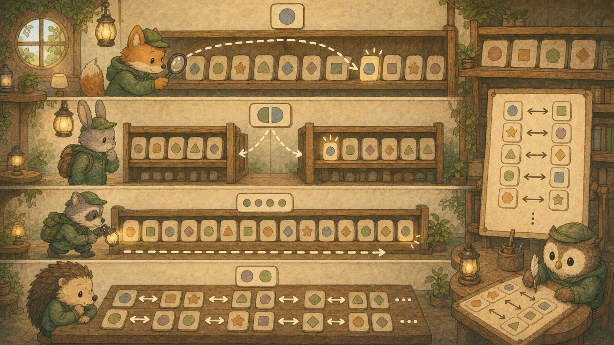
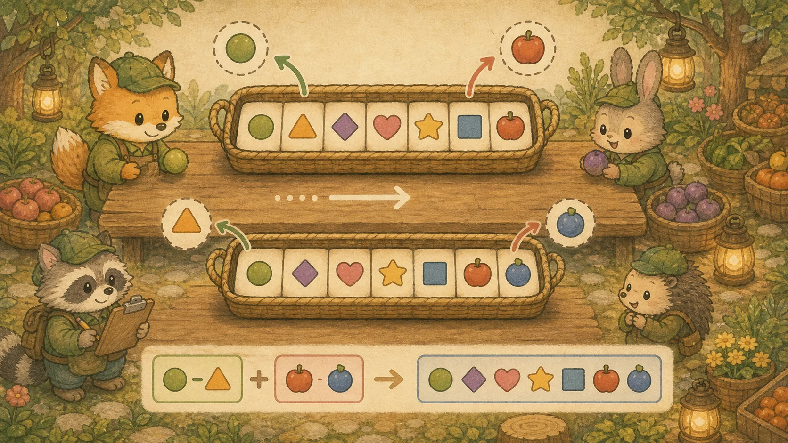

부록 C. 코딩 테스트 대비 자바 알고리즘 패키지
재귀·자료구조 기초부터 핵심 알고리즘 12종(BFS/DFS/이분탐색/DP/그리디/백트래킹/다익스트라 등) + 입출력 템플릿 + 문제 접근 전략, 그리고 카카오·네이버·토스·쿠팡 등 기업 빈출 실전 41문제(난이도 배지 + Java 17 javac 검증 풀이)까지. 각 알고리즘은 쇼핑몰 비유와 완전한 구현 코드를 제공합니다.
🧰 A. 기초 도구: 시간복잡도 & 입출력
1. Big-O 시간복잡도와 자바 컬렉션 성능 명세표
코딩 테스트에서 "효율성" 통과의 핵심은 자료구조 선택입니다. 입력 크기(N)에 따라 허용 가능한 시간복잡도가 다릅니다:
💡 비유로 이해하기: 쇼핑몰 상품 검색 속도
O(1)은 바코드 스캔 — 상품이 몇 만개든 즉시 찾음. O(log N)은 이름 가나다순 정렬된 카탈로그에서 반씩 넘기며 찾기. O(N)은 진열대를 처음부터 끝까지 훑기. O(N²)은 모든 상품을 모든 상품과 1:1 비교하기 — 1만 개면 1억 번 비교!

자바 컬렉션별 Big-O 성능:
2. 초고속 입출력 템플릿 (BufferedReader)
Scanner는 느립니다. 백준/프로그래머스 대용량 입력에서는 반드시 BufferedReader + StringTokenizer를 사용합니다.
import java.io.*;
import java.util.*;
public class Main {
public static void main(String[] args) throws Exception {
BufferedReader br = new BufferedReader(new InputStreamReader(System.in));
StringBuilder sb = new StringBuilder(); // 출력용 (println 대신!)
int N = Integer.parseInt(br.readLine().trim());
StringTokenizer st = new StringTokenizer(br.readLine());
int[] arr = new int[N];
for (int i = 0; i < N; i++) {
arr[i] = Integer.parseInt(st.nextToken());
}
// 로직 작성 후...
sb.append("결과: ").append(Arrays.stream(arr).sum()).append("\n");
System.out.print(sb); // 한 번에 출력 (flush 자동)
}
}3. 재귀와 자료구조 기초 — DFS·DP 이전의 필수 토대
Big-O 표에서 ArrayList·HashMap·PriorityQueue를 "사용"만 했지만, 각각이 무엇이고 왜 그 복잡도인지 모르면 문제 풀이가 막힙니다. 또 DFS/DP는 재귀 없이 이해 불가능합니다.
① 재귀(Recursion) — 자기 자신을 부르는 함수
💡 비유로 이해하기: 러시아 인형(마트료시카)
인형을 열면 더 작은 인형이 나오고, 또 열면 더 작은 게 나옵니다. 가장 작은 인형(베이스 케이스)에 도달하면 멈추고 다시 거꾸로 닫으며 돌아옵니다. 재귀는 "큰 문제를 같은 형태의 작은 문제로 쪼개되, 멈출 지점을 반드시 정하는" 기법입니다.
// 재귀의 2요소: ① 베이스 케이스(멈춤) ② 재귀 호출(자기 자신)
int factorial(int n) {
if (n <= 1) return 1; // ① 베이스 케이스 — 없으면 무한 루프 → StackOverflow
return n * factorial(n - 1); // ② 재귀 호출 (더 작은 문제)
}
// factorial(3) → 3 * factorial(2) → 3 * 2 * factorial(1) → 3*2*1 = 6
// 콜 스택: 함수 호출이 쌓였다가(stack push) 베이스 케이스부터 거꾸로 풀림(pop)
// factorial(3) 호출 시 스택에 3→2→1 쌓이고, 1부터 반환되며 곱해짐
// 🎯 DFS는 재귀로 그래프를 깊이 탐색, DP는 재귀 + 메모이제이션이 출발점
int fib(int n, int[] memo) {
if (n <= 1) return n;
if (memo[n] != 0) return memo[n]; // 이미 계산? 재사용 (메모이제이션)
return memo[n] = fib(n-1, memo) + fib(n-2, memo);
}② 핵심 자료구조 정의
| 자료구조 | 정의 & 특징 | 자바 클래스 |
|---|---|---|
| 배열/리스트 | 순서 있는 연속 저장. 인덱스 접근 O(1), 중간 삽입 O(N) | ArrayList |
| 스택(Stack) | LIFO(후입선출). 접시 쌓기. 괄호 검증·DFS·되돌리기 | ArrayDeque |
| 큐(Queue) | FIFO(선입선출). 줄 서기. BFS·작업 대기열 | ArrayDeque / LinkedList |
| 해시(Hash) | 키→값 매핑. 해시 함수로 O(1) 조회. 순서 없음 | HashMap / HashSet |
| 트리(Tree) | 계층 구조. 부모-자식. 정렬 유지 시 O(log N) | TreeMap (균형 트리) |
| 힙(Heap) | 최소/최대값을 O(log N)에 꺼내는 우선순위 큐 | PriorityQueue |
| 그래프(Graph) | 노드+간선. 인접 리스트로 표현. BFS/DFS/다익스트라 대상 | List<List<Integer>> |
⛓️ 스택/큐 → BFS(큐)·DFS(스택/재귀), 힙 → 다익스트라, 재귀+메모이제이션 → DP. 컬렉션 Big-O는 섹션 1 표 참고.
🔍 B. 탐색 알고리즘
4. 너비 우선 탐색 (BFS) — 최단 거리의 정석
Queue를 사용하여 시작점에서 가까운 노드부터 탐색합니다. 최단 거리 / 최소 횟수 문제에 사용합니다.
💡 비유로 이해하기: 물 위에 돌 던지기
돌(시작점)을 던지면 물결(탐색)이 동심원 형태로 동시에 퍼져나갑니다. 가장 먼저 도착한 물결 = 최단 경로입니다.
// BFS 핵심: Queue + visited 배열 + 4방향 이동
int[] dx = {-1, 1, 0, 0}; // 상, 하, 좌, 우
int[] dy = {0, 0, -1, 1};
public int bfs(int[][] grid, int startX, int startY) {
int N = grid.length, M = grid[0].length;
boolean[][] visited = new boolean[N][M];
Queue<int[]> queue = new LinkedList<>();
queue.add(new int[]{startX, startY, 0}); // {x, y, 거리}
visited[startX][startY] = true;
while (!queue.isEmpty()) {
int[] cur = queue.poll();
int x = cur[0], y = cur[1], dist = cur[2];
if (x == N - 1 && y == M - 1) return dist; // 도착!
for (int d = 0; d < 4; d++) {
int nx = x + dx[d], ny = y + dy[d];
if (nx >= 0 && nx < N && ny >= 0 && ny < M
&& !visited[nx][ny] && grid[nx][ny] == 1) {
visited[nx][ny] = true;
queue.add(new int[]{nx, ny, dist + 1});
}
}
}
return -1; // 도달 불가
}시간복잡도: O(V + E) — V: 정점 수, E: 간선 수
5. 깊이 우선 탐색 (DFS) — 경로 탐색 & 백트래킹
Stack 또는 재귀를 사용하여 한 방향으로 끝까지 파고드는 탐색입니다. 모든 경로 탐색, 조합/순열, 연결 요소 수 문제에 사용합니다.
// DFS 핵심: 재귀 + visited 배열
boolean[] visited;
public int countNetworks(int n, int[][] computers) {
visited = new boolean[n];
int count = 0;
for (int i = 0; i < n; i++) {
if (!visited[i]) {
dfs(i, computers);
count++; // 하나의 연결 요소(네트워크) 발견
}
}
return count;
}
private void dfs(int node, int[][] computers) {
visited[node] = true;
for (int next = 0; next < computers.length; next++) {
if (!visited[next] && computers[node][next] == 1) {
dfs(next, computers); // 연결된 노드로 재귀 진입
}
}
}DFS vs BFS 선택 기준:
6. 이분 탐색 (Binary Search) — O(log N)의 마법
정렬된 배열에서 탐색 범위를 반씩 줄여가며 목표값을 찾습니다. "~가 가능한 최대/최소값"을 구하는 파라메트릭 서치에도 활용됩니다.
// 기본 이분 탐색: 정렬된 배열에서 target 찾기
public int binarySearch(int[] arr, int target) {
int left = 0, right = arr.length - 1;
while (left <= right) {
int mid = left + (right - left) / 2; // 오버플로 방지!
if (arr[mid] == target) return mid;
else if (arr[mid] < target) left = mid + 1;
else right = mid - 1;
}
return -1; // 못 찾음
}
// 파라메트릭 서치: "조건을 만족하는 최솟값" 찾기
// 예: 입국심사 — N명을 처리하는 최소 시간
public long parametricSearch(int n, int[] times) {
Arrays.sort(times);
long left = 1, right = (long) times[times.length - 1] * n;
while (left < right) {
long mid = (left + right) / 2;
long count = 0;
for (int t : times) count += mid / t; // mid 시간 동안 처리 가능한 인원
if (count >= n) right = mid; // 가능 → 시간 줄여보기
else left = mid + 1; // 불가능 → 시간 늘리기
}
return left;
}📊 C. 정렬 알고리즘
7. 정렬 알고리즘 비교 & 자바 실전 정렬
// 1. 기본 정렬
int[] arr = {5, 3, 8, 1};
Arrays.sort(arr); // [1, 3, 5, 8]
// 2. 객체 배열 커스텀 정렬 (가격 내림차순)
String[][] products = {{"셔츠", "30000"}, {"자켓", "89000"}, {"바지", "45000"}};
Arrays.sort(products, (a, b) -> Integer.parseInt(b[1]) - Integer.parseInt(a[1]));
// 결과: 자켓(89000) → 바지(45000) → 셔츠(30000)
// 3. 다중 조건 정렬 (1순위: 카테고리 오름차순, 2순위: 가격 내림차순)
Arrays.sort(products, (a, b) -> {
if (a[0].equals(b[0])) return Integer.parseInt(b[1]) - Integer.parseInt(a[1]);
return a[0].compareTo(b[0]);
});
// 4. "가장 큰 수" 문제 — 문자열 조합 정렬
String[] nums = {"3", "30", "34", "5", "9"};
Arrays.sort(nums, (a, b) -> (b + a).compareTo(a + b));
String result = String.join("", nums); // "9534330"⚡ D. 핵심 패턴
8. 투 포인터 (Two Pointer) — O(N²) → O(N)
정렬된 배열에서 두 개의 포인터를 양 끝에서 좁혀오며 조건을 만족하는 쌍을 찾습니다. 2중 반복문(O(N²))을 O(N)으로 줄이는 핵심 테크닉입니다.
public int[] twoSum(int[] sorted, int target) {
int left = 0, right = sorted.length - 1;
while (left < right) {
int sum = sorted[left] + sorted[right];
if (sum == target) return new int[]{left, right};
else if (sum < target) left++; // 합이 작으면 왼쪽 포인터 →
else right--; // 합이 크면 오른쪽 포인터 ←
}
return new int[]{-1, -1};
}9. 슬라이딩 윈도우 (Sliding Window) — 연속 구간 최적화
고정 크기(또는 가변 크기)의 "창문"을 배열 위에서 한 칸씩 밀며 구간 합/최대값 등을 O(N)에 구합니다.
💡 비유로 이해하기: 쇼핑몰 매출 분석
"최근 7일 매출 합계"를 매일 계산할 때, 매번 7일치를 다시 더하지 않고 어제 빠진 1일 매출을 빼고, 오늘 새로 들어온 1일 매출을 더합니다. 이것이 슬라이딩 윈도우입니다.

public int maxSalesSum(int[] sales, int k) {
// 첫 윈도우의 합 계산
int windowSum = 0;
for (int i = 0; i < k; i++) windowSum += sales[i];
int maxSum = windowSum;
// 윈도우를 한 칸씩 슬라이드
for (int i = k; i < sales.length; i++) {
windowSum += sales[i]; // 새로 들어온 날 추가
windowSum -= sales[i - k]; // 빠져나간 날 제거
maxSum = Math.max(maxSum, windowSum);
}
return maxSum;
}10. 스택 활용 — 괄호 검증 & 단조 스택
스택은 "가장 최근에 넣은 것을 먼저 꺼내는" LIFO(Last In First Out) 구조입니다. 괄호 문제, 히스토그램, 주식 가격 등에 필수입니다.
public boolean isValid(String s) {
Deque<Character> stack = new ArrayDeque<>();
for (char c : s.toCharArray()) {
if (c == '(' || c == '{' || c == '[') {
stack.push(c);
} else {
if (stack.isEmpty()) return false;
char top = stack.pop();
if (c == ')' && top != '(') return false;
if (c == '}' && top != '{') return false;
if (c == ']' && top != '[') return false;
}
}
return stack.isEmpty(); // 남은 괄호 없어야 true
}🧮 E. DP & 그리디
11. 동적 프로그래밍 (DP) — 점화식의 기술
큰 문제를 작은 하위 문제로 나누고, 이전에 계산한 결과를 메모이제이션(캐싱)하여 중복 계산을 제거합니다. 핵심은 점화식을 세우는 것입니다.
💡 비유로 이해하기: 계단 오르기
100층 계단을 오르려면 "99층에서 1칸 올라왔거나, 98층에서 2칸 올라온 것"입니다. 즉, f(100) = f(99) + f(98). 매번 1층부터 새로 세는 게 아니라, 이미 센 결과를 표에 적어두고 꺼내 씁니다.
// 1. 피보나치 (Bottom-Up)
public int fibonacci(int n) {
int[] dp = new int[n + 1];
dp[0] = 0; dp[1] = 1;
for (int i = 2; i <= n; i++) {
dp[i] = dp[i - 1] + dp[i - 2]; // 점화식!
}
return dp[n];
}
// 2. 정수 삼각형 (위에서 아래로 최대 합 경로)
// 점화식: dp[i][j] = triangle[i][j] + max(dp[i-1][j-1], dp[i-1][j])
public int maxTrianglePath(int[][] tri) {
int n = tri.length;
int[][] dp = new int[n][n];
dp[0][0] = tri[0][0];
for (int i = 1; i < n; i++) {
dp[i][0] = dp[i - 1][0] + tri[i][0]; // 왼쪽 끝
for (int j = 1; j < i; j++) {
dp[i][j] = Math.max(dp[i - 1][j - 1], dp[i - 1][j]) + tri[i][j];
}
dp[i][i] = dp[i - 1][i - 1] + tri[i][i]; // 오른쪽 끝
}
return Arrays.stream(dp[n - 1]).max().getAsInt();
}
// 3. 0-1 배낭 문제 (무게 제한 W, 최대 가치)
// 점화식: dp[i][w] = max(dp[i-1][w], dp[i-1][w-weight[i]] + value[i])
public int knapsack(int W, int[] weight, int[] value) {
int n = weight.length;
int[][] dp = new int[n + 1][W + 1];
for (int i = 1; i <= n; i++) {
for (int w = 0; w <= W; w++) {
dp[i][w] = dp[i - 1][w]; // 안 넣는 경우
if (weight[i - 1] <= w) {
dp[i][w] = Math.max(dp[i][w],
dp[i - 1][w - weight[i - 1]] + value[i - 1]); // 넣는 경우
}
}
}
return dp[n][W];
}12. 그리디 알고리즘 (Greedy) — 매 순간 최선의 선택
현재 상황에서 가장 좋은 선택을 반복하여 최적해에 도달하는 전략입니다. DP와 달리 이전 선택을 되돌아보지 않습니다. 항상 최적해를 보장하지는 않으므로, 그리디가 성립하는 조건을 증명해야 합니다.
// 핵심: 도난 학생을 기준으로, 바로 앞/뒤 여벌 학생에게 빌리기 (탐욕적 선택)
public int solution(int n, int[] lost, int[] reserve) {
int[] students = new int[n + 2]; // 1-indexed
Arrays.fill(students, 1); // 기본 1벌
for (int r : reserve) students[r]++;
for (int l : lost) students[l]--;
int count = 0;
for (int i = 1; i <= n; i++) {
if (students[i] == 0) { // 체육복 없는 학생
if (students[i - 1] >= 2) {
students[i - 1]--;
students[i]++;
} else if (students[i + 1] >= 2) {
students[i + 1]--;
students[i]++;
}
}
}
for (int i = 1; i <= n; i++) {
if (students[i] >= 1) count++;
}
return count;
}🏆 F. 고급 자료구조 & 알고리즘
13. 백트래킹 (Backtracking) — 순열 & 조합 생성기
DFS 탐색 중 조건을 만족하지 않으면 즉시 되돌아가 불필요한 탐색을 가지치기(pruning)합니다.
List<List<Integer>> result = new ArrayList<>();
public void combination(int[] arr, int start, int r, List<Integer> current) {
if (current.size() == r) {
result.add(new ArrayList<>(current)); // 깊은 복사!
return;
}
for (int i = start; i < arr.length; i++) {
current.add(arr[i]);
combination(arr, i + 1, r, current); // i+1로 중복 방지
current.remove(current.size() - 1); // 되돌리기 (백트래킹!)
}
}
// 순열은 visited 배열 사용
public void permutation(int[] arr, boolean[] visited, List<Integer> current) {
if (current.size() == arr.length) {
result.add(new ArrayList<>(current));
return;
}
for (int i = 0; i < arr.length; i++) {
if (!visited[i]) {
visited[i] = true;
current.add(arr[i]);
permutation(arr, visited, current);
current.remove(current.size() - 1);
visited[i] = false; // 되돌리기
}
}
}14. 다익스트라 (Dijkstra) — 가중치 그래프 최단 경로
PriorityQueue(최소 힙)를 사용하여 시작점에서 모든 정점까지의 최단 거리를 O(E log V)에 구합니다.
// 그래프: List<int[]>[] adj (adj[from] = {to, weight})
public int[] dijkstra(List<int[]>[] adj, int start, int n) {
int[] dist = new int[n + 1];
Arrays.fill(dist, Integer.MAX_VALUE);
dist[start] = 0;
// {거리, 노드} — 거리 기준 최소 힙
PriorityQueue<int[]> pq = new PriorityQueue<>((a, b) -> a[0] - b[0]);
pq.add(new int[]{0, start});
while (!pq.isEmpty()) {
int[] cur = pq.poll();
int curDist = cur[0], curNode = cur[1];
if (curDist > dist[curNode]) continue; // 이미 더 짧은 경로 발견됨
for (int[] next : adj[curNode]) {
int nextNode = next[0], weight = next[1];
int newDist = dist[curNode] + weight;
if (newDist < dist[nextNode]) {
dist[nextNode] = newDist;
pq.add(new int[]{newDist, nextNode});
}
}
}
return dist; // dist[i] = start에서 i까지 최단 거리
}🎯 G. 코딩 테스트 전략 & 문제 큐레이션
15. 코딩 테스트 문제 접근 5단계 전략
① 문제 읽기 (5분)
입출력 예시를 꼼꼼히 읽고, 제약 조건(N의 범위)을 확인하여 시간복잡도 상한을 역산합니다.
② 패턴 인식 (3분)
"최단 거리" → BFS, "모든 경우" → DFS/백트래킹, "최적값" → DP/그리디, "정렬 후 탐색" → 이분탐색
③ 자료구조 선택 (2분)
중복 체크 → HashSet, 순서 유지 → ArrayList, 최솟값 추출 → PriorityQueue, LIFO → Stack
④ 코드 구현 (20~30분)
먼저 brute-force로 정확성을 확보한 뒤, 시간복잡도를 줄이는 최적화를 적용합니다.
⑤ 엣지 케이스 검증 (5분)
N=0, N=1, 최대값, 음수, 중복 데이터, 빈 배열 등을 직접 대입해 테스트합니다.
🧩 코딩 테스트 합격 엄선 빈출 15선
프로그래머스 고득점 Kit 기준 복귀 시 무조건 먼저 풀어야 할 큐레이션 세트입니다.
🏢 H. 기업 코딩 테스트 빈출 실전 — 문제 & 풀이
16. 기업 빈출 유형 41문제 — 회사 스타일 오리지널 + Java 정답
앞의 14개 패턴을 실제 코딩 테스트 형태로 연습합니다. 카카오·네이버·라인·토스·쿠팡·무신사·당근·우아한형제들 등에서 자주 나오는 유형을 오리지널 문제로 재구성했고(표절 없이 패턴만 차용), 모든 Java 풀이는 Java 17 javac 컴파일 + 입출력/엣지케이스 실행으로 검증했습니다. 각 패턴 끝에는 실제 기출 참조 리스트(원문 미수록, 제목·출처·난이도만)를 두어 원본까지 찾아 풀 수 있게 했습니다.
💡 난이도 배지는 프로그래머스 기준
Lv.1 입문 · Lv.2 기본 · Lv.3 핵심 · Lv.4 도전. 각 패턴 안에서 쉬움 → 어려움 순으로 배열했으니 위에서부터 차례로 풀어 올라가세요. 풀이는 “💡 풀이 보기”를 눌러 펼칩니다.
🧱 구현·시뮬레이션 — 카카오 Blind · 삼성 SW역량 · 토스
Rehab Fashion 쇼핑몰의 하루치 주문 로그를 분석해 베스트셀러 순위표를 만들려 합니다. 각 주문 기록은 `상품명 카테고리 단가 수량` 으로 들어옵니다. 같은 상품명은 여러 번 등장할 수 있으며, 이때 매출액은 (단가 × 수량)을 모두 합산합니다(카테고리는 참고용 컬럼일 뿐 집계에는 사용하지 않습니다).
모든 상품을 다음 기준으로 정렬해 순위와 함께 출력하세요.
1순위: 총매출액이 큰 순(내림차순)
2순위: 총매출액이 같으면 총판매수량이 많은 순(내림차순)
3순위: 그래도 같으면 상품명 사전순(오름차순)
각 줄에 `순위 상품명 총매출액` 을 공백으로 구분해 출력합니다(순위는 1부터).
📐 제약 · 1 ≤ N ≤ 100,000 / 단가, 수량 ≥ 1 / 단가 × 수량의 누적 합은 long 범위 내 / 상품명·카테고리는 공백 없는 문자열, 상품명 길이 ≤ 20
⌨️ 입력 첫 줄에 주문 기록 수 N. 이어서 N개의 줄에 각각 `상품명 카테고리 단가 수량` 이 공백으로 구분되어 주어집니다.
🖨️ 출력 정렬된 순서대로 각 줄에 `순위 상품명 총매출액` 을 출력합니다. 순위는 1부터 1씩 증가합니다.
💡 풀이 보기 — 단계별 접근 · 검증된 Java 코드 · 해설
🪜 단계별 접근
- 같은 상품명이 여러 줄에 흩어져 나오므로, 먼저 '상품명 → (총매출액, 총수량)'을 합산할 Map을 준비한다. 출력 순서와는 무관하지만 입력 등장 순서를 보존하고 싶으면 LinkedHashMap을 쓴다.
- N개의 기록을 한 줄씩 읽으며 그 상품의 매출에 '단가×수량'을 더하고, 수량도 함께 누적한다. 카테고리 토큰은 집계에 안 쓰므로 읽기만 하고 버린다. (한 줄을 4토큰으로 쪼개는 단계)
- 집계가 끝나면 Map의 엔트리들을 리스트로 옮긴다. Map은 정렬이 안 되므로, 정렬은 리스트에서 한다.
- 리스트를 3중 기준으로 정렬한다: ①총매출 내림차순 → ②(매출이 같으면) 총수량 내림차순 → ③(그래도 같으면) 상품명 사전순 오름차순. 비교 함수를 위에서부터 'if로 갈라지는 우선순위'로 작성한다.
- 정렬된 순서대로 순위를 1부터 1씩 올려 가며 '순위 상품명 총매출액'을 StringBuilder에 모았다가 마지막에 한 번에 출력한다. (10만 줄을 매번 출력하면 느리므로 모아서 출력)
import java.io.*;
import java.util.*;
public class Main {
public static void main(String[] args) throws Exception {
BufferedReader br = new BufferedReader(new InputStreamReader(System.in));
StringBuilder sb = new StringBuilder();
int N = Integer.parseInt(br.readLine().trim());
// 상품명 -> [총매출액, 총판매수량] 을 누적할 표.
// LinkedHashMap 이라 입력에 처음 등장한 순서가 보존된다(동률 시 디버깅에 편리).
Map<String, long[]> agg = new LinkedHashMap<>();
for (int i = 0; i < N; i++) {
// 한 줄을 "상품명 카테고리 단가 수량" 4개 토큰으로 분리
StringTokenizer st = new StringTokenizer(br.readLine());
String name = st.nextToken();
st.nextToken(); // 카테고리(상의/하의/잡화 등) — 집계에는 쓰지 않으므로 읽고 버린다
long price = Long.parseLong(st.nextToken());
long qty = Long.parseLong(st.nextToken());
// 처음 보는 상품이면 {0,0}에서 시작, 이미 있으면 기존 누적값을 가져와 이어서 더한다
long[] cur = agg.getOrDefault(name, new long[]{0L, 0L});
cur[0] += price * qty; // [0] 매출액 = 단가 * 수량 (long 으로 누적해 오버플로 방지)
cur[1] += qty; // [1] 누적 판매 수량
agg.put(name, cur);
}
// Map 은 정렬이 없으므로 리스트로 옮긴 뒤 정렬한다
List<Map.Entry<String, long[]>> list = new ArrayList<>(agg.entrySet());
// 정렬 우선순위: ①총매출 내림차순 -> ②총수량 내림차순 -> ③상품명 사전순 오름차순
list.sort((a, b) -> {
// 내림차순은 Long.compare(b, a) 처럼 인자를 뒤집어서 만든다
if (a.getValue()[0] != b.getValue()[0]) return Long.compare(b.getValue()[0], a.getValue()[0]);
if (a.getValue()[1] != b.getValue()[1]) return Long.compare(b.getValue()[1], a.getValue()[1]);
// 여기까지 같으면 이름은 오름차순(사전순)
return a.getKey().compareTo(b.getKey());
});
// 정렬된 순서대로 1부터 순위를 매겨 출력
int rank = 1;
for (Map.Entry<String, long[]> e : list) {
sb.append(rank++).append(' ')
.append(e.getKey()).append(' ')
.append(e.getValue()[0]).append('\n');
}
System.out.print(sb); // 모아서 한 번에 출력(줄마다 출력하면 느리다)
}
}🧠 해설 · 이 문제는 '표로 합산한 뒤 여러 기준으로 줄 세우기' 유형의 전형입니다. 두 가지만 정확히 처리하면 됩니다.
(1) 같은 키 합치기: 동일 상품명이 여러 줄에 나오므로 Map에 매출·수량을 누적해야 합니다. getOrDefault(name, 기본값)을 쓰면 '처음 보는 상품이면 0에서 시작, 이미 있으면 기존 값에 더하기'를 if 없이 깔끔하게 처리할 수 있습니다.
(2) 다중 기준 정렬: 비교 함수를 '①매출 → ②수량 → ③이름' 순서로 작성합니다. 앞 기준에서 값이 다르면 거기서 즉시 승부가 나고, 같을 때만 다음 기준으로 내려갑니다. 내림차순은 Long.compare(b, a)처럼 인자 순서를 뒤집어 만들고, 이름 사전순(오름차순)만 a.compareTo(b)로 둡니다.
핵심 함정: 매출 누적합은 int 범위를 넘길 수 있습니다(최대 10만 건 × 큰 단가). 그래서 long으로 누적하고 Long.compare로 비교해 오버플로(자료형이 표현할 수 있는 최댓값을 넘겨 음수가 되는 현상)를 피해야 합니다. N이 최대 10만이라 O(N) 합산 + O(K log K) 정렬로 시간 안에 충분히 들어옵니다(K=고유 상품 수).
⏱️ 시간복잡도 O(N + K log K) — N은 기록 수, K는 고유 상품 수(K ≤ N) · 💾 공간복잡도 O(K)
Rehab Fashion 물류센터는 상품을 식별하는 바코드 문자열을 더 짧게 저장하려 합니다. 압축 규칙은 다음과 같습니다.
문자열을 앞에서부터 일정한 '단위 길이' 만큼 끊어 토큰으로 나눕니다. 인접한 토큰이 같으면 (반복횟수 + 토큰) 형태로 묶어 표현합니다. 예를 들어 단위 길이가 1일 때 `aaaa`는 `4a`로, 단위 길이가 2일 때 `ababab`는 `3ab`로 압축됩니다. 반복이 1회뿐이면 숫자를 생략합니다(`abc` → 그대로 `abc`).
단위 길이를 1부터 문자열 길이의 절반까지 모두 시도했을 때, 압축한 결과 문자열의 **가장 짧은 길이**를 출력하세요. (압축하지 않은 원본보다 길어질 수 없으므로 원본 길이가 상한입니다.)
📐 제약 · 1 ≤ 문자열 길이 ≤ 1,000 / 입력은 소문자 알파벳으로만 구성 / 단위 길이로 끊을 때 마지막에 단위로 딱 떨어지지 않고 남는 꼬리는 그대로 둔다(압축 대상 아님)
⌨️ 입력 한 줄에 압축할 문자열 s가 주어집니다.
🖨️ 출력 가능한 모든 단위 길이로 압축했을 때의 최소 결과 길이를 정수로 한 줄에 출력합니다.
💡 풀이 보기 — 단계별 접근 · 검증된 Java 코드 · 해설
🪜 단계별 접근
- 단위 길이 unit(한 토큰으로 끊을 글자 수)을 1부터 len/2까지 모두 시도한다. unit이 절반보다 크면 반복이 2번 이상 생길 수 없어 압축이 무의미하므로 후보에서 제외한다.
- 고른 unit에 대해 문자열을 앞에서부터 unit씩 잘라 토큰을 만든다. 직전 토큰(prev)과 지금 토큰(cur)이 같으면 '반복 횟수 count'를 1 늘린다.
- 토큰이 달라지는 순간, 직전까지 쌓인 묶음의 '표기 길이'를 확정해 누적한다. 표기 길이는 count==1이면 숫자를 생략하므로 unit, count가 2 이상이면 (반복횟수의 자릿수 + unit)이다. 예: 'aaaa'는 unit=1, count=4 → '4a'로 길이 2.
- 문자열이 unit으로 딱 나눠떨어지지 않으면 맨 끝에 꼬리가 남는다. 이 꼬리는 압축 대상이 아니라 글자 수 그대로 더한다.
- 루프가 끝난 뒤 '마지막으로 세고 있던 묶음'을 확정하는 것을 잊지 않는다(이걸 빠뜨리는 게 가장 흔한 실수). 원본 길이를 초기 최솟값으로 두고, 모든 unit 결과 중 가장 작은 값을 답으로 낸다.
import java.io.*;
import java.util.*;
public class Main {
public static void main(String[] args) throws Exception {
BufferedReader br = new BufferedReader(new InputStreamReader(System.in));
String s = br.readLine();
if (s == null) s = "";
s = s.trim();
System.out.println(minCompressedLength(s));
}
// 단위 길이를 1..s.length()/2 까지 모두 시도해 가장 짧은 압축 길이를 반환.
static int minCompressedLength(String s) {
int n = s.length();
if (n <= 1) return n; // 길이 0 또는 1은 압축 불가, 그대로 반환
int best = n; // 압축을 전혀 안 한 원본 길이가 일단 최솟값 후보(상한)
// unit 이 n/2 를 넘으면 같은 토큰이 2번 이상 나올 수 없어 압축 효과가 없다
for (int unit = 1; unit <= n / 2; unit++) {
best = Math.min(best, compressByUnit(s, unit));
}
return best;
}
// 문자열을 unit 글자씩 끊어 인접한 같은 토큰을 (반복횟수+토큰)으로 압축했을 때의 길이.
static int compressByUnit(String s, int unit) {
int n = s.length();
int total = 0;
int count = 1; // 현재 토큰(prev)이 연속으로 등장한 횟수
String prev = s.substring(0, unit); // 첫 토큰
// i 는 '다음 토큰이 시작될 위치'. unit 씩 전진한다.
for (int i = unit; i <= n; i += unit) {
// i 부터 온전한 unit 글자를 못 떼면(cur 가 null) 꼬리 구간에 진입한 것
String cur = (i + unit <= n) ? s.substring(i, i + unit) : null;
if (i + unit > n) {
// (a) 여기서 끝나므로, 지금까지 세던 prev 묶음을 먼저 확정
total += encodedLen(count, unit);
// (b) unit 으로 나눠떨어지지 않아 남은 꼬리(i..n)는 압축 없이 글자 수 그대로 더한다
if (i < n) total += (n - i);
prev = null; // 아래 마지막 확정 블록이 또 더하지 않도록 표시
count = 0;
break;
}
if (cur.equals(prev)) {
count++; // 같은 토큰 연속 -> 횟수만 늘림
} else {
total += encodedLen(count, unit); // 토큰이 바뀌는 순간 직전 묶음 확정
prev = cur;
count = 1;
}
}
// 문자열이 unit 으로 딱 떨어진 경우엔 위 break 를 안 타므로 마지막 묶음을 여기서 확정
if (prev != null && count > 0) {
total += encodedLen(count, unit);
}
return total;
}
// 같은 토큰이 cnt 번 반복될 때의 표기 길이.
// cnt==1 이면 숫자를 생략하므로 unit, 그 외엔 (반복횟수 자릿수 + unit).
static int encodedLen(int cnt, int unit) {
if (cnt <= 1) return unit;
return Integer.toString(cnt).length() + unit; // 예) cnt=10 -> 자릿수 2
}
}🧠 해설 · 카카오 '문자열 압축' 유형의 핵심은 '단위 길이를 1..len/2까지 완전 탐색'하는 것입니다. 어떤 단위가 가장 짧은지는 미리 알 수 없으니 전부 해 보고 최솟값을 고릅니다. 길이가 최대 1000이라 단위 후보는 약 500개, 후보마다 문자열을 한 번 훑어 O(len) → 전체 O(len²/2) ≈ 50만 연산이라 넉넉히 통과합니다.
구현에서 자주 틀리는 세 지점:
(1) 마지막 묶음 확정 누락: 비교 루프는 '토큰이 달라질 때' 직전 묶음을 더합니다. 그래서 문자열 끝에 다다르면 아직 안 더한 마지막 묶음이 남습니다. 이걸 루프 종료 후 한 번 더 처리해야 합니다.
(2) 꼬리 처리: 단위로 나눠떨어지지 않는 뒷부분은 압축하지 않고 그대로 길이에 더합니다(예: 길이 8, unit=3이면 마지막 2글자가 꼬리).
(3) 반복 횟수 자릿수: 10번·100번 반복이면 숫자가 두세 자리가 되므로 Integer.toString(cnt).length()로 정확히 셉니다. 또 반복이 1회면 숫자를 안 붙이는 규칙(예: 'abc'는 그대로 'abc')도 빠뜨리면 안 됩니다.
참고: 이 풀이는 토큰 비교 루프와 '꼬리 처리'를 같은 for 안에서 처리합니다. 인덱스 i가 i+unit > n이 되는 순간을 '더 이상 온전한 토큰을 못 만드는 시점'으로 보고, 그 자리에서 직전 묶음을 확정한 뒤 남은 꼬리를 더하고 빠져나옵니다.
⏱️ 시간복잡도 O(L²) — L은 문자열 길이(단위 후보 L/2개 × 각 O(L) 스캔) · 💾 공간복잡도 O(L) — substring 토큰 보관
Rehab Fashion 플래그십 스토어 주차장의 하루 요금을 정산합니다. 요금 정책은 `기본시간(분) 기본요금(원) 단위시간(분) 단위요금(원)` 으로 주어집니다.
- 누적 주차 시간이 기본시간 이하이면 기본요금만 받습니다.
- 기본시간을 초과하면, 초과한 시간을 단위시간으로 나눈 값을 **올림**해 그 횟수만큼 단위요금을 기본요금에 더합니다.
- 같은 차량이 여러 번 들어오고 나갈 수 있으며, 모든 출입의 주차 시간을 **합산**해 한 번에 정산합니다.
- 영업 종료 시각인 23:59까지도 출차 기록이 없는 차량은 23:59에 출차한 것으로 간주합니다.
차량번호를 **오름차순**으로 정렬해 각 차량의 `차량번호 요금` 을 출력하세요.
📐 제약 · 시각은 24시간제 HH:MM 형식(00:00 ~ 23:59), 기록은 시간 순서대로 주어짐 / 1 ≤ M ≤ 1,000 / 각 IN 뒤에는 같은 차량의 OUT이 (있다면) 한 번 등장 / 동일 차량은 입차 중 다시 입차하지 않음 / 모든 분·요금 값은 0 이상 정수, 요금 합은 long 범위 내
⌨️ 입력 첫 줄에 `기본시간 기본요금 단위시간 단위요금`. 둘째 줄에 기록 수 M. 이어서 M개의 줄에 `HH:MM 차량번호 IN|OUT` 이 시간 순서대로 주어집니다.
🖨️ 출력 차량번호 오름차순으로 각 줄에 `차량번호 요금` 을 출력합니다.
💡 풀이 보기 — 단계별 접근 · 검증된 Java 코드 · 해설
🪜 단계별 접근
- 첫 줄에서 기본시간·기본요금·단위시간·단위요금 4개를 읽는다. 시각 'HH:MM'은 뺄셈으로 시간차를 구하기 쉽도록 '시×60+분'의 분 단위 정수로 바꾼다.
- 자료구조 두 개를 둔다: ①'차량번호 → 입차시각'을 담는 HashMap(현재 주차 중인 차량 추적용), ②'차량번호 → 누적 주차분'을 담는 TreeMap(나중에 차량번호 오름차순 출력을 공짜로 얻기 위함).
- 기록을 순서대로 읽으며, 모든 차량을 누적표에 0으로 등록해 둔다(요금이 기본요금만 나오는 차량도 출력해야 하므로). IN이면 입차시각을 기록하고, OUT이면 입차Map에서 입차시각을 꺼내 (현재시각−입차시각)을 누적분에 더한다.
- 모든 기록을 처리한 뒤에도 입차Map에 남아 있는 차량은 아직 출차를 안 한 것이다. 이들은 영업 종료 23:59(=1439분)에 나간 것으로 보고 (1439−입차시각)을 누적분에 더한다.
- 각 차량의 누적분으로 요금을 계산한다: 기본시간 이하면 기본요금만, 초과하면 초과분을 단위시간으로 나눠 '올림'한 횟수만큼 단위요금을 더한다. TreeMap을 그대로 순회하면 차량번호 오름차순으로 출력된다.
import java.io.*;
import java.util.*;
public class Main {
public static void main(String[] args) throws Exception {
BufferedReader br = new BufferedReader(new InputStreamReader(System.in));
StringBuilder sb = new StringBuilder();
// 1번째 줄: 기본시간(분) 기본요금(원) 단위시간(분) 단위요금(원)
StringTokenizer st = new StringTokenizer(br.readLine());
int baseTime = Integer.parseInt(st.nextToken());
int baseFee = Integer.parseInt(st.nextToken());
int unitTime = Integer.parseInt(st.nextToken());
int unitFee = Integer.parseInt(st.nextToken());
// 2번째 줄: 기록 개수 M
int M = Integer.parseInt(br.readLine().trim());
// 차량번호 -> 입차 시각(분). 키가 있으면 '현재 주차 중', OUT 되면 제거된다.
Map<String, Integer> inTime = new HashMap<>();
// 차량번호 -> 누적 주차 시간(분). 차량번호 오름차순 출력을 위해 TreeMap 사용.
TreeMap<String, Integer> total = new TreeMap<>();
for (int i = 0; i < M; i++) {
st = new StringTokenizer(br.readLine());
String hhmm = st.nextToken(); // 시각 HH:MM
String car = st.nextToken(); // 차량번호 ('0000' 같은 앞자리 0 때문에 문자열로 다룬다)
String act = st.nextToken(); // IN 또는 OUT
int t = toMinutes(hhmm); // 분 단위 정수로 변환
// 기본요금만 내는 차량도 출력 대상이므로, 등장한 모든 차량을 0으로 등록해 둔다
total.putIfAbsent(car, 0);
if (act.equals("IN")) {
inTime.put(car, t); // 입차: 시각 기록
} else { // OUT
int in = inTime.remove(car); // 출차: 입차시각을 꺼내며 '주차 중' 상태 해제
total.put(car, total.get(car) + (t - in)); // 이번 세션 체류시간 누적
}
}
// 기록이 끝나도 inTime 에 남은 차량 = 출차 기록이 없는 차량 -> 23:59 에 나간 것으로 간주
final int CLOSE = toMinutes("23:59"); // = 1439분
for (Map.Entry<String, Integer> e : inTime.entrySet()) {
String car = e.getKey();
total.put(car, total.get(car) + (CLOSE - e.getValue()));
}
// 차량번호 오름차순(TreeMap 순회)으로 요금 계산 후 출력
for (Map.Entry<String, Integer> e : total.entrySet()) {
int minutes = e.getValue();
long fee = baseFee; // 기본요금에서 시작
if (minutes > baseTime) {
int over = minutes - baseTime; // 기본시간 초과분
// 정수 올림 나눗셈: ceil(over/unitTime). 부동소수점 대신 +단위-1 관용구로 안전하게.
long blocks = (over + unitTime - 1L) / unitTime;
fee += blocks * unitFee;
}
sb.append(e.getKey()).append(' ').append(fee).append('\n');
}
System.out.print(sb);
}
// "HH:MM" -> 자정 기준 분(시*60+분). 시간차를 뺄셈으로 구하려는 목적.
static int toMinutes(String hhmm) {
int h = Integer.parseInt(hhmm.substring(0, 2));
int m = Integer.parseInt(hhmm.substring(3, 5));
return h * 60 + m;
}
}🧠 해설 · 카카오 '주차 요금 계산' 유형의 시뮬레이션입니다. 뼈대는 셋입니다. (1) HH:MM을 분 단위 정수로 바꿔 시간차를 단순 뺄셈으로 구하기, (2) IN/OUT 짝을 Map으로 맞춰 세션마다 체류시간을 누적하기, (3) 종료 시각까지 안 나간 차량을 23:59 출차로 보정하기.
가장 실수하기 쉬운 부분은 '초과 시간의 올림 분할'입니다. 7분 초과를 5분 단위로 나누면 1.4지만 올림해서 2블록을 받아야 합니다. 정수 올림 나눗셈은 (over + unitTime − 1) / unitTime 관용구로 구현합니다. 부동소수점 Math.ceil은 값이 커지면 미세 오차로 틀릴 수 있어 피합니다.
또 두 가지 주의점이 있습니다. ①출력이 차량번호 오름차순이므로 누적표를 TreeMap으로 두면 별도 정렬 코드 없이 키 순서대로 순회됩니다. ②차량번호 '0000'처럼 앞자리 0이 있을 수 있어 정수가 아니라 문자열로 다뤄야 정렬과 표기가 깨지지 않습니다(정수로 바꾸면 0이 사라짐). 요금 합은 long 범위로 누적합니다.
⏱️ 시간복잡도 O(M log K) — M은 기록 수, K는 차량 수(TreeMap 삽입·순회) · 💾 공간복잡도 O(K)
Rehab Fashion 물류센터를 R×C 격자로 모델링합니다. 각 칸은 다음 중 하나입니다.
- `.` : 빈 통로
- `#` : 선반(벽). 로봇이 들어갈 수 없습니다.
- `1`~`9` : 그 칸에 놓인 물품 개수
피킹 로봇이 시작 칸·시작 방향에서 출발해 명령어 문자열을 순서대로 수행합니다.
- `L` : 제자리에서 왼쪽으로 90도 회전
- `R` : 제자리에서 오른쪽으로 90도 회전
- `F` : 바라보는 방향으로 한 칸 전진. 단, 격자 밖이거나 선반(`#`)이면 그 명령은 무시하고 제자리에 머뭅니다.
로봇이 어떤 칸에 도착(또는 시작)하면 그 칸의 물품을 모두 수거하고, 그 칸은 빈 통로가 됩니다(같은 칸을 다시 지나도 추가 수거는 없습니다). 방향은 북(N)·동(E)·남(S)·서(W)로 표기합니다.
모든 명령을 마친 뒤 로봇의 `최종행 최종열 최종방향` 을 첫 줄에, 수거한 물품의 총개수를 둘째 줄에 출력하세요.
📐 제약 · 1 ≤ R, C ≤ 100 / 행·열 인덱스는 0부터 시작(시작 칸은 항상 격자 안의 통로 또는 물품 칸) / 시작 방향은 N/E/S/W 중 하나 / 명령어 길이 ≤ 10,000, 문자는 L·R·F / 물품 칸 값은 1~9
⌨️ 입력 첫 줄에 `R C`. 다음 R개의 줄에 격자가 한 줄씩 주어집니다. 그다음 줄에 `시작행 시작열 시작방향`. 마지막 줄에 명령어 문자열이 주어집니다.
🖨️ 출력 첫 줄에 `최종행 최종열 최종방향(N/E/S/W)`, 둘째 줄에 수거한 물품 총개수를 출력합니다.
💡 풀이 보기 — 단계별 접근 · 검증된 Java 코드 · 해설
🪜 단계별 접근
- 방향을 숫자로 표현한다: 0=N(북), 1=E(동), 2=S(남), 3=W(서)를 '시계 방향' 순서로 둔다. 이렇게 하면 우회전은 +1, 좌회전은 −1(=+3)이라는 규칙이 성립한다.
- 같은 순서에 맞춰 행·열 이동량 배열 DR={-1,0,1,0}, DC={0,1,0,-1}을 만든다. 인덱스 dir로 DR[dir], DC[dir]을 더하면 그 방향으로 한 칸 이동이다. (DR/DC의 순서가 N·E·S·W와 어긋나면 전부 틀어지므로 가장 조심할 부분)
- 격자를 char 배열로 읽고 시작 행·열·방향과 명령 문자열을 파싱한다. 로봇은 도착·시작한 칸의 물품을 줍는 규칙이므로, 명령을 돌기 전에 시작 칸의 물품을 먼저 한 번 수거한다.
- 명령을 한 글자씩 처리한다. L이면 dir=(dir+3)%4, R이면 dir=(dir+1)%4로 제자리 회전. F이면 dir 방향의 다음 칸 (nr,nc)를 계산한다.
- F의 다음 칸이 격자 밖이거나 '#'(선반)이면 그 명령을 무시하고 제자리에 머문다(continue). 아니면 그 칸으로 이동한 뒤 물품을 수거하고, 중복 수거를 막으려고 그 칸을 즉시 '.'으로 비운다.
- 모든 명령을 마치면 최종 행·열·방향 문자(N/E/S/W)를 첫 줄, 누적 수거량을 둘째 줄에 출력한다.
import java.io.*;
import java.util.*;
public class Main {
// 방향 인덱스: 0=N(북), 1=E(동), 2=S(남), 3=W(서) (시계 방향 순서!)
// 시계 방향이라 우회전=+1, 좌회전=-1(=+3) 규칙이 성립한다.
static final int[] DR = {-1, 0, 1, 0}; // 각 방향의 행 변화량 (위로 가면 행이 줄어 N은 -1)
static final int[] DC = {0, 1, 0, -1}; // 각 방향의 열 변화량 (E는 오른쪽 +1)
static final String DIRS = "NESW"; // 인덱스->문자. DR/DC 와 순서가 반드시 같아야 한다.
public static void main(String[] args) throws Exception {
BufferedReader br = new BufferedReader(new InputStreamReader(System.in));
StringBuilder sb = new StringBuilder();
// 1줄: R C
StringTokenizer st = new StringTokenizer(br.readLine());
int R = Integer.parseInt(st.nextToken());
int C = Integer.parseInt(st.nextToken());
// 다음 R줄: 격자. '.'=빈칸, '#'=벽(선반), '1'~'9'=물품 개수
char[][] grid = new char[R][];
for (int i = 0; i < R; i++) {
String row = br.readLine();
// 윈도우 CRLF 등 줄 끝 공백/\r 제거 후 char 배열로 (안 그러면 '\r'이 칸으로 섞임)
grid[i] = stripCr(row).toCharArray();
}
// 다음 줄: 시작행 시작열 시작방향(N/E/S/W)
st = new StringTokenizer(br.readLine());
int r = Integer.parseInt(st.nextToken());
int c = Integer.parseInt(st.nextToken());
int dir = DIRS.indexOf(st.nextToken().charAt(0)); // 방향 문자 -> 인덱스(0~3)
// 다음 줄: 명령어 문자열 (L=좌회전, R=우회전, F=전진)
String cmds = br.readLine();
if (cmds == null) cmds = "";
cmds = cmds.trim();
long collected = 0;
// 규칙상 '시작' 칸의 물품도 수거 대상 -> 명령 루프 전에 먼저 한 번 줍는다
collected += pickUp(grid, r, c);
for (int i = 0; i < cmds.length(); i++) {
char cmd = cmds.charAt(i);
if (cmd == 'L') {
dir = (dir + 3) % 4; // 좌회전 = 반시계 = -1 (음수 회피 위해 +3)
} else if (cmd == 'R') {
dir = (dir + 1) % 4; // 우회전 = 시계 = +1
} else if (cmd == 'F') {
int nr = r + DR[dir]; // 바라보는 방향의 다음 칸
int nc = c + DC[dir];
// 격자 밖이거나 벽('#')이면 '오류'가 아니라 제자리 유지 -> 이 명령만 건너뜀
if (nr < 0 || nr >= R || nc < 0 || nc >= C) continue;
if (grid[nr][nc] == '#') continue;
r = nr; c = nc; // 이동 확정
collected += pickUp(grid, r, c); // 도착 칸 물품 수거(있으면)
}
// 그 외 문자는 무시
}
sb.append(r).append(' ').append(c).append(' ')
.append(DIRS.charAt(dir)).append('\n') // 방향 인덱스 -> 문자
.append(collected).append('\n');
System.out.print(sb);
}
// 줄 끝의 \r·\n·공백·탭 제거 (윈도우 CRLF 환경에서 격자 오염 방지)
static String stripCr(String s) {
if (s == null) return "";
int end = s.length();
while (end > 0) {
char ch = s.charAt(end - 1);
if (ch == '\r' || ch == '\n' || ch == ' ' || ch == '\t') end--;
else break;
}
return s.substring(0, end);
}
// 해당 칸이 물품('1'~'9')이면 개수를 돌려주고 칸을 '.'으로 비운다(중복 수거 방지). 아니면 0.
static long pickUp(char[][] grid, int r, int c) {
char ch = grid[r][c];
if (ch >= '1' && ch <= '9') {
grid[r][c] = '.'; // 비워서 같은 칸 재방문 시 다시 줍지 않게 함
return ch - '0'; // 문자 '1'~'9' -> 정수 1~9
}
return 0;
}
}🧠 해설 · 삼성 SW역량형 좌표 시뮬레이션의 정석입니다. 회전을 방향 인덱스의 나머지(모듈러) 연산으로 처리하는 패턴이 핵심입니다: 방향을 시계 방향(N→E→S→W)으로 배열해 두면 우회전은 +1, 좌회전은 −1인데, 음수를 피하려고 −1 대신 +3을 쓰고 %4로 0~3에 가둡니다.
가장 중요한 건 방향 이동량 배열 DR/DC의 순서를 인덱스(0=N,1=E,2=S,3=W)와 '정확히' 일치시키는 것입니다. 하나라도 어긋나면 회전·전진이 전부 엉킵니다.
자주 나오는 함정 셋을 모두 다룹니다. (1) 경계 밖·벽으로의 전진은 '오류'가 아니라 '제자리 유지'입니다 → continue로 그 명령만 건너뜁니다. (2) 같은 칸을 다시 지나도 중복 수거하면 안 되므로, 주운 즉시 칸을 '.'으로 비웁니다. (3) 시작 칸 자체에 물품이 있을 수 있어 명령 루프 전에 한 번 수거합니다. 입력이 작아(격자 최대 100×100, 명령 최대 1만) 명령 수에 비례하는 단순 시뮬레이션으로 충분합니다.
부가로, 윈도우에서 입력을 붙여넣을 때 줄 끝에 섞이는 \r(캐리지 리턴)이 격자 칸으로 들어가지 않도록 각 행의 끝 공백을 제거합니다.
⏱️ 시간복잡도 O(R·C + K) — 격자 입력 O(R·C), 명령 수행 O(K), K는 명령어 길이 · 💾 공간복잡도 O(R·C)
🔤 문자열 처리·파싱 — 카카오 Blind
Rehab Fashion 회원가입 폼은 사용자가 입력한 문자열을 사용 가능한 아이디로 자동 변환합니다. 변환은 아래 7단계를 '순서대로' 적용합니다. (정규식을 쓰지 않고 문자 하나씩 처리하는 연습 문제입니다.)
1단계: 모든 대문자를 소문자로 바꿉니다.
2단계: 소문자, 숫자, 빼기(-), 밑줄(_), 마침표(.) 를 제외한 모든 문자를 제거합니다.
3단계: 마침표(.)가 2번 이상 연속되면 하나의 마침표로 합칩니다.
4단계: 문자열의 처음이나 끝에 마침표가 있으면 제거합니다.
5단계: 빈 문자열이 되면 "a"를 대입합니다.
6단계: 길이가 16자 이상이면 앞에서 15자만 남기고, 자른 뒤 마지막이 마침표면 마침표를 제거합니다.
7단계: 길이가 2자 이하이면, 마지막 문자를 길이가 3이 될 때까지 끝에 반복해서 붙입니다.
변환을 마친 최종 아이디를 출력하세요.
📐 제약 · 입력 문자열의 길이는 1 이상 1,000 이하이며 공백을 포함하지 않습니다. 알파벳 대소문자, 숫자, 특수문자 등 어떤 문자든 올 수 있습니다.
⌨️ 입력 한 줄에 정제할 원본 문자열이 주어집니다(공백 없음).
🖨️ 출력 7단계를 모두 적용한 최종 아이디를 한 줄로 출력합니다.
💡 풀이 보기 — 단계별 접근 · 검증된 Java 코드 · 해설
🪜 단계별 접근
- 1·2단계(소문자화+필터): 입력을 한 글자씩 보며 소문자로 바꾼 뒤, 허용 문자 [a-z 0-9 - _ .] 에 속하는 것만 StringBuilder에 모은다. 한글·공백·기타 기호는 여기서 모두 사라진다.
- 3단계(연속 점 합치기): 결과를 다시 훑으며 '직전에 넣은 글자가 .이고 지금도 .'이면 건너뛴다. 이렇게 하면 '..'나 '...'가 하나의 '.'로 줄어든다.
- 4단계(양끝 점 제거): 문자열 앞/뒤에 붙은 '.'을 잘라낸다. 매번 새로 쓰는 헬퍼 trimDots로 처리한다.
- 5단계(빈 문자열 보정): 여기까지 와서 비었으면 'a'를 채운다.
- 6단계(길이 자르기): 길이가 16 이상이면 앞 15자만 남긴다. 자른 직후 끝 글자가 '.'이 될 수 있으므로 trimDots를 한 번 더 적용한다(이게 함정).
- 7단계(짧으면 늘리기): 길이가 2 이하인 동안 마지막 글자를 끝에 한 번씩 붙여 길이 3을 만든다. 5단계 때문에 길이 1('a')이 된 경우도 이 루프가 'aaa'로 처리한다.
import java.io.BufferedReader;
import java.io.InputStreamReader;
/**
* 부록 C - 문자열/파싱 (카카오 Blind 스타일)
* 문제: 회원 아이디 자동 정제 (정규식 없이 char 단위 처리)
* 주의: 7개 규칙을 '적힌 순서대로' 적용해야 한다 (순서 의존적).
*/
public class Main {
public static void main(String[] args) throws Exception {
BufferedReader br = new BufferedReader(new InputStreamReader(System.in));
String s = br.readLine();
if (s == null) s = ""; // 입력이 아예 없을 때 NPE 방지
// 1단계 + 2단계: 소문자화 + 허용 문자만 남기기
// 허용: 소문자 a-z, 숫자 0-9, '-', '_', '.' (그 외 한글/공백/기호는 전부 제거)
StringBuilder sb = new StringBuilder();
for (int i = 0; i < s.length(); i++) {
char c = Character.toLowerCase(s.charAt(i));
boolean keep = (c >= 'a' && c <= 'z')
|| (c >= '0' && c <= '9')
|| c == '-' || c == '_' || c == '.';
if (keep) sb.append(c);
}
// 3단계: 연속된 '.' 을 하나로 (직전에 넣은 글자가 '.'인데 또 '.'이면 건너뛴다)
StringBuilder t = new StringBuilder();
for (int i = 0; i < sb.length(); i++) {
char c = sb.charAt(i);
if (c == '.' && t.length() > 0 && t.charAt(t.length() - 1) == '.') {
continue; // 직전이 '.' 이면 건너뜀 -> '..' 가 '.' 로 축약됨
}
t.append(c);
}
// 4단계: 양 끝의 '.' 제거 (trimDots 는 새 StringBuilder 를 돌려주므로 반드시 t 에 다시 대입)
t = trimDots(t);
// 5단계: 빈 문자열이면 "a" (이 경우 길이가 1이 되어 7단계에서 'aaa'로 늘어난다)
if (t.length() == 0) t.append('a');
// 6단계: 16자 이상이면 앞 15자만 남기고, '자른 뒤' 끝이 '.'이 될 수 있으므로 점 제거를 한 번 더
if (t.length() >= 16) {
t.delete(15, t.length()); // 인덱스 15부터 끝까지 삭제 -> 앞 15자만 남음
t = trimDots(t); // 절단으로 새로 생긴 끝의 '.' 처리 (함정 포인트)
}
// 7단계: 길이가 2 이하인 '동안' 마지막 글자를 반복해 길이 3으로
// 조건이 '== 2'가 아니라 '<= 2'인 이유: 5단계로 길이 1이 된 경우('a')도 늘려야 하기 때문
while (t.length() <= 2) {
t.append(t.charAt(t.length() - 1));
}
System.out.println(t.toString());
}
// 문자열 양 끝에 붙은 '.' 을 제거해 '새' StringBuilder 로 반환한다.
private static StringBuilder trimDots(StringBuilder x) {
int start = 0, end = x.length();
while (start < end && x.charAt(start) == '.') start++; // 앞쪽 '.' 건너뛰기
while (end > start && x.charAt(end - 1) == '.') end--; // 뒤쪽 '.' 건너뛰기
return new StringBuilder(x.substring(start, end));
}
}
🧠 해설 · 이 문제의 본질은 '7단계를 적힌 순서 그대로' 적용하는 것입니다 — 단계 순서를 바꾸면 결과가 달라집니다. 정규식 대신 문자 범위 비교로 필터링하면 어떤 문자가 살아남는지 눈으로 통제할 수 있어 입문 연습에 좋습니다. 함정 두 곳: (1) 6단계에서 15자로 자른 직후 마지막이 '.'이 될 수 있어 점 제거가 한 번 더 필요합니다(예: 'abcdefghijklmn.p' -> 앞 15자 'abcdefghijklmn.' -> '.' 제거 'abcdefghijklmn'). (2) 7단계는 5단계 때문에 길이가 1이 된 경우(빈 문자열 -> 'a')까지 늘려야 하므로 조건이 '길이 == 2'가 아니라 '길이 <= 2'여야 합니다('a' -> 'aa' -> 'aaa'). 비허용 문자만 들어오는 입력으로 'a'/'aaa' 기본값 경로를 꼭 테스트하세요. 입력이 최대 1000자라 모든 단계가 선형이라 성능 걱정은 없습니다.
⏱️ 시간복잡도 O(L) — 입력 길이 L에 대해 상수 번의 선형 스캔. · 💾 공간복잡도 O(L) — 정제 중간 버퍼.
Rehab Fashion 커뮤니티에서는 회원들이 부적절한 상품 후기를 서로 신고할 수 있습니다. 운영팀은 다음 규칙으로 신고를 처리합니다.
- 한 회원이 같은 회원을 여러 번 신고하더라도 신고 횟수는 1회로만 집계합니다(중복 신고 무시).
- 신고를 서로 다른 회원으로부터 k번 이상 받은 회원은 후기 작성이 정지되며, 그 회원을 신고한 모든 회원에게 '처리 결과' 메일이 1통씩 발송됩니다.
회원 목록과 신고 기록이 주어질 때, 각 회원이 받게 되는 결과 메일 수를 회원 목록 순서대로 구하세요.
📐 제약 · 2 ≤ n ≤ 1,000 (회원 수), 0 ≤ m ≤ 200,000 (신고 기록 수), 1 ≤ k ≤ n. 모든 회원 id는 길이 1~20의 영문 소문자 문자열이며 서로 다릅니다. 신고 기록의 '신고자'와 '피신고자'는 항상 회원 목록에 존재하고 서로 다릅니다.
⌨️ 입력 1행: 정수 n m k (공백 구분).
2행: 회원 id n개 (공백 구분).
이후 m개의 행: 각 행에 '신고자 피신고자' 두 id (공백 구분).
🖨️ 출력 한 줄에 회원 목록 순서대로 각 회원이 받은 결과 메일 수를 공백으로 구분해 출력합니다.
💡 풀이 보기 — 단계별 접근 · 검증된 Java 코드 · 해설
🪜 단계별 접근
- 회원 id를 입력 순서 그대로 배열 members[]에 담는다. 출력은 '회원 목록 순서'를 지켜야 하므로 순서 보존이 핵심이다.
- 동시에 id->인덱스 맵(idx)을 만든다. 나중에 메일 카운트를 배열에 더할 때 'id 문자열'을 '배열 위치(0,1,2...)'로 빠르게 바꾸기 위함이다.
- 피신고자마다 '그를 신고한 사람들의 집합(HashSet)'을 둔다. Set은 같은 원소를 두 번 넣어도 한 번만 저장하므로 '중복 신고는 1회' 규칙이 저절로 처리된다.
- 신고 기록 m개를 읽어 reporters.get(피신고자).add(신고자)로 채운다. 방향에 주의: '신고자 피신고자' 순서이고, 집합은 피신고자 쪽에 모은다.
- 각 회원에 대해 자신을 신고한 집합의 크기가 k 이상이면 정지 대상이다. 정지 시 그 집합을 그대로 순회하며 '신고한 사람들'의 메일 카운트를 1씩 올린다(메일은 신고자에게 간다).
- 회원 목록 순서대로 mailCount를 공백으로 이어 출력한다.
import java.io.BufferedReader;
import java.io.InputStreamReader;
import java.util.*;
/**
* 부록 C - 문자열/파싱 (카카오 Blind 스타일)
* 문제: 불량 후기 신고 집계
* 아이디어: 피신고자별로 '신고자 집합(HashSet)'을 모아 중복 신고를 자동 제거하고,
* 집합 크기로 정지 여부를 판정한 뒤 그 집합을 순회해 신고자에게 메일을 더한다.
*/
public class Main {
public static void main(String[] args) throws Exception {
BufferedReader br = new BufferedReader(new InputStreamReader(System.in));
// 1행 파싱: n(회원 수), m(신고 기록 수), k(정지 기준)
StringTokenizer st = new StringTokenizer(br.readLine());
int n = Integer.parseInt(st.nextToken());
int m = Integer.parseInt(st.nextToken());
int k = Integer.parseInt(st.nextToken());
// 2행: 회원 id 목록.
// members[] : 출력은 '회원 목록 순서'를 지켜야 하므로 입력 순서를 그대로 보존한다.
// idx : id 문자열 -> 배열 위치 맵. 메일 카운트를 배열에 더할 때 O(1)로 위치를 찾기 위함.
String[] members = new String[n];
Map<String, Integer> idx = new HashMap<>();
st = new StringTokenizer(br.readLine());
for (int i = 0; i < n; i++) {
members[i] = st.nextToken();
idx.put(members[i], i);
}
// reporters.get(피신고자) = 그 사람을 신고한 사람들의 집합(중복 제거)
// 모든 회원에 대해 빈 집합으로 미리 초기화 -> 신고를 받지 않은 회원도 안전하게 조회 가능.
Map<String, Set<String>> reporters = new HashMap<>();
for (int i = 0; i < n; i++) {
reporters.put(members[i], new HashSet<>());
}
// 신고 기록 읽기: 입력은 '신고자 피신고자' 순서. 집합은 '피신고자' 쪽에 신고자를 모은다.
for (int i = 0; i < m; i++) {
st = new StringTokenizer(br.readLine());
String from = st.nextToken(); // 신고자
String to = st.nextToken(); // 피신고자
// Set 이므로 같은 (from,to) 가 또 들어와도 자동으로 1회 처리 (중복 신고 무시 규칙)
reporters.get(to).add(from);
}
// 각 회원이 받을 메일 수 집계
int[] mailCount = new int[n];
for (int i = 0; i < n; i++) {
Set<String> who = reporters.get(members[i]);
// '서로 다른 k명 이상'에게 신고 -> 집합 크기로 즉시 판정. 'k번 이상'이므로 '>='(초과 아님)에 주의.
if (who.size() >= k) {
// 이 회원(members[i])이 정지 -> 그를 신고한 사람들에게 메일 1통씩 (메일은 신고자에게 간다)
for (String reporter : who) {
mailCount[idx.get(reporter)]++;
}
}
}
// 회원 목록 순서대로 공백 구분 출력
StringBuilder sb = new StringBuilder();
for (int i = 0; i < n; i++) {
if (i > 0) sb.append(' ');
sb.append(mailCount[i]);
}
System.out.println(sb.toString());
}
}
🧠 해설 · 핵심 통찰 두 가지입니다. (1) '중복 신고 무시'는 직접 검사하지 말고 HashSet에 맡기면 코드가 단순해집니다 — 집합에 (신고자)를 add 하면 같은 사람이 몇 번을 신고해도 크기는 1입니다. (2) '메일은 신고자에게 발송'된다는 방향을 헷갈리지 않는 것. 피신고자별로 신고자 집합을 모아 두면, 집합 크기로 정지 여부를 즉시 판정하고(>= k), 정지된 경우 같은 집합을 한 번 더 순회해 신고자들의 카운트를 올리는 것으로 끝나 전체가 신고 기록 수에 비례합니다. 흔한 실수: 신고자/피신고자 방향을 뒤집어 메일을 엉뚱한 사람에게 보내거나, 정지 판정을 'k 초과(>)'로 잘못 써서 경계(정확히 k명)를 놓치는 것입니다. 문제는 'k번 이상'이므로 '>='가 맞습니다. 출력 순서를 위해 id->인덱스 맵을 따로 둔 점도 포인트입니다.
⏱️ 시간복잡도 O(m + (총 신고 간선 수)) — 신고 기록을 한 번 읽어 집합에 넣고, 정지자별 신고자 집합을 한 번 순회한다. · 💾 공간복잡도 O(m) — 피신고자별 신고자 집합 저장.
Rehab Fashion 상품 페이지의 레이아웃 태그는 '(' 와 ')' 로만 직렬화됩니다. 디자이너가 보낸 문자열은 '균형 잡힌'(여는 괄호와 닫는 괄호의 개수가 같은) 문자열이지만, 괄호 짝이 실제로 맞는 '올바른' 문자열이라는 보장은 없습니다. 이를 다음 재귀 규칙으로 '올바른' 문자열로 변환하세요.
용어
- 균형 문자열: '(' 의 개수와 ')' 의 개수가 같은 문자열.
- 올바른 문자열: 균형 문자열이면서 괄호 짝이 모두 맞는 문자열.
변환 절차 convert(w)
1. w 가 빈 문자열이면 빈 문자열을 반환합니다.
2. w 를 두 '균형 문자열' u, v 로 분리합니다. 이때 u 는 더 이상 분리할 수 없는(즉 가장 짧은) 균형 문자열이고, v 는 그 뒤의 나머지(빈 문자열일 수 있음)입니다.
3. u 가 '올바른 문자열'이면, u 뒤에 convert(v) 를 이어 붙여 반환합니다.
4. u 가 올바르지 않다면 다음을 수행합니다.
4-1. 빈 문자열에 '(' 를 붙입니다.
4-2. convert(v) 의 결과를 이어 붙입니다.
4-3. ')' 를 붙입니다.
4-4. u 의 첫 글자와 마지막 글자를 제거한 뒤, 남은 문자열의 모든 괄호 방향을 뒤집어 이어 붙입니다.
4-5. 완성된 문자열을 반환합니다.
📐 제약 · 입력은 '(' 와 ')' 로만 이루어진 균형 문자열이며 길이는 0 이상 1,000 이하의 짝수입니다(빈 줄 가능). 균형(개수 동일)은 항상 보장됩니다.
⌨️ 입력 한 줄에 '(' 와 ')' 로 이루어진 균형 문자열이 주어집니다(빈 줄일 수 있음).
🖨️ 출력 변환된 '올바른' 문자열을 한 줄로 출력합니다(결과가 빈 문자열이면 빈 줄).
💡 풀이 보기 — 단계별 접근 · 검증된 Java 코드 · 해설
🪜 단계별 접근
- convert(w): w가 비면 즉시 빈 문자열 반환(재귀의 바닥).
- u/v 분리: 균형 카운터로 앞에서부터 훑어 '(' 면 +1, ')' 면 -1 하다가 balance가 처음 0이 되는 지점까지를 u, 그 뒤 나머지를 v로 자른다. 이렇게 자른 u는 '더 이상 쪼갤 수 없는 가장 짧은 균형 조각'이 된다.
- 올바름 판정 isCorrect(u): 다시 훑으며 balance가 도중에 음수가 되면(=닫는 괄호가 먼저 초과) 올바르지 않음, 끝까지 음수가 안 나고 0이면 올바름.
- u가 올바르면: u를 그대로 두고 뒤에 convert(v)를 이어 붙여 반환(올바른 조각은 손댈 필요 없음).
- u가 올바르지 않으면: '(' + convert(v) + ')' 를 만든 뒤, u의 첫/끝 글자를 뗀 '가운데'의 괄호를 전부 뒤집어(( <-> )) 덧붙인다. 이 변환이 항상 올바른 결과를 준다(아래 해설의 이유 참고).
- 재귀는 항상 '더 짧아진 v'에 대해서만 일어나므로 호출할수록 길이가 줄어 반드시 끝난다. 입력 길이가 1000 이하라 깊이도 안전하다.
import java.io.BufferedReader;
import java.io.InputStreamReader;
/**
* 부록 C - 문자열/파싱 (카카오 Blind 스타일)
* 문제: 진열 태그 균형 변환 (재귀)
* 핵심: 균형(개수만 같음) vs 올바름(짝이 맞음)을 구분.
* 올바르지 않은 최단 균형 조각 u 는 항상 ')....(' 형태라, 가운데를 뒤집어 감싸면 올바르게 고쳐진다.
*/
public class Main {
public static void main(String[] args) throws Exception {
BufferedReader br = new BufferedReader(new InputStreamReader(System.in));
String line = br.readLine();
if (line == null) line = "";
// 혹시 모를 개행/공백 잡음 제거 (괄호만 의미 있음). 빈 줄이면 빈 결과가 출력된다.
String w = line.trim();
System.out.println(convert(w));
}
private static String convert(String w) {
// 1. 빈 문자열 -> 재귀의 바닥
if (w.isEmpty()) return "";
// 2. u(가장 짧은 균형 prefix) 와 v(나머지) 분리
// '(' 면 +1, ')' 면 -1. balance 가 '처음' 0이 되는 곳에서 끊어야 u 가 더 못 쪼개는 최단 조각이 된다.
int balance = 0, split = 0;
for (int i = 0; i < w.length(); i++) {
if (w.charAt(i) == '(') balance++;
else balance--;
if (balance == 0) { split = i + 1; break; } // 첫 0 지점에서 즉시 분할
}
String u = w.substring(0, split);
String v = w.substring(split);
// 3. u 가 '올바른지' 검사
if (isCorrect(u)) {
// 올바른 조각은 그대로 두고 나머지만 재귀 변환
return u + convert(v);
}
// 4. u 가 올바르지 않은 경우 (u 는 ')....(' 형태가 보장됨)
StringBuilder sb = new StringBuilder();
sb.append('('); // 4-1: 새 여는 괄호
sb.append(convert(v)); // 4-2: 나머지 v 를 변환해 안에 넣음
sb.append(')'); // 4-3: 새 닫는 괄호로 감쌈
// 4-4: u 의 첫 글자 ')' 와 끝 글자 '(' 를 떼고, 남은 '가운데' 의 괄호 방향을 모두 뒤집어 붙인다
String inner = u.substring(1, u.length() - 1);
for (int i = 0; i < inner.length(); i++) {
sb.append(inner.charAt(i) == '(' ? ')' : '('); // ( <-> ) 반전
}
return sb.toString(); // 4-5: 완성
}
// 괄호 짝이 맞는 '올바른' 문자열인지 확인
private static boolean isCorrect(String s) {
int balance = 0;
for (int i = 0; i < s.length(); i++) {
if (s.charAt(i) == '(') balance++;
else balance--;
if (balance < 0) return false; // ')' 가 먼저 초과되면(음수) 올바르지 않음
}
return balance == 0; // 끝까지 음수 없이 0으로 닫히면 올바름
}
}
🧠 해설 · 이 문제의 본질은 '균형(balanced)'과 '올바름(correct)'을 구분하는 것입니다. 균형은 '(' 와 ')' 개수만 같으면 되고, 올바름은 왼쪽부터 읽는 동안 한 번도 닫는 괄호가 여는 괄호보다 많아지면 안 됩니다(즉 balance가 음수가 되면 탈락). 왜 4단계 변환이 항상 통할까요? 분리 규칙상 u는 '가장 짧은 균형 조각'인데, 만약 u가 올바르지 않다면 u는 반드시 첫 글자가 ')'인 형태, 정확히는 ')....(' 모양입니다(처음에 balance가 음수로 떨어졌다가 끝에서 0으로 돌아오는 유일한 형태). 그래서 첫 글자 ')'와 끝 글자 '('를 떼어내고 '가운데'를 뒤집으면 그 부분이 올바른 짝으로 바뀌고, 이를 '(' ... ')' 로 감싸 전체가 올바르게 맞춰집니다. 재귀 호출은 v(점점 짧아지는 나머지)에 대해서만 일어나 반드시 종료합니다. 흔한 실수: balance가 0이 되는 '첫' 지점에서 끊지 않고 끝까지 가버리는 것(그러면 u가 가장 짧은 조각이 아님), 그리고 빈 문자열/이미 올바른 입력/완전히 뒤집힌 ')(' 같은 경계를 빠뜨리는 것입니다.
⏱️ 시간복잡도 O(L^2) 최악 — 매 재귀에서 substring 분리/연결. L ≤ 1000 이라 충분히 빠름. · 💾 공간복잡도 O(L) — 재귀 스택과 문자열 버퍼.
Rehab Fashion 물류 시스템은 긴 SKU 문자열을 저장하기 전에 다음 방식으로 압축합니다.
- 문자열을 앞에서부터 길이 k(k는 1 이상의 정수)인 같은 크기 조각으로 자릅니다.
- 연속해서 같은 조각이 reps번 반복되면 'reps조각' 형태로 줄여 적습니다. 예를 들어 'cd' 가 2번 연속되면 '2cd' 로 적습니다.
- 반복이 1번뿐이면 숫자 없이 조각만 적습니다.
- 문자열 길이가 k의 배수가 아니어서 마지막 조각이 k보다 짧아지면, 그 조각은 압축 없이 그대로 둡니다.
예) k=2, "ababcdcdx" 는 "ab","ab","cd","cd","x" 로 잘려 "2ab2cdx"(길이 7)가 됩니다.
가능한 모든 k(1부터 문자열 길이까지)로 압축해 보았을 때, 가장 짧아지는 압축 결과의 '길이'를 출력하세요.
📐 제약 · 입력 문자열은 영문 소문자로만 이루어지며 길이는 1 이상 2,000 이하입니다.
⌨️ 입력 한 줄에 압축할 문자열이 주어집니다(영문 소문자).
🖨️ 출력 가장 짧게 압축했을 때의 결과 문자열 길이(정수)를 한 줄로 출력합니다.
💡 풀이 보기 — 단계별 접근 · 검증된 Java 코드 · 해설
🪜 단계별 접근
- 조각 크기 k를 1부터 문자열 길이 n까지 모두 시도한다(어떤 k가 최선인지는 미리 알 수 없으므로 전수 탐색).
- 각 k에 대해 앞에서부터 현재 조각 cur(길이 k)를 잡고, 바로 뒤에 길이 k짜리 '같은' 조각이 이어지는 동안 reps(반복 횟수)를 센다 — 부분 문자열 비교는 새 객체를 만들지 않는 s.regionMatches로 한다.
- 길이 누적: reps가 1이면 '숫자 없이 조각만' 적으므로 조각 길이만 더하고, reps가 2 이상이면 '숫자+조각' 이므로 reps의 자릿수(Integer.toString(reps).length())와 k를 더한다.
- 마지막 조각이 k보다 짧으면(끝부분 나머지) 절대 반복으로 묶이지 않으므로 그 길이를 그대로 더한다.
- 모든 k에 대한 압축 길이 중 최소값을 답으로 출력한다.
- 빈 입력은 0, 길이 1짜리는 압축 효과가 없어 그대로 1이 나온다(초기값 best=n 가 이를 자연스럽게 처리).
import java.io.BufferedReader;
import java.io.InputStreamReader;
/**
* 부록 C - 문자열/파싱 (카카오 Blind 스타일)
* 문제: SKU 코드 압축 길이
* 아이디어: 결과 '문자열'을 만들지 않고 '길이'만 누적. k(조각 크기)를 1..n 전부 시도해 최소 길이를 찾는다.
*/
public class Main {
public static void main(String[] args) throws Exception {
BufferedReader br = new BufferedReader(new InputStreamReader(System.in));
String s = br.readLine();
if (s == null) s = "";
s = s.trim();
int n = s.length();
if (n == 0) { System.out.println(0); return; } // 빈 입력 방어
// 초기값 best=n : k=n(=조각 하나, 압축 안 됨)일 때의 길이. 길이 1 입력도 이 값으로 1이 나온다.
int best = n;
// 어떤 조각 크기가 최선인지 모르므로 1..n 전수 탐색
for (int k = 1; k <= n; k++) {
best = Math.min(best, compressedLength(s, k));
}
System.out.println(best);
}
// 조각 크기 k 로 압축했을 때 결과 문자열의 '길이' 를 계산
private static int compressedLength(String s, int k) {
int n = s.length();
int length = 0;
int i = 0;
while (i < n) {
// 현재 조각 cur : [i, end) — 끝부분 나머지면 길이가 k보다 짧을 수 있다
int end = Math.min(i + k, n);
String cur = s.substring(i, end);
int reps = 1;
// 바로 뒤에 '온전한 길이 k' 조각이 현재 조각과 같으면 reps 증가.
// - j+k<=n : 뒤에 길이 k 조각이 통째로 존재할 때만 비교 (마지막 짧은 조각은 여기서 걸러짐)
// - regionMatches: substring 새 객체 없이 [j,j+k) 와 [i,i+k) 를 직접 비교 (효율적)
// - cur.length()==k : 짧은 마지막 조각은 묶지 않는다는 방어적 가드
int j = i + k;
while (j + k <= n && s.regionMatches(j, s, i, k)
&& cur.length() == k) {
reps++;
j += k;
}
if (reps == 1) {
// 반복 1회: 숫자 없이 조각만 -> 조각 길이만 더함 (짧은 마지막 조각도 이 경로)
length += cur.length();
i += cur.length();
} else {
// 반복 2회 이상: '숫자(reps)+조각' -> reps의 자릿수 + 조각 길이 k
// reps가 10 이상이면 자릿수가 2가 되므로 Integer.toString(reps).length() 로 정확히 센다
length += Integer.toString(reps).length() + k;
i += reps * k;
}
}
return length;
}
}
🧠 해설 · 압축된 '문자열'을 실제로 만들 필요 없이 '길이'만 누적하면 됩니다 — 출력은 길이(정수) 하나뿐이기 때문입니다. 핵심 함정 두 가지. (1) 반복 횟수가 10 이상이면 숫자가 두 자리가 되므로 '10a'는 길이 3입니다. 그래서 reps를 그냥 +1로 세지 말고 자릿수를 Integer.toString(reps).length()로 정확히 더해야 합니다. (2) 문자열 길이가 k의 배수가 아니어서 마지막 조각이 k보다 짧으면, 그 조각은 길이가 달라 비교 자체가 성립하지 않으므로(뒤에 같은 길이 k 조각이 있을 수 없음) 절대 묶이지 않고 그대로 더해집니다. 코드에서 안쪽 while의 j+k<=n 조건이 '뒤에 온전한 k 조각이 있을 때만' 비교하게 막아 주고, cur.length()==k 조건은 같은 사실을 한 번 더 보장하는 방어적 가드입니다(짧은 마지막 조각에서는 어차피 j+k<=n 이 거짓이라 루프가 돌지 않음). 시간 복잡도는 k마다 문자열을 한 번 훑어 전체 O(n^2)이며 n=2000에서도 충분히 빠릅니다. 단일 문자, 비반복, 큰 반복 횟수, 접두 어긋남 케이스를 모두 확인하세요.
⏱️ 시간복잡도 O(n^2) — k를 1..n 시도하며 각 k마다 문자열을 한 번 훑는다. · 💾 공간복잡도 O(n) — 조각 substring 임시 객체(최대 길이 n).
🗂️ 해시 (HashMap/Set) — 프로그래머스 · 당근
Rehab Fashion 고객센터에 N건의 환불 신청이 접수되었습니다. 운영팀이 그중 N-1건의 환불 처리를 완료했는데, 마감 직전 정확히 1건이 처리되지 못한 채 남았습니다. 환불 신청 회원 명단과 처리 완료 회원 명단이 주어질 때, 아직 환불을 받지 못한 회원의 닉네임을 구해 출력하세요.
주의: 같은 닉네임의 회원이 서로 다른 주문으로 여러 번 환불을 신청할 수 있습니다(동명이인/다중 주문). 따라서 단순히 '명단에 한 번만 등장하는 이름'을 찾는 방식으로는 풀 수 없고, 신청 횟수와 처리 횟수를 비교해야 합니다.
📐 제약 · 1 ≤ N ≤ 100,000. 닉네임은 공백 없는 알파벳 소문자 문자열(길이 1~20). 환불 처리 완료 명단은 신청 명단의 부분집합이며, 처리되지 못한 회원은 항상 정확히 1명입니다.
⌨️ 입력 첫 줄에 환불 신청 건수 N. 이어서 N개의 줄에 환불 신청 회원의 닉네임이 한 줄에 하나씩. 그다음 N-1개의 줄에 환불 처리 완료 회원의 닉네임이 한 줄에 하나씩 주어집니다.
🖨️ 출력 아직 환불받지 못한 회원의 닉네임 한 줄.
💡 풀이 보기 — 단계별 접근 · 검증된 Java 코드 · 해설
🪜 단계별 접근
- 준비: '환불을 신청한 사람'과 '환불 처리가 끝난 사람'을 비교해야 하는데, 닉네임이 중복될 수 있으므로 단순 비교가 아니라 횟수를 세야 한다. → 이름을 열쇠(key), 횟수를 값(value)으로 갖는 HashMap을 쓴다(HashMap = 열쇠로 값을 빠르게 찾는 표).
- 1단계: 신청 명단 N줄을 한 줄씩 읽으며, 그 닉네임의 카운트를 +1 한다. 처음 보는 이름이면 0에서 시작해 1이 된다(getOrDefault로 처리).
- 2단계: 처리 완료 명단 N-1줄을 한 줄씩 읽으며, 그 닉네임의 카운트를 -1 한다. 신청은 됐지만 처리도 된 사람은 +1과 -1이 상쇄돼 0이 된다.
- 3단계: 처리되지 못한 1건만큼은 -1을 못 받으므로, 모든 차감이 끝나면 카운트가 0이 아닌(=양수로 1 남은) 닉네임이 정확히 한 명 생긴다.
- 4단계: 맵을 한 바퀴 돌며 값이 0이 아닌 열쇠를 찾아 출력한다. 정렬·완전탐색 없이 신청·처리를 각각 한 번씩만 훑으므로 O(N)이다.
import java.io.*;
import java.util.*;
// 환불 못 받은 회원 1명 찾기 — 해시 카운팅(완주 못한 참가자류 변형)
// 환불 신청 명단(N명, 중복 가능)에서 처리 완료 명단(N-1명)을 빼면
// 정확히 1명이 남는다. HashMap으로 빈도를 세서 처리 후 0이 안 된 이름 출력.
public class Main {
public static void main(String[] args) throws Exception {
BufferedReader br = new BufferedReader(new InputStreamReader(System.in));
int N = Integer.parseInt(br.readLine().trim()); // 환불 신청 인원 수
// 이름(key) -> 남은 신청 건수(value). HashMap = 이름으로 횟수를 O(1)에 찾는 표.
// 닉네임이 중복될 수 있으므로 '이름'이 아니라 '이름별 횟수'로 비교하는 것이 핵심.
HashMap<String, Integer> count = new HashMap<>();
for (int i = 0; i < N; i++) {
String name = br.readLine().trim();
// 처음 보는 이름이면 0에서 시작(getOrDefault) → +1로 신청 횟수 누적
count.put(name, count.getOrDefault(name, 0) + 1);
}
// 처리 완료 명단(N-1명)을 하나씩 빼준다 → 신청·처리 짝이 맞는 사람은 0이 됨
for (int i = 0; i < N - 1; i++) {
String name = br.readLine().trim();
count.put(name, count.get(name) - 1); // 처리는 신청의 부분집합이라 항상 key가 존재
}
// 차감 후 카운트가 0이 아닌(=처리 못 받아 1 남은) 단 한 명을 찾는다
String answer = "";
for (Map.Entry<String, Integer> e : count.entrySet()) {
if (e.getValue() != 0) { // 0이면 처리 완료, 0이 아니면 미처리
answer = e.getKey();
break; // 정답은 1명뿐이므로 찾는 즉시 종료
}
}
System.out.print(answer);
}
}
🧠 해설 · 이 문제의 핵심 함정은 '닉네임이 중복될 수 있다'는 점입니다. 만약 '명단에 한 번만 나온 이름'을 답으로 고르면, 같은 사람이 여러 번 신청한 경우(예제 2의 mina)에서 바로 깨집니다.
직관: 신청 명단으로 '이름별 신청 횟수' 표를 만든 뒤, 처리 명단으로 그 횟수를 하나씩 깎아 나갑니다. 신청과 처리가 짝이 맞는 사람은 0이 되어 사라지고, 처리 못 받은 단 1건을 가진 사람만 양수로 남습니다. 정확히 1명만 남는다는 보장(N건 신청 - (N-1)건 처리 = 1)이 있으니 그 사람이 답입니다.
핵심 통찰: 비교 대상을 '이름'이 아니라 '이름별 횟수'로 바꾸는 순간 동명이인/다중 주문 문제가 자동으로 해결됩니다. HashMap의 조회·갱신이 평균 O(1)이라 N이 10만이어도 즉시 끝납니다.
흔한 실수: ① 횟수를 안 세고 '한 번 등장한 이름'을 찾는 방식(중복 신청에서 오답). ② 처리 명단을 신청 명단과 같은 N줄로 착각(실제로는 N-1줄). 정렬 후 두 명단을 비교하는 O(N log N) 풀이도 가능하지만, 해시 카운팅이 더 단순하고 빠릅니다.
⏱️ 시간복잡도 O(N) · 💾 공간복잡도 O(N)
Rehab Fashion은 결제 단계에서 숫자로 된 쿠폰 코드를 한 자리씩 순서대로 입력받습니다. 그런데 어떤 쿠폰 코드가 다른 쿠폰 코드의 '맨 앞부분(접두어)'과 똑같으면, 시스템이 더 짧은 코드를 먼저 인식해 버려서 긴 코드를 입력할 수 없게 됩니다.
예를 들어 코드 목록에 119와 1195524421이 함께 있으면, 1195524421을 입력하는 도중 앞 세 자리 119가 먼저 유효한 코드로 잡혀 충돌이 발생합니다.
주어진 쿠폰 코드 목록에서 이런 접두어 충돌이 하나도 없으면 YES를, 한 건이라도 있으면 NO를 출력하세요.
📐 제약 · 1 ≤ N ≤ 10,000. 각 쿠폰 코드는 길이 1~20의 숫자 문자열이며 서로 다릅니다(완전히 동일한 코드는 주어지지 않음).
⌨️ 입력 첫 줄에 쿠폰 코드 개수 N. 이어서 N개의 줄에 쿠폰 코드가 한 줄에 하나씩 주어집니다.
🖨️ 출력 접두어 충돌이 전혀 없으면 YES, 한 건이라도 있으면 NO 한 줄.
💡 풀이 보기 — 단계별 접근 · 검증된 Java 코드 · 해설
🪜 단계별 접근
- 준비: '어떤 코드가 다른 코드의 맨 앞부분(접두어)인가?'를 빠르게 묻고 싶다. 그래서 모든 쿠폰 코드를 HashSet에 넣는다(HashSet = 어떤 문자열이 들어 있는지 O(1)에 확인하는 집합).
- 관점 정하기: 코드 A가 코드 B의 접두어라는 말은, 'B의 앞부분을 잘라 만든 조각'들 중에 A가 그대로 들어 있다는 뜻이다. 그래서 각 코드를 기준으로 '내 앞부분 조각이 집합에 있나?'를 물으면 충돌을 잡을 수 있다.
- 1단계: 코드 code 하나를 골라, 길이 1부터 code.length()-1까지 앞부분을 잘라 진접두어(자기 자신은 제외한 앞조각)를 만든다. substring(0, j)가 '앞에서 j글자'다.
- 2단계: 그 진접두어가 HashSet에 들어 있으면, 그 짧은 코드가 현재 코드의 앞부분과 똑같다는 뜻 → 충돌이다.
- 3단계: 충돌을 하나라도 찾으면 더 볼 것 없이 break로 즉시 빠져나와 NO를 출력한다.
- 4단계: 모든 코드를 끝까지 검사해도 충돌이 없으면 YES를 출력한다.
import java.io.*;
import java.util.*;
// 쿠폰 코드 접두어 검사 — 해시(HashSet)로 접두어 충돌 탐지(전화번호 접두어류 변형)
// 어떤 쿠폰 코드가 다른 코드의 "접두어"가 되면 스캐너가 오인식한다.
// 한 코드라도 다른 코드의 접두어이면 "NO", 그런 충돌이 전혀 없으면 "YES".
//
// 아이디어: 모든 코드를 HashSet에 넣어두고,
// 각 코드의 모든 접두어(길이 1 ~ len-1)가 집합에 들어있는지 확인한다.
// 들어있으면 그 접두어 코드가 현재 코드를 가려버리므로 충돌.
public class Main {
public static void main(String[] args) throws Exception {
BufferedReader br = new BufferedReader(new InputStreamReader(System.in));
int N = Integer.parseInt(br.readLine().trim()); // 쿠폰 코드 개수
// 입력을 codes 배열에 보관하고, 동시에 HashSet에도 넣어 둔다.
// HashSet = 특정 문자열이 코드 목록에 있는지 평균 O(1)에 확인하는 집합.
String[] codes = new String[N];
HashSet<String> set = new HashSet<>();
for (int i = 0; i < N; i++) {
codes[i] = br.readLine().trim();
set.add(codes[i]);
}
boolean collision = false;
outer: // 라벨: 충돌을 찾으면 이중 for를 한 번에 탈출하기 위함
for (String code : codes) {
// 자기 자신을 제외한 진접두어들만 검사 (j는 1 ~ length-1)
// j=length까지 가면 코드 전체(=자기 자신)를 잘라 충돌로 오판하므로 j < length 필수
for (int j = 1; j < code.length(); j++) {
String prefix = code.substring(0, j); // 앞에서 j글자를 자른 진접두어
if (set.contains(prefix)) { // 그 앞조각이 실제 코드로 존재하면
collision = true; // 짧은 코드가 이 코드를 가로챔 → 충돌
break outer; // 하나라도 찾으면 즉시 전체 탐색 종료
}
}
}
System.out.print(collision ? "NO" : "YES");
}
}
🧠 해설 · 전화번호부(접두어) 문제의 쇼핑몰 버전입니다. 짧은 코드가 긴 코드의 앞부분과 같으면, 한 자리씩 입력받는 스캐너가 짧은 코드를 먼저 확정해 버려 긴 코드를 못 넣습니다.
직관: '코드 A가 코드 B의 접두어'라는 관계를 양쪽 모두에서 볼 수 있는데, 여기서는 '긴 코드 B의 입장'에서 봅니다. B를 앞에서 한 글자씩 잘라 본 조각(진접두어) 중 하나라도 실제 코드 집합에 있으면, 그게 바로 B를 가로채는 짧은 코드입니다. 모든 코드를 미리 HashSet에 담아 두면 이 '존재하나?' 질문이 평균 O(1)에 끝납니다.
핵심 통찰: 정렬 후 인접한 두 코드만 비교하는 풀이도 있지만, 해시 집합을 쓰면 정렬 없이 '각 코드의 앞조각이 집합에 있는지'만 물어 더 직관적입니다. 코드 길이가 최대 20으로 짧아, 한 코드당 조각은 많아야 19개뿐입니다.
흔한 실수: ① 접두어 길이를 code.length()까지 돌리면 '자기 자신'을 잘라 집합에서 발견하고 스스로를 충돌로 오판합니다 — 반드시 j < code.length()로 자기 자신을 빼야 합니다(코드가 서로 달라도 이 경계는 필수). ② 길이 0(빈 문자열)부터 시작하면 무의미한 조각이 생기므로 j는 1부터 시작합니다.
⏱️ 시간복잡도 O(N · L²) (L=최대 코드 길이, 접두어 생성 비용 포함; L≤20으로 사실상 O(N)) · 💾 공간복잡도 O(N · L)
Rehab Fashion 스타일리스트는 매일 서로 다른 조합으로 옷을 코디해 SNS에 올리려 합니다. 보유한 코디 아이템이 각각 (이름, 카테고리) 형태로 주어집니다. 같은 카테고리(예: 모자, 상의, 하의, 신발)에서는 한 번에 최대 하나만 착용할 수 있고, 같은 카테고리의 아이템을 두 개 겹쳐 입을 수는 없습니다.
적어도 한 가지 아이템은 착용한다고 할 때(아무것도 안 입는 경우는 제외), 서로 다른 코디 조합이 몇 가지나 가능한지 구해 출력하세요.
📐 제약 · 1 ≤ N ≤ 30. 아이템 이름과 카테고리는 공백 없는 문자열(알파벳/숫자/밑줄, 길이 1~20)이며, 한 줄에 '이름 카테고리'가 공백으로 구분되어 주어집니다. 아이템 이름은 서로 다릅니다. 정답은 최대 약 2^30 규모까지 커질 수 있으므로 64비트 정수로 계산해야 합니다.
⌨️ 입력 첫 줄에 아이템 개수 N. 이어서 N개의 줄에 각 아이템의 '이름 카테고리'가 공백으로 구분되어 한 줄에 하나씩 주어집니다.
🖨️ 출력 가능한 서로 다른 코디 조합의 수(아무것도 안 입는 경우 제외) 한 줄.
💡 풀이 보기 — 단계별 접근 · 검증된 Java 코드 · 해설
🪜 단계별 접근
- 관찰: 같은 카테고리(모자/상의/하의/신발 등)에서는 최대 하나만 입을 수 있다. 그러니 답에 필요한 건 '아이템 이름'이 아니라 '카테고리마다 아이템이 몇 개인가'뿐이다.
- 1단계: 한 줄에서 '이름 카테고리'를 공백으로 분리하고, HashMap<카테고리, 개수>로 카테고리별 아이템 수를 센다(이름은 버린다).
- 2단계: 한 카테고리에서 할 수 있는 선택은 '그 안의 아이템 하나 착용' 또는 '이 카테고리는 안 입음'이다. 아이템이 c개면 선택지는 (c개 중 하나) + (안 입기 1가지) = (c+1)가지.
- 3단계: 카테고리들의 선택은 서로 독립이므로, 곱셈 원리로 모든 카테고리의 (c+1)를 전부 곱한다. 이 곱은 '각 카테고리에서 무엇을(또는 아무것도 안) 입을지'의 모든 경우의 수다.
- 4단계: 그 곱에는 '모든 카테고리에서 안 입음' = 알몸인 1가지가 섞여 있다. '최소 하나는 착용' 조건에 맞추려고 1을 뺀다.
- 5단계: 카테고리가 모두 다르면 곱이 2^30 규모까지 커져 int(약 21억)를 넘을 수 있으니, 누적 변수는 반드시 long으로 둔다.
import java.io.*;
import java.util.*;
// 스타일 코디 조합 수 — 해시 카운팅 + 곱셈 원리(의상 조합류 변형)
// 각 코디 아이템은 (이름, 카테고리)로 주어진다. 같은 카테고리에서는
// 최대 하나만 착용할 수 있고, 같은 카테고리 아이템을 두 개 입을 수는 없다.
// 매일 "서로 다른 조합"으로 입으려 할 때 가능한 조합의 수를 구한다.
// (단, 아무것도 안 입는 경우는 제외 — 최소 한 가지는 착용)
//
// 곱셈 원리: 카테고리별 아이템 수가 c1, c2, ... 라면
// 각 카테고리는 "착용 안 함"을 포함해 (ci + 1)가지 선택지를 갖는다.
// 전체 곱 (c1+1)(c2+1)... 에서 전부 "착용 안 함"인 1가지를 빼면 답.
public class Main {
public static void main(String[] args) throws Exception {
BufferedReader br = new BufferedReader(new InputStreamReader(System.in));
int N = Integer.parseInt(br.readLine().trim()); // 아이템 개수
// 카테고리(key) -> 그 카테고리에 속한 아이템 수(value).
// 핵심: 답에는 아이템 '이름'이 아니라 '카테고리별 개수'만 필요하다.
HashMap<String, Integer> byCategory = new HashMap<>();
for (int i = 0; i < N; i++) {
StringTokenizer st = new StringTokenizer(br.readLine()); // '이름 카테고리'를 공백으로 분리
String name = st.nextToken(); // 아이템 이름(계산엔 미사용 — 읽어서 버림)
String category = st.nextToken(); // 카테고리
// 같은 카테고리가 또 나오면 개수를 +1 (처음이면 0에서 시작)
byCategory.put(category, byCategory.getOrDefault(category, 0) + 1);
}
// 곱셈 원리로 모든 카테고리의 선택지를 곱한다.
// 곱이 2^30 규모까지 커질 수 있어 int로는 오버플로 → long으로 누적.
long answer = 1L;
for (int c : byCategory.values()) {
answer *= (c + 1); // 각 카테고리: '아이템 하나 착용' c가지 + '안 입기' 1가지 = (c+1)
}
answer -= 1; // 모든 카테고리에서 '안 입기'인 1가지(알몸) 제외 → 최소 하나 착용 조건 충족
System.out.print(answer);
}
}
🧠 해설 · 의상 조합 문제의 곱셈 원리 그대로입니다.
직관: '오늘 코디'를 정하는 일은 카테고리마다 독립적으로 '이 칸에서 뭘 입지?'를 정하는 일과 같습니다. 모자 칸에서 fedora/beanie/안씀 중 하나, 상의 칸에서 linen_top/안씀 중 하나… 이런 식이죠. 각 칸의 선택지를 모두 곱하면(곱셈 원리) 전체 코디 가짓수가 나옵니다.
핵심 통찰 두 가지: ① 아이템 '이름'은 답에 영향을 주지 않고 '카테고리별 개수'만 중요합니다 — 그래서 HashMap으로 개수만 집계합니다. ② 각 카테고리에 '안 입기'라는 선택지를 1가지 추가해 (개수+1)로 만든 뒤, 마지막에 '전부 안 입기' 1가지만 빼면 '최소 하나 착용' 조건이 깔끔하게 처리됩니다.
예제로 확인: 모자 2 + 상의 1이면 (2+1)×(1+1)=6, 알몸 1가지를 빼 5. 세 카테고리에 각 1개면 (1+1)^3=8, 빼서 7.
흔한 실수: ① 마지막에 1 빼는 것을 잊어 알몸 경우를 포함시키는 것. ② long을 안 쓰고 int로 곱하다 오버플로(N=30, 모두 다른 카테고리면 2^30 ≈ 10.7억 < 21억이라 아슬아슬하지만, 안전하게 long 권장 — 코드는 long으로 누적). 모든 아이템이 한 카테고리면 (c+1)-1 = c, 즉 답이 그냥 아이템 개수와 같아집니다.
⏱️ 시간복잡도 O(N) · 💾 공간복잡도 O(K) (K=서로 다른 카테고리 수)
📚 스택 · 큐 — 우아한형제들 · 프로그래머스
Rehab Fashion의 상품 태그 시스템은 묶음 정보를 세 종류의 기호 (), [], {} 로 표현한다. 한 줄의 태그 문자열이 주어질 때, 모든 여는 기호가 같은 종류의 닫는 기호와 올바른 순서로 짝지어지는지 판별하라. 올바르게 짝지어지면 1, 그렇지 않으면 0을 출력한다. 문자열에는 괄호 외에 상품명 등 다른 문자(영문, 숫자 등)가 섞여 있을 수 있으며, 이런 문자는 짝 판별에 영향을 주지 않는다. 예를 들어 "([]){}"는 올바르지만 "([)]"는 종류가 엇갈려 올바르지 않다. 빈 문자열은 올바른 것으로 본다.
📐 제약 · 문자열 길이 L은 0 ≤ L ≤ 100,000. 괄호 기호는 ()[]{} 6종이며, 그 외 임의의 출력 가능 문자가 포함될 수 있다.
⌨️ 입력 한 줄에 태그 문자열이 주어진다(빈 줄일 수 있음).
🖨️ 출력 올바른 괄호 문자열이면 1, 아니면 0을 한 줄에 출력한다.
💡 풀이 보기 — 단계별 접근 · 검증된 Java 코드 · 해설
🪜 단계별 접근
- 자료구조로 스택(Stack)을 쓴다. 스택은 '가장 마지막에 넣은 것이 가장 먼저 나오는'(LIFO) 구조라, '가장 최근에 연 괄호가 가장 먼저 닫혀야 한다'는 괄호 규칙과 정확히 들어맞기 때문이다.
- 문자열을 왼쪽부터 한 글자씩 본다.
- 여는 기호 ( [ { 를 만나면 스택에 push(넣기) 한다. '이 괄호는 아직 안 닫혔다'는 표시다.
- 닫는 기호 ) ] } 를 만나면, 먼저 스택이 비어 있는지 확인한다. 비어 있으면 짝지을 여는 기호가 없다는 뜻이므로 실패(닫기가 과다).
- 스택이 비어 있지 않으면 top을 pop(꺼내기) 해서, 방금 꺼낸 여는 기호가 지금 닫는 기호와 같은 종류인지 검사한다. 종류가 다르면(예: ( 인데 ] 로 닫음) 실패.
- 괄호가 아닌 문자(상품명 등)는 짝 판별과 무관하므로 그냥 건너뛴다.
- 문자열을 끝까지 본 뒤 스택을 확인한다. 여는 기호가 남아 있으면 닫지 못한 것이므로 실패(열기가 과다), 깨끗이 비어 있으면 성공.
import java.io.BufferedReader;
import java.io.InputStreamReader;
import java.util.ArrayDeque;
import java.util.Deque;
/*
* Rehab Fashion - 태그 코드 짝 맞추기 (올바른 괄호 변형)
*
* 상품 태그 문자열에는 세 종류의 묶음 기호가 쓰인다: () [] {}
* 문자열의 모든 여는 기호가 같은 종류의 닫는 기호와 올바른 순서로 짝지어지면 1, 아니면 0 출력.
*
* 풀이 핵심 - 스택(LIFO):
* 가장 최근에 연 괄호가 가장 먼저 닫혀야 한다는 규칙이 스택의 성질과 같다.
* 여는 기호를 만나면 push, 닫는 기호를 만나면 스택 맨 위가 같은 종류의
* 여는 기호인지 확인하고 pop 한다.
*/
public class Main {
public static void main(String[] args) throws Exception {
BufferedReader br = new BufferedReader(new InputStreamReader(System.in));
String line = br.readLine();
if (line == null) line = ""; // 빈 줄(입력 없음)도 빈 문자열로 처리 -> 결과 1
// ArrayDeque를 스택으로 사용한다 (push=맨 위에 넣기, pop=맨 위에서 꺼내기).
Deque<Character> stack = new ArrayDeque<>();
boolean ok = true;
for (int i = 0; i < line.length(); i++) {
char c = line.charAt(i);
if (c == '(' || c == '[' || c == '{') {
stack.push(c); // 여는 기호: "아직 안 닫힘" 표시로 쌓아 둔다
} else if (c == ')' || c == ']' || c == '}') {
if (stack.isEmpty()) { // 실패(1): 닫는 기호가 더 많음 (짝지을 여는 기호 없음)
ok = false;
break;
}
char open = stack.pop(); // 가장 최근에 연 기호를 꺼내 짝을 맞춘다
if (!isPair(open, c)) { // 실패(2): 여는/닫는 종류가 엇갈림 (예: ( 인데 ])
ok = false;
break;
}
}
// 그 외 문자(상품명 등)는 어느 분기에도 안 걸리므로 자연히 무시된다
}
// 실패(3): 끝까지 읽었는데 닫지 못한 여는 기호가 남아 있음 (여는 기호가 더 많음)
if (!stack.isEmpty()) ok = false;
System.out.println(ok ? 1 : 0);
}
// open 과 close 가 같은 종류의 괄호 짝인지 판정
private static boolean isPair(char open, char close) {
return (open == '(' && close == ')')
|| (open == '[' && close == ']')
|| (open == '{' && close == '}');
}
}
🧠 해설 · 괄호 짝 맞추기는 스택의 가장 대표적인 응용 문제다. 직관은 이렇다: 괄호는 '가장 최근에 연 것이 가장 먼저 닫혀야' 한다. 이 성질이 스택의 LIFO(나중에 넣은 것이 먼저 나옴)와 똑같아서, 여는 기호는 쌓아 두고(push) 닫는 기호가 올 때 맨 위 것과 짝을 맞춰 빼내면(pop) 자연스럽게 풀린다.
핵심은 '실패하는 경우 세 가지'를 빠짐없이 잡는 것이다. (1) 닫는 기호가 왔는데 스택이 비어 있음 → 닫기가 더 많음, (2) pop한 여는 기호와 닫는 기호의 종류가 엇갈림(예: (와 ]) , (3) 다 읽었는데 스택에 여는 기호가 남음 → 열기가 더 많음. 이 중 하나라도 걸리면 0이다.
이 문제만의 변형 포인트는 '괄호가 아닌 문자는 무시'한다는 점이다. 영문·숫자 등은 if 어디에도 걸리지 않게 두면 자연히 건너뛴다. 흔한 실수: 닫는 기호 처리 전에 isEmpty() 확인을 빼먹으면 빈 스택에서 pop하다 오류가 나거나 종류만 비교하다 (1)번 경우를 놓친다. 또 마지막의 '스택이 비었는지' 확인을 잊으면 "(((" 같은 입력을 잘못 통과시킨다. 빈 문자열은 스택이 처음부터 비어 있어 그대로 성공(1)이 된다. 문자열을 한 번만 훑으므로 시간복잡도는 O(L)이다.
⏱️ 시간복잡도 O(L) — 문자열 길이에 비례 · 💾 공간복잡도 O(L) — 최악의 경우(모두 여는 기호) 스택 크기
Rehab Fashion의 어떤 인기 상품 가격을 1초 간격으로 N번 기록했다(prices[0..N-1]). 각 시점 i에 대해, 그 시점의 가격이 '떨어지지 않고 유지된 기간'을 초 단위로 구하려 한다. 정의는 이렇다: 시점 i 이후의 시점 j(i < j) 중에서 처음으로 prices[j] < prices[i]가 되는 시점 j까지의 경과 시간을 (j - i)초로 센다. 만약 끝까지(j = N-1) 가격이 prices[i]보다 떨어지지 않으면 (N-1-i)초로 센다(현재 가격과 같거나 높게 유지되는 동안은 '유지'로 본다). 모든 시점의 유지 기간을 차례대로 구하라.
📐 제약 · 1 ≤ N ≤ 100,000, 각 가격은 0 이상 1,000,000 이하의 정수.
⌨️ 입력 첫 줄에 기록 횟수 N이 주어진다. 둘째 줄에 시점 0부터의 가격 N개가 공백으로 구분되어 주어진다.
🖨️ 출력 각 시점의 유지 기간(초)을 공백으로 구분해 한 줄에 출력한다.
💡 풀이 보기 — 단계별 접근 · 검증된 Java 코드 · 해설
🪜 단계별 접근
- 구하려는 것: 각 시점 i마다 '뒤에서 처음으로 prices[i]보다 낮아지는 시점 j'까지의 거리. 끝까지 안 떨어지면 끝(N-1)까지의 거리. 이걸 모든 i에 대해 빠르게 구하는 게 목표다.
- 자료구조로 '단조 감소 스택'을 쓴다. 스택에는 '아직 자기보다 낮은 가격을 만나지 못한' 시점의 인덱스만, 가격이 위로 갈수록 작아지도록(내림차순) 쌓아 둔다.
- 시점 i를 왼쪽부터 차례로 본다. 새 가격 prices[i]가 스택 맨 위 인덱스의 가격보다 '작으면', 그 맨 위 시점은 바로 지금 i에서 가격이 떨어진 것이다. 그래서 top을 pop하고 answer[top] = i - top 으로 거리를 확정한다.
- 이 pop은 한 번이 아니라, '스택 top의 가격이 여전히 prices[i]보다 큰 동안' 계속 반복한다. i 하나가 자기보다 비쌌던 여러 시점을 한꺼번에 떨어뜨릴 수 있기 때문이다.
- 더 이상 pop할 게 없으면(또는 스택이 비면) 현재 인덱스 i를 push 한다. 이제 i가 '아직 안 떨어진 시점'이 된다.
- 모든 시점을 다 본 뒤에도 스택에 남아 있는 인덱스들은 끝까지 더 낮은 가격을 만난 적이 없는 것이므로 answer[idx] = (N-1) - idx 로 채운다.
- answer 배열을 공백으로 이어 한 줄에 출력한다. 입력이 최대 10만 개라 한 칸씩 print하지 않고 StringBuilder로 모아 한 번에 출력해 입출력 비용을 줄인다.
import java.io.BufferedReader;
import java.io.InputStreamReader;
import java.util.ArrayDeque;
import java.util.Deque;
import java.util.StringTokenizer;
/*
* Rehab Fashion - 가격 유지 기간 (주식가격 / 단조 스택 변형)
*
* 어떤 인기 상품의 가격을 1초 간격으로 N번 기록했다(prices[0..N-1]).
* 각 시점 i에 대해, 그 가격이 "떨어지지 않고 유지된 기간"을 초 단위로 구한다.
* 정의: 시점 i 이후의 시점 j(i<j) 중 처음으로 prices[j] < prices[i] 가 되는 시점까지의
* 경과 초 = (j - i). 끝까지 가격이 떨어지지 않으면 (N-1-i)초.
*
* 입력:
* 첫 줄: N (1 <= N <= 100000)
* 둘째 줄: 가격 N개 (공백 구분, 0 이상 1,000,000 이하)
* 출력:
* 각 시점의 유지 기간을 공백으로 구분해 한 줄에 출력
*
* 본질은 'Next Smaller Element': 각 시점에서 오른쪽으로 처음 만나는 더 작은 값의 위치.
* 단조 감소 스택으로 O(N) 처리:
* - 스택에는 아직 "더 낮은 가격"을 만나지 못한 인덱스들을 (가격 내림차순으로) 쌓는다.
* - 현재 가격이 스택 top의 가격보다 "작으면" top은 지금 떨어진 것이므로
* answer[top] = (현재 i - top) 으로 확정하고 pop. (작을 동안 반복)
* - 그 후 현재 인덱스를 push.
* - 끝까지 남은 인덱스는 떨어진 적이 없으므로 (N-1-idx).
* 각 인덱스가 push 1번 / pop 최대 1번이라 전체가 선형(O(N)).
*/
public class Main {
public static void main(String[] args) throws Exception {
BufferedReader br = new BufferedReader(new InputStreamReader(System.in));
int n = Integer.parseInt(br.readLine().trim());
int[] prices = new int[n];
if (n > 0) {
StringTokenizer st = new StringTokenizer(br.readLine());
for (int i = 0; i < n; i++) {
prices[i] = Integer.parseInt(st.nextToken());
}
}
int[] answer = new int[n];
Deque<Integer> stack = new ArrayDeque<>(); // 인덱스 저장 (가격이 위로 갈수록 작아지는 내림차순 유지)
for (int i = 0; i < n; i++) {
// 현재 가격이 스택 top 가격보다 "작으면" top 시점은 바로 지금(i) 떨어진 것.
// strict( > )로 비교: 같은 가격은 '떨어진 것'으로 보지 않는다(정의상 유지).
// 한 번의 i가 자기보다 비쌌던 여러 시점을 마감시킬 수 있어 while로 반복 pop.
while (!stack.isEmpty() && prices[stack.peek()] > prices[i]) {
int idx = stack.pop();
answer[idx] = i - idx; // 시점 idx는 i에서 처음 떨어짐 -> 거리 확정
}
stack.push(i); // i는 아직 '안 떨어진 시점'으로 새로 쌓는다
}
// 루프가 끝나도 스택에 남은 시점들은 끝까지 더 낮은 가격을 못 만난 것 -> 끝(N-1)까지의 거리
while (!stack.isEmpty()) {
int idx = stack.pop();
answer[idx] = (n - 1) - idx;
}
// 10만 개까지 들어올 수 있으므로 한 칸씩 출력하지 않고 StringBuilder로 모아 한 번에 출력
StringBuilder sb = new StringBuilder();
for (int i = 0; i < n; i++) {
if (i > 0) sb.append(' ');
sb.append(answer[i]);
}
System.out.println(sb.toString());
}
}
🧠 해설 · 이 문제는 '주식가격' 유형으로, 본질은 각 위치에서 '오른쪽으로 가다 처음 만나는, 자기보다 작은 값'의 위치를 찾는 Next Smaller Element 문제다. 순진하게 시점마다 뒤를 전부 훑으면 O(N^2)이지만, 단조 감소 스택을 쓰면 O(N)에 끝난다.
핵심 아이디어: 스택에는 '아직 자기보다 낮은 가격을 만나지 못한' 인덱스만, 가격이 내림차순이 되도록 쌓아 둔다. 새 가격 prices[i]가 들어올 때 스택 맨 위의 가격이 그보다 크다면, 그 맨 위 시점은 바로 지금 i에서 '떨어진' 것이다. 그래서 answer[top] = i - top 으로 확정하고 pop한다. 이 비교가 거짓이 될 때까지 반복하는 이유는, 가격이 크게 하락한 i 하나가 자기보다 비쌌던 여러 과거 시점을 동시에 마감시킬 수 있기 때문이다. 끝까지 스택에 남은 인덱스는 한 번도 더 낮은 가격을 못 만났으니 (N-1-idx)로 채운다.
왜 O(N)인가: 각 인덱스는 스택에 정확히 한 번 push되고 많아야 한 번 pop된다. 그래서 안쪽 while이 돌아도 전체 pop 횟수의 총합이 N을 넘지 않아 선형이다.
흔한 실수와 포인트: (1) 비교를 strict('>')로 해야 한다. '>='로 하면 같은 가격을 '떨어졌다'고 잘못 처리한다. 예컨대 7 7 7 7은 strict 비교 덕분에 아무도 중간에 안 떨어지고 끝까지 유지로 처리돼 정답이 3 2 1 0이 된다('같거나 높게 유지되는 동안은 유지'라는 정의와 일치). (2) 마지막 시점은 뒤가 없으므로 항상 0이다. (3) 출력은 StringBuilder로 모아 한 번에 내보내야 10만 개 입력에서 느려지지 않는다.
⏱️ 시간복잡도 O(N) — 각 인덱스가 스택에 한 번 push, 한 번 pop · 💾 공간복잡도 O(N) — 스택과 정답 배열
Rehab Fashion 물류센터의 라벨 프린터에는 N장의 라벨이 대기열(앞 → 뒤 순서)에 들어 있고, 각 라벨에는 1부터 9까지의 긴급도가 매겨져 있다. 프린터는 다음 규칙으로 동작한다. (1) 대기열 맨 앞 라벨을 꺼낸다. (2) 대기열에 남아 있는 라벨 중 더 높은 긴급도가 하나라도 있으면, 꺼낸 라벨을 인쇄하지 않고 대기열 맨 뒤로 보낸다. (3) 그렇지 않으면(자기보다 긴급한 라벨이 없으면) 그 라벨을 즉시 인쇄한다. 내가 맡긴 라벨은 처음에 location 위치(0-based)에 있다. 이 라벨이 전체에서 몇 번째로 인쇄되는지 1-based 순번으로 구하라.
📐 제약 · 1 ≤ N ≤ 100, 0 ≤ location ≤ N-1, 각 긴급도는 1 이상 9 이하의 정수.
⌨️ 입력 첫 줄에 라벨 수 N과 내가 맡긴 라벨의 위치 location이 공백으로 구분되어 주어진다. 둘째 줄에 대기열 앞에서부터의 긴급도 N개가 공백으로 구분되어 주어진다.
🖨️ 출력 location 위치의 라벨이 인쇄되는 순번(1-based 정수)을 한 줄에 출력한다.
💡 풀이 보기 — 단계별 접근 · 검증된 Java 코드 · 해설
🪜 단계별 접근
- 대기열을 큐(Queue)로 흉내 낸다. 큐는 '앞에서 빼고 뒤로 넣는'(FIFO) 구조라 '맨 앞을 꺼내고, 미루면 맨 뒤로 보낸다'는 프린터 규칙과 그대로 맞는다.
- 큐에는 긴급도 값이 아니라 라벨의 '원래 인덱스(0..N-1)'를 담는다. 같은 긴급도가 여러 개라 값만으로는 내가 추적할 location 라벨을 구분할 수 없기 때문이다. 긴급도가 필요할 땐 prio[인덱스]로 조회한다.
- 큐 맨 앞 인덱스 cur를 꺼낸다(pollFirst).
- 큐에 남은 인덱스들을 한 번 훑어, prio가 cur의 긴급도보다 '큰' 것이 하나라도 있는지 확인한다.
- 더 높은 긴급도가 있으면 cur는 아직 인쇄하지 않고 맨 뒤로 보낸다(addLast).
- 없으면(자기보다 긴급한 게 없으면) printed 카운트를 1 늘려 인쇄한다. 이때 cur가 location이면 바로 그 printed 값을 출력하고 종료한다.
- 큐가 빌 때까지 위를 반복한다.
import java.io.BufferedReader;
import java.io.InputStreamReader;
import java.util.ArrayDeque;
import java.util.Deque;
import java.util.StringTokenizer;
/*
* Rehab Fashion - 라벨 출력 대기열 (프린터/우선순위 큐 변형)
*
* 물류센터 라벨 프린터에는 N장의 라벨이 대기열(앞 -> 뒤)에 들어 있고,
* 각 라벨에는 1~9의 긴급도가 매겨져 있다. 프린터 동작은 다음과 같다.
* 1) 대기열 맨 앞 라벨을 꺼낸다.
* 2) 대기열에 더 높은 긴급도의 라벨이 남아 있으면, 꺼낸 라벨을 맨 뒤로 보낸다.
* 3) 그렇지 않으면 그 라벨을 즉시 인쇄한다.
*
* 내가 맡긴 라벨(처음 위치 location)이 "몇 번째로" 인쇄되는지(1-based) 구하라.
*
* 입력:
* 첫 줄: N location
* 둘째 줄: 긴급도 N개 (공백 구분)
* 출력:
* 해당 라벨이 인쇄되는 순서(정수)
*
* 설계 핵심:
* 큐에는 긴급도 "값"이 아니라 라벨의 "원래 인덱스"를 담는다.
* 같은 긴급도가 여러 장일 수 있어 값만으로는 내가 찾는 location 라벨을
* 구분할 수 없기 때문이다. 긴급도가 필요하면 prio[인덱스]로 조회한다.
*/
public class Main {
public static void main(String[] args) throws Exception {
BufferedReader br = new BufferedReader(new InputStreamReader(System.in));
StringTokenizer st = new StringTokenizer(br.readLine());
int n = Integer.parseInt(st.nextToken());
int location = Integer.parseInt(st.nextToken()); // 내가 추적할 라벨의 처음 위치(0-based)
int[] prio = new int[n]; // prio[i] = i번 라벨의 긴급도
st = new StringTokenizer(br.readLine());
for (int i = 0; i < n; i++) {
prio[i] = Integer.parseInt(st.nextToken());
}
// 큐에 원래 인덱스를 앞에서부터 0..n-1 순으로 담는다 (긴급도는 prio[]로 조회)
Deque<Integer> queue = new ArrayDeque<>();
for (int i = 0; i < n; i++) queue.addLast(i);
int printed = 0; // 지금까지 인쇄한 장수
while (!queue.isEmpty()) {
int cur = queue.pollFirst(); // 맨 앞 라벨 꺼내기
// 큐에 남은 라벨 중 cur보다 "긴급도가 더 높은" 것이 있는지 확인
// (>= 가 아니라 > 로 비교: 같은 긴급도끼리는 서로 미루지 않게 해 무한루프 방지)
boolean higherExists = false;
for (int idx : queue) {
if (prio[idx] > prio[cur]) {
higherExists = true;
break;
}
}
if (higherExists) {
queue.addLast(cur); // 더 긴급한 게 남았으니 인쇄 보류 -> 맨 뒤로
} else {
printed++; // 자기보다 긴급한 게 없으니 인쇄 (카운트 증가)
if (cur == location) { // 인쇄된 라벨이 내가 찾던 그 라벨이면
System.out.println(printed); // 몇 번째인지 출력하고 종료
return;
}
}
}
}
}
🧠 해설 · 이 문제는 흔히 '프린터' 유형으로 불리며, 큐(FIFO)에 우선순위 비교를 얹은 시뮬레이션이다. 규칙('맨 앞을 꺼내되, 더 긴급한 게 뒤에 남아 있으면 인쇄하지 말고 맨 뒤로 돌린다')을 큐로 그대로 흉내 내는 것이 전부다.
가장 중요한 설계 선택은 '큐에 긴급도 값이 아니라 원래 인덱스를 담는다'는 점이다. 긴급도는 1~9뿐이라 같은 값이 여러 장 있을 수 있는데, 그러면 값만 보고는 '지금 인쇄된 이 5가 내가 맡긴 그 5인지'를 알 수 없다. 인덱스를 담아 두면 cur == location 한 번으로 정확히 식별된다. 긴급도가 필요할 때만 prio[cur]로 찾아보면 된다.
동작 순서를 한 번 따라가 보면 직관이 잡힌다(예: 긴급도 1 1 9 1 1 1, location 0): 앞의 1 두 개는 뒤에 9가 있으니 뒤로 밀리고, 9가 1번째로 인쇄된 뒤 남은 1들이 큐 순서대로 인쇄되어 인덱스 0 라벨은 한 바퀴 돌아 5번째에 찍힌다.
흔한 실수: (1) 비교를 '크거나 같음(>=)'으로 하면 같은 긴급도끼리도 서로 미뤄 무한 루프에 빠진다 — 반드시 '더 큰지(>)'만 본다. (2) 인쇄 카운트는 '실제로 인쇄할 때만' 늘려야 한다(뒤로 미룰 땐 세지 않음). 매 단계 큐를 한 번 스캔하므로 한 라벨에 O(N), 전체 최대 O(N^2)이지만 N ≤ 100이라 충분히 빠르다. 우선순위 큐(힙)로 O(N log N)까지 줄일 수도 있으나, 규칙이 눈에 보이는 이 큐 시뮬레이션이 학습용으로 더 명확하다.
⏱️ 시간복잡도 O(N^2) — 각 인쇄마다 큐를 스캔(N ≤ 100이라 충분) · 💾 공간복잡도 O(N) — 큐와 긴급도 배열
🔺 힙 · 우선순위 큐 — 프로그래머스 · 쿠팡
Rehab Fashion 푸드코트는 'Spicy Edition' 핫소스를 자체 블렌딩한다. 각 재고 통에는 매운맛 강도(정수)가 기록되어 있는데, 손님들의 불만은 '제일 안 매운 통'이 목표 강도 K보다 약하다는 점이다. 운영자는 가장 약한 두 통을 다음 규칙으로 섞어 새 통 하나를 만들 수 있다.
새 강도 = (가장 약한 강도) + 2 × (그 다음으로 약한 강도)
이 작업을 반복해, 남아 있는 모든 통의 강도가 K 이상이 되도록 만들려고 한다. 섞는 횟수를 최소로 할 때 그 최소 횟수를 구하라. 아무리 섞어도 모든 통을 K 이상으로 만들 수 없으면 -1을 출력한다. (이미 모든 통이 K 이상이면 0이다.)
📐 제약 · 1 ≤ N ≤ 200,000, 0 ≤ K ≤ 1,000,000,000, 각 강도 0 ≤ s_i ≤ 1,000,000,000. 합치는 과정의 중간 값은 int 범위를 초과할 수 있으므로 long으로 처리해야 한다.
⌨️ 입력 첫 줄에 재고 통의 수 N과 목표 강도 K가 공백으로 주어진다.
둘째 줄에 각 통의 매운맛 강도 N개가 공백으로 주어진다.
🖨️ 출력 모든 통을 K 이상으로 만드는 최소 섞기 횟수를 한 줄에 출력한다. 불가능하면 -1을 출력한다.
💡 풀이 보기 — 단계별 접근 · 검증된 Java 코드 · 해설
🪜 단계별 접근
- 모든 통의 강도를 '최소 힙'(PriorityQueue)에 넣는다. 최소 힙은 꺼낼 때 항상 가장 작은 값(=가장 안 매운 통)이 먼저 나오는 자료구조라, '제일 약한 통'을 매번 O(log N)에 찾을 수 있다.
- 힙의 맨 위(peek=가장 약한 통)가 K 이상인지 본다. 가장 약한 통이 K 이상이면 나머지는 그보다 크므로 전부 조건을 만족한다 → 멈춘다.
- 가장 약한 통이 K 미만이면, 가장 약한 두 값 a, b를 꺼내(a≤b) 규칙대로 a + 2×b 를 새 강도로 만들어 다시 힙에 넣는다. 섞기 1회를 했으니 횟수를 1 늘린다. (가장 약한 통부터 키워야 전체가 빨리 K를 넘으므로 이 그리디가 최적이다.)
- 단, 꺼낼 통이 1개밖에 안 남았는데 그 값이 여전히 K 미만이면 섞을 짝이 없다 → 더는 불가능하므로 -1을 답으로 두고 멈춘다.
- 2~4단계를 반복한다. 강도와 누적 합은 약 21억(int 한계)을 넘을 수 있으니 처음부터 long으로 다룬다 — 이 처리를 빠뜨리면 오버플로로 음수가 되어 오답이 난다.
import java.io.BufferedReader;
import java.io.InputStreamReader;
import java.util.PriorityQueue;
import java.util.StringTokenizer;
/*
* 매운맛 재입고 (더 맵게 변형 / 최소 힙 그리디)
*
* 핵심 아이디어:
* - 조건을 못 채우게 만드는 건 항상 '가장 약한(값이 작은) 통'이다.
* 그래서 매번 가장 약한 두 통을 골라 섞으면(=그리디) 최소 횟수가 나온다.
* - 섞은 새 강도 = a + 2*b (a=가장 약한 값, b=그 다음으로 약한 값).
* - 가장 약한 통이 목표 K 이상이 될 때까지 반복하고, 섞은 횟수를 센다.
* - 끝까지 섞어도(통이 1개만 남아 짝이 없으면) K 이상으로 못 만들면 -1.
*
* 자료구조: 최소 힙(PriorityQueue) — 꺼내면 항상 최솟값이 먼저 나와
* '가장 약한 통' 추출/삽입이 각각 O(log N).
* 주의: 값과 누적 합이 int 범위(약 21억)를 넘을 수 있어 long 으로 다룬다.
*/
public class Main {
public static void main(String[] args) throws Exception {
BufferedReader br = new BufferedReader(new InputStreamReader(System.in));
// 첫 줄: N(재고 수) K(목표 강도). K도 최대 10억이므로 long 으로 읽어 둔다.
StringTokenizer st = new StringTokenizer(br.readLine());
int n = Integer.parseInt(st.nextToken());
long k = Long.parseLong(st.nextToken());
// 둘째 줄: 각 재고의 강도 N개를 최소 힙에 모두 넣는다.
PriorityQueue<Long> pq = new PriorityQueue<>(); // 최소 힙 (루트 = 가장 약한 통)
st = new StringTokenizer(br.readLine());
for (int i = 0; i < n; i++) {
pq.offer(Long.parseLong(st.nextToken()));
}
int count = 0; // 섞은 횟수 (이미 다 K 이상이면 while을 안 돌아 0 그대로 출력)
// 가장 약한 통(peek)이 K 미만인 동안 계속 섞는다.
while (pq.peek() < k) {
// 섞을 재료가 1개밖에 안 남았는데도 K 미만이면 짝이 없어 더는 불가능 → -1.
if (pq.size() < 2) {
count = -1;
break;
}
long a = pq.poll(); // 가장 약한 값
long b = pq.poll(); // 그 다음으로 약한 값
pq.offer(a + 2 * b); // 새 강도 = a + 2*b (long 연산이라 오버플로 안전)
count++;
}
System.out.println(count);
}
}
🧠 해설 · 직관: 통 하나라도 K 미만이면 조건을 못 채우는데, 그 발목을 잡는 건 항상 '가장 약한 통'이다. 그래서 매 단계 '현재 가장 약한 두 통'을 합치는 그리디가 최적이다. 가장 약한 값을 우선적으로 키워 두면, 같은 횟수로 더 빨리 모든 통을 K 이상으로 끌어올릴 수 있다.
왜 최소 힙인가: 매번 '최솟값 두 개를 빼고, 합친 값 하나를 다시 넣는' 동작이 필요하다. 최소 힙은 이 추출·삽입이 각각 O(log N)이라 전체가 O(N log N)으로 빠르다. (매번 정렬하면 O(N² log N)으로 느리다.)
종료 조건은 둘뿐이다. (1) 힙의 맨 위가 K 이상 → 나머지는 더 크므로 전부 통과. (2) 통이 1개 남았는데 K 미만 → 합칠 짝이 없어 불가능(-1). 새 강도 a + 2×b 에서 둘째로 약한 값 b에 2배 가중치를 주는 건 문제가 준 규칙이며, 작은 값을 빠르게 키우는 효과가 있다.
흔한 실수: ① long을 안 써서 중간 합이 int 한계(약 21억)를 넘어 오버플로 → 음수가 되며 오답. ② '통이 1개 남았을 때 K 미만' 케이스를 빠뜨려 비어 있는 힙에서 꺼내려다 예외 발생(예제 3이 이 경우). ③ 이미 모든 통이 K 이상이면 답이 0인데 이를 0으로 처리하지 못하는 경우(while 조건이 처음부터 거짓이면 자연히 0이 되도록 짜는 게 핵심).
⏱️ 시간복잡도 O(N log N) · 💾 공간복잡도 O(N)
Rehab Fashion 반품 센터에는 처리 시급도(정수)가 매겨진 반품 건이 들어온다. 운영자는 다음 세 가지 명령을 섞어 사용한다.
"I x" : 시급도 x인 반품 건을 큐에 추가한다.
"D 1" : 현재 큐에서 시급도가 가장 큰(최댓값) 건을 삭제한다.
"D -1" : 현재 큐에서 시급도가 가장 작은(최솟값) 건을 삭제한다.
큐가 비어 있을 때의 삭제 명령은 무시한다. 모든 명령을 처리한 뒤, 큐에 남아 있는 건들의 (최댓값 최솟값)을 공백으로 구분해 한 줄에 출력하라. 큐가 비어 있으면 EMPTY를 출력한다. (시급도는 음수일 수 있고 중복될 수 있다. 같은 값이 여러 건이면 삭제 한 번에 한 건만 사라진다.)
📐 제약 · 1 ≤ M ≤ 200,000(명령 수), 삽입되는 시급도 -1,000,000,000 ≤ x ≤ 1,000,000,000. D 명령의 인자는 1 또는 -1만 주어진다. 같은 시급도가 여러 번 삽입될 수 있으며 각 건은 독립적으로 센다.
⌨️ 입력 첫 줄에 명령 수 M이 주어진다.
이후 M개의 줄에 각 명령이 "I x", "D 1", "D -1" 형식으로 한 줄에 하나씩 주어진다.
🖨️ 출력 모든 명령 처리 후 큐가 비어 있지 않으면 '최댓값 최솟값'을 공백으로 구분해 한 줄에 출력한다. 큐가 비어 있으면 EMPTY를 출력한다.
💡 풀이 보기 — 단계별 접근 · 검증된 Java 코드 · 해설
🪜 단계별 접근
- 최댓값 삭제와 최솟값 삭제를 둘 다 빠르게 하려면 힙 하나로는 부족하다. 그래서 '최대 힙'과 '최소 힙' 두 개를 동시에 두고, 삽입할 때 같은 원소를 양쪽 힙에 모두 넣는다.
- 문제는 한쪽 힙에서 원소를 지워도 다른 힙에는 그대로 남는다는 점이다. 이를 위해 삽입마다 고유 번호 id를 붙이고, alive[id]=true/false로 그 원소가 살아 있는지 표시한다(=지연 삭제). 실제 살아 있는 개수 size도 따로 센다.
- 삭제 명령이 오면, 먼저 해당 방향 힙의 맨 위에 쌓인 '이미 죽은(alive=false) 원소'들을 while로 걷어낸다. 그러면 맨 위가 진짜 살아 있는 최댓값/최솟값이 되고, 그 원소를 alive=false로 표시한 뒤 size를 1 줄인다.
- 삭제 전에 size==0이면(큐가 빔) 어느 방향이든 그냥 무시한다. 이 size 검사가 핵심 안전장치다 — 없으면 원소 1개를 양쪽 힙에 넣어 둔 상태에서 'D 1'로 지운 뒤 'D -1'이 올 때, 다른 힙에 남은 같은 원소를 또 지워(이중 삭제) 답이 틀어진다.
- 모든 명령을 처리한 뒤 size==0이면 EMPTY. 아니면 양쪽 힙에서 죽은 맨 위를 다시 걷어내고, 최대 힙의 루트(=최댓값)와 최소 힙의 루트(=최솟값)를 읽어 '최댓값 최솟값'으로 출력한다.
import java.io.BufferedReader;
import java.io.InputStreamReader;
import java.util.Comparator;
import java.util.PriorityQueue;
import java.util.StringTokenizer;
/*
* 반품 우선 처리 — 이중 우선순위 큐 (Dual Priority Queue)
*
* 시나리오:
* 반품 센터에 처리 시급도(정수)가 매겨진 반품 건이 쌓인다.
* "I x" : 시급도 x 인 반품 건을 큐에 추가
* "D 1" : 현재 큐에서 시급도가 가장 큰(최댓값) 건을 삭제
* "D -1": 현재 큐에서 시급도가 가장 작은(최솟값) 건을 삭제
* 큐가 비어 있을 때의 삭제 명령은 무시한다.
* 모든 명령 처리 후, 남은 건들의 (최댓값 최솟값)을 출력(비어 있으면 "EMPTY").
*
* 핵심 아이디어 (두 힙 + 지연 삭제 lazy deletion):
* - 최댓값/최솟값을 둘 다 빨리 빼야 하므로 최대 힙·최소 힙 두 개를 함께 쓴다
* (같은 원소를 양쪽에 넣음).
* - 한쪽에서 지워도 다른 쪽엔 원소가 남는 문제를, 삽입마다 부여한 고유 id 와
* alive[id] 플래그로 해결한다: 삭제는 alive=false 로 '표시만' 하고
* 실제 제거는 그 원소가 힙의 루트로 올라왔을 때 한다.
* - 살아있는 원소 수 size 를 따로 세어 빈 큐 판정에 쓴다(★이중 삭제 방지 핵심).
*
* 원소는 (값, id) 쌍으로 다룬다. 값이 동률이어도 id 로 정확히 같은 원소 한 건만 식별/삭제.
*/
public class Main {
public static void main(String[] args) throws Exception {
BufferedReader br = new BufferedReader(new InputStreamReader(System.in));
int m = Integer.parseInt(br.readLine().trim()); // 명령 수
// 비교자: 값이 다르면 값 기준, 같으면 id 기준(안정적 순서 보장).
// maxHeap: 값이 큰 것이 먼저(b[0] vs a[0]) / minHeap: 값이 작은 것이 먼저(a[0] vs b[0]).
PriorityQueue<int[]> maxHeap = new PriorityQueue<>(
(a, b) -> a[0] != b[0] ? Integer.compare(b[0], a[0]) : Integer.compare(a[1], b[1]));
PriorityQueue<int[]> minHeap = new PriorityQueue<>(
(a, b) -> a[0] != b[0] ? Integer.compare(a[0], b[0]) : Integer.compare(a[1], b[1]));
boolean[] alive = new boolean[Math.max(1, m) + 1]; // id별 생존 여부 (id는 1..m)
int id = 0; // 다음 삽입에 부여할 id
int size = 0; // 현재 살아있는 원소 수 (죽은 원소는 힙에 남아 있어도 세지 않음)
for (int i = 0; i < m; i++) {
StringTokenizer st = new StringTokenizer(br.readLine());
String op = st.nextToken();
int val = Integer.parseInt(st.nextToken());
if (op.equals("I")) {
// 삽입: 고유 id를 붙여 살아있다 표시하고, 같은 노드를 두 힙에 모두 넣는다.
id++;
alive[id] = true;
int[] node = new int[]{val, id};
maxHeap.offer(node);
minHeap.offer(node);
size++;
} else { // "D"
if (size == 0) continue; // ★빈 큐 삭제는 무시 → 이중 삭제(다른 힙의 잔존 원소 재삭제) 방지
if (val == 1) {
// 최댓값 삭제: maxHeap 맨 위에 쌓인 '이미 죽은' 원소부터 걷어낸다(지연 삭제 정리).
while (!maxHeap.isEmpty() && !alive[maxHeap.peek()[1]]) maxHeap.poll();
int[] top = maxHeap.poll(); // 이제 맨 위 = 진짜 살아있는 최댓값
alive[top[1]] = false; // 표시만 끄면 minHeap 쪽은 다음에 정리됨
size--;
} else {
// 최솟값 삭제: minHeap 맨 위의 죽은 원소부터 걷어낸다.
while (!minHeap.isEmpty() && !alive[minHeap.peek()[1]]) minHeap.poll();
int[] top = minHeap.poll(); // 맨 위 = 진짜 살아있는 최솟값
alive[top[1]] = false;
size--;
}
}
}
if (size == 0) {
System.out.println("EMPTY"); // 살아있는 원소가 없으면 빈 큐
return;
}
// 출력 직전, 양쪽 힙 맨 위의 죽은 원소를 마저 걷어내고 루트를 읽는다.
while (!alive[maxHeap.peek()[1]]) maxHeap.poll();
while (!alive[minHeap.peek()[1]]) minHeap.poll();
System.out.println(maxHeap.peek()[0] + " " + minHeap.peek()[0]); // 최댓값 최솟값
}
}
🧠 해설 · 직관: 이중 우선순위 큐는 한쪽 끝(최댓값)과 다른 쪽 끝(최솟값)을 모두 빠르게 빼야 한다. 단일 힙은 한쪽 극값만 O(log N)이라, 최대 힙·최소 힙을 함께 둔다. 같은 원소를 양쪽에 넣어 두면 어느 쪽 극값이든 바로 꺼낼 수 있다.
핵심 기법은 '지연 삭제(lazy deletion)'다. 힙은 임의 원소를 중간에서 지우는 게 비싸므로, 삭제는 alive[id]=false로 '표시만' 하고, 그 원소가 어떤 힙의 맨 위로 올라왔을 때 비로소 걷어낸다(while로 죽은 루트 정리). 각 원소는 (값, id) 쌍이라, 값이 같아도 id로 정확히 한 건만 구별해 지운다 — 그래서 중복 값이 있어도 삭제 한 번에 한 건만 사라진다.
결정적 안전장치: 살아 있는 개수 size를 직접 세어, size==0이면 모든 삭제를 무시한다. 이게 없으면 '이중 삭제' 버그가 난다. 원소가 하나뿐일 때 'D 1'이 그 원소를 죽이지만, 그 원소는 minHeap에도 아직 물리적으로 남아 있다. 곧이어 'D -1'이 오면 minHeap 맨 위의 그 (이미 죽은) 원소를 진짜 최솟값으로 착각해 또 지우려 한다. size 검사가 이를 원천 차단한다. 시간은 각 원소가 두 힙에 한 번씩 들어가고 한 번씩만 걷어내지므로 O(M log M)이다.
흔한 실수: ① 죽은 루트 정리(while)를 빼먹고 바로 peek/poll → 이미 지운 값을 또 답에 쓴다. ② size를 따로 안 세고 '두 힙 크기'로 빈 큐를 판정 → 죽은 원소가 힙에 남아 있어 크기가 0이 아니므로 오판. ③ 동률 값을 구분 못 해(아이디 없이 값만 비교) 한 번에 여러 건이 지워지거나 잘못된 건이 지워짐.
⏱️ 시간복잡도 O(M log M) · 💾 공간복잡도 O(M)
쿠팡식 실시간 랭킹 보드를 만든다고 하자. 상품의 판매량 기록이 한 건씩 스트림으로 들어온다. 운영자는 기록이 추가될 때마다 '지금까지 들어온 모든 판매량 중 K번째로 큰 값'을 즉시 알고 싶어 한다.
각 기록을 추가한 직후의 'K번째 큰 값'을 한 줄씩 출력하라. 단, 아직 들어온 기록 수가 K보다 적어 K번째 값이 존재하지 않는 시점에는 -1을 출력한다. (값은 음수일 수도 있고, 중복도 각각 별개의 기록으로 센다.)
📐 제약 · 1 ≤ Q ≤ 200,000, 1 ≤ K ≤ Q, 각 판매량 -1,000,000,000 ≤ x ≤ 1,000,000,000. 중복 값은 서로 다른 기록으로 취급한다(같은 값이 K번 들어오면 K번째 큰 값으로 그 값이 나올 수 있다).
⌨️ 입력 첫 줄에 기록 수 Q와 순위 K가 공백으로 주어진다.
이후 Q개의 줄에 각 판매량 x가 한 줄에 하나씩 주어진다.
🖨️ 출력 각 기록을 추가한 직후의 현재 K번째 큰 값을 한 줄씩, 총 Q줄 출력한다. 해당 시점에 K번째 값이 없으면 그 줄에 -1을 출력한다.
💡 풀이 보기 — 단계별 접근 · 검증된 Java 코드 · 해설
🪜 단계별 접근
- '최소 힙'을 하나 두되 크기를 항상 최대 K로 유지한다. 이 힙에는 '지금까지 들어온 값 중 큰 쪽 K개 후보'만 담는다. (최소 힙은 맨 위가 항상 그 안의 최솟값이라는 성질을 이용한다.)
- 새 값 x가 오면 일단 힙에 넣는다.
- 넣은 뒤 힙 크기가 K를 넘어 K+1이 되면, 맨 위(가장 작은 후보)를 하나 버린다. 그 값은 이미 자기보다 큰 값이 K개 있어 절대 'K번째 큰 값' 안에 못 드므로 버려도 안전하다.
- 이 시점에 힙 크기가 아직 K보다 작으면, 들어온 기록이 K개에 못 미쳐 'K번째 큰 값'이 존재하지 않는다 → 그 줄에 -1을 출력한다.
- 힙 크기가 정확히 K이면, 맨 위(peek)가 곧 '상위 K개 중 최솟값 = K번째로 큰 값'이다 → 그 값을 출력한다.
- 출력은 매번 println 하지 않고 StringBuilder에 모아 마지막에 한 번에 내보낸다. 줄 수가 최대 20만이라 I/O를 줄여야 시간 초과를 피한다.
import java.io.BufferedReader;
import java.io.InputStreamReader;
import java.util.PriorityQueue;
import java.util.StringTokenizer;
/*
* 베스트셀러 K위 판매량 스트림 (K번째 큰 수 / 크기 K 최소 힙)
*
* 핵심 아이디어:
* - 매 시점 "지금까지 등장한 값 중 K번째로 큰 값"을 즉시 알고 싶다.
* - 통찰: 'K번째 큰 값'은 '큰 쪽 K개' 중 최솟값과 같다.
* - 그래서 크기를 최대 K로 유지하는 최소 힙을 쓴다.
* * 힙에는 "상위 K개 후보"만 남긴다.
* * 최소 힙의 루트(peek)는 그 K개 중 가장 작은 값 = 곧 K번째 큰 값.
* - 새 값 x 가 들어오면 힙에 넣고, 크기가 K+1이 되면 루트(가장 작은 후보)를 버린다
* (자기보다 큰 값이 이미 K개 있으니 절대 K번째 안에 못 듦 → 버려도 안전).
* - 아직 힙 크기 < K 면 기록이 K개도 안 모인 것 → K번째 값이 없으므로 -1 출력.
*
* 입력: 첫 줄 Q(쿼리 수) K / 다음 줄들: 각 줄에 정수 x 하나(새 판매량)
* 출력: 각 기록 추가 직후의 "현재 K번째 큰 값"을 한 줄씩. 없으면 -1.
* (줄 수가 많아 StringBuilder로 모아 한 번에 출력 → I/O 시간 절약)
*/
public class Main {
public static void main(String[] args) throws Exception {
BufferedReader br = new BufferedReader(new InputStreamReader(System.in));
StringTokenizer st = new StringTokenizer(br.readLine());
int q = Integer.parseInt(st.nextToken());
int k = Integer.parseInt(st.nextToken());
PriorityQueue<Integer> pq = new PriorityQueue<>(); // 최소 힙 (크기 최대 K로 유지)
StringBuilder sb = new StringBuilder();
for (int i = 0; i < q; i++) {
int x = Integer.parseInt(br.readLine().trim());
pq.offer(x); // 일단 새 값을 넣고
if (pq.size() > k) {
pq.poll(); // 크기가 K를 넘으면 가장 작은 후보 제거 → 상위 K개만 유지
}
if (pq.size() < k) {
sb.append(-1).append('\n'); // 아직 K개 미만 → K번째 값 없음
} else {
sb.append(pq.peek()).append('\n'); // 루트 = 상위 K개 중 최솟값 = K번째 큰 값
}
}
System.out.print(sb);
}
}
🧠 해설 · 직관: 'K번째로 큰 값'을 구하려고 매 기록마다 전체를 정렬하면 O(Q·Q log Q)로 너무 느리다. 핵심 통찰은 'K번째 큰 값을 알려면 상위 K개만 있으면 되고, 그 상위 K개 중 가장 작은 값이 바로 K번째로 큰 값'이라는 점이다.
그래서 크기 K짜리 최소 힙을 유지한다. 최소 힙은 맨 위가 항상 그 안의 최솟값이므로, 힙에 '큰 쪽 K개'만 들어 있다면 맨 위 = K번째 큰 값이 자동으로 보장된다. 새 값이 들어와 크기가 K+1이 되면 맨 위(가장 작은 후보)를 버린다 — 그 값보다 큰 값이 이미 K개 있으니 답이 될 수 없기 때문이다.
힙 크기가 K 미만이면 아직 기록이 K개도 안 모인 것이라 K번째가 정의되지 않아 -1. 각 연산이 O(log K)라 전체 O(Q log K)로 빠르다.
흔한 실수: ① '최댓값을 찾는데 왜 최소 힙?'에서 혼동 — 큰 값 K개만 남기고 그 최솟값을 보는 것이므로 최소 힙이 맞다(최대 힙을 쓰면 작은 값을 골라 버리기 어렵다). ② 중복·음수 처리를 따로 하려는 시도 — 같은 값을 K번 넣으면 그 값이 K번째가 되는 게 정답이고, 음수도 그냥 비교되므로 특별 처리가 전혀 필요 없다. ③ 매 줄 println으로 출력해 20만 줄에서 시간 초과 — StringBuilder로 모아 한 번에 출력해야 한다.
⏱️ 시간복잡도 O(Q log K) · 💾 공간복잡도 O(K)
⚖️ 정렬 + 그리디 — 카카오 · 무신사 · 프로그래머스
Rehab Fashion 물류센터에서는 매일 직원들에게 작업용 운동복 1벌씩을 지급합니다. 그런데 오늘 일부 직원의 운동복이 세탁실에서 분실되었습니다. 다행히 여벌 운동복을 따로 챙겨 온 직원들이 있어, 이들은 자신의 운동복을 분실한 동료에게 빌려줄 수 있습니다.
단, 여벌을 가진 직원은 자기 사물함과 바로 붙어 있는(번호가 1 작거나 1 큰) 직원에게만 빌려줄 수 있습니다. 또한 운동복을 분실했지만 여벌도 가져온 직원은 자기 여벌을 자신이 입어야 하므로 다른 사람에게는 빌려줄 수 없습니다.
전체 직원 수 n, 분실한 직원들의 번호 목록, 여벌을 가져온 직원들의 번호 목록이 주어질 때, 운동복을 입고 근무할 수 있는 직원 수의 최댓값을 구하세요.
📐 제약 · 2 ≤ n ≤ 30, 분실/여벌 목록의 번호는 1 이상 n 이하의 서로 다른 정수입니다. 목록이 비어 있을 수 있습니다(빈 줄로 주어짐).
⌨️ 입력 1행: 전체 직원 수 n
2행: 운동복을 분실한 직원 번호들(공백 구분, 없으면 빈 줄)
3행: 여벌 운동복을 가져온 직원 번호들(공백 구분, 없으면 빈 줄)
🖨️ 출력 운동복을 입고 근무할 수 있는 직원 수의 최댓값을 한 줄에 출력합니다.
💡 풀이 보기 — 단계별 접근 · 검증된 Java 코드 · 해설
🪜 단계별 접근
- 각 직원이 '입을 수 있는 운동복 수'를 담을 배열 have를 만들고 모두 1로 초기화한다(누구나 원래 자기 운동복 1벌이 있으므로).
- 분실한 직원은 have를 1 줄이고(-1), 여벌을 가져온 직원은 have를 1 늘린다(+1). 이렇게 합산하면 '분실+여벌을 동시에 가진' 직원은 1-1+1=1이 되어, 규칙대로 자기 것만 입고 남에겐 못 빌려주는 상태가 저절로 만들어진다.
- 이제 have 값의 의미: 0=빌려야 하는 직원, 1=딱 자기 것만, 2=여벌이 있어 남에게 1벌 빌려줄 수 있는 직원.
- 1번 직원부터 앞에서 뒤로 순회하며 have[i]==0(부족)인 직원을 찾는다.
- 부족한 직원은 먼저 바로 앞 직원(i-1)이 여유분(have==2)을 가졌으면 그쪽에서 빌리고(앞을 먼저 비워야 뒤 직원의 여유분을 더 뒤쪽 부족 직원에게 남길 수 있음), 안 되면 바로 뒤 직원(i+1)에게서 빌린다. 빌리면 빌려준 쪽은 -1, 받은 쪽은 +1.
- 마지막으로 have가 1 이상인 직원 수를 세면 그것이 근무 가능한 최대 인원이다.
import java.io.BufferedReader;
import java.io.InputStreamReader;
import java.util.StringTokenizer;
/**
* Rehab Fashion 매장 - 여벌 운동복 빌려주기 (그리디)
*
* 입력
* 1행: n (전체 직원 수)
* 2행: 분실한 직원 번호들 (공백 구분, 없으면 빈 줄)
* 3행: 여벌을 가져온 직원 번호들 (공백 구분, 없으면 빈 줄)
* 출력
* 유니폼을 입고 근무할 수 있는 최대 직원 수
*
* 핵심: 여벌을 가진 직원은 자기 번호 바로 앞(번호-1) 또는 바로 뒤(번호+1)
* 직원에게만 빌려줄 수 있다. 앞 번호부터 그리디하게 빌려준다.
* (분실했지만 여벌도 가진 직원은 자기 것을 먼저 쓰므로 남에게 못 빌려줌)
*/
public class Main {
public static void main(String[] args) throws Exception {
BufferedReader br = new BufferedReader(new InputStreamReader(System.in));
int n = Integer.parseInt(br.readLine().trim());
// have[i] = i번 직원이 입을 수 있는 유니폼 개수 (기본 1벌)
// 0=빌려야 함, 1=자기 것만, 2=여유분이 있어 이웃에게 빌려줄 수 있음
int[] have = new int[n + 2]; // 인덱스 여유(번호-1, 번호+1 접근 시 경계 초과 방지)
for (int i = 1; i <= n; i++) have[i] = 1;
// 분실: 해당 직원 1벌 차감
String lostLine = readLineOrEmpty(br);
if (!lostLine.isEmpty()) {
StringTokenizer st = new StringTokenizer(lostLine);
while (st.hasMoreTokens()) {
int x = Integer.parseInt(st.nextToken());
have[x]--;
}
}
// 여벌: 해당 직원 1벌 추가
// (분실+여벌 동시 직원은 여기까지 거치면 1이 되어 자기 것만 입게 됨)
String reserveLine = readLineOrEmpty(br);
if (!reserveLine.isEmpty()) {
StringTokenizer st = new StringTokenizer(reserveLine);
while (st.hasMoreTokens()) {
int x = Integer.parseInt(st.nextToken());
have[x]++;
}
}
// 앞 번호부터 그리디로 빌려주기
// 앞(i-1)을 먼저 소비해야 뒤(i+1)의 여유분을 더 뒤쪽 부족 직원에게 남길 수 있다
for (int i = 1; i <= n; i++) {
if (have[i] == 0) { // i가 부족하면
if (i - 1 >= 1 && have[i - 1] == 2) { // 앞 직원이 여유분(2벌) 보유 -> 우선 빌림
have[i - 1]--;
have[i]++;
} else if (i + 1 <= n && have[i + 1] == 2) { // 앞이 안 되면 뒤 직원에게서 빌림
have[i + 1]--;
have[i]++;
}
}
}
// 유니폼이 1벌 이상인 직원 = 근무 가능한 직원
int answer = 0;
for (int i = 1; i <= n; i++) {
if (have[i] >= 1) answer++;
}
System.out.println(answer);
}
// 줄이 null(입력 끝)이거나 공백뿐이어도 안전하게 빈 문자열로 처리
private static String readLineOrEmpty(BufferedReader br) throws Exception {
String s = br.readLine();
return (s == null) ? "" : s.trim();
}
}
🧠 해설 · 핵심 아이디어 1 — 기본 1에서 분실(-1)과 여벌(+1)을 합산하기. 이렇게 하면 '분실했지만 여벌도 가져온' 까다로운 경우(자기 여벌은 자기가 입어야 함)가 값 1로 자동 처리되어 따로 분기할 필요가 없습니다.
핵심 아이디어 2 — 앞 번호부터 그리디로 빌려주기. 부족한 직원 i를 만나면 앞(i-1)에서 먼저 받고, 안 되면 뒤(i+1)에서 받습니다. 왜 '앞 먼저'일까요? 앞쪽 여유분을 먼저 소비해 둬야, 뒤쪽 직원의 여유분이 더 뒤에 있을 다음 부족 직원을 도울 수 있게 남기 때문입니다. 그래서 전체 근무 인원이 최대가 됩니다.
흔한 실수: ① i-1, i+1이 1~n 범위를 벗어나는지 확인하지 않아 배열 경계를 넘는 것(코드는 have 배열을 n+2 크기로 잡고 i-1>=1, i+1<=n을 검사해 막음). ② 여유분 판정을 have>=1이 아니라 have==2로 해야 함(1은 자기 것뿐이라 빌려줄 수 없음). ③ 빌려준 뒤 양쪽 값을 같이 갱신하지 않는 것. 이 그리디가 최적임은 임의의 분실/여벌 조합 400가지를 완전 탐색 결과와 대조해 검증했습니다.
⏱️ 시간복잡도 O(n) · 💾 공간복잡도 O(n)
Rehab Fashion 물류센터에서 오늘 주문된 상품들을 택배 박스에 담아 보내려 합니다. 박스 하나에는 최대 2개의 상품까지 담을 수 있고, 한 박스에 담긴 상품들의 무게 합이 박스가 견디는 최대 무게 limit 을 넘으면 안 됩니다.
모든 상품을 빠짐없이 보내기 위해 필요한 박스의 최소 개수를 구하세요. (모든 상품 각각의 무게는 limit 이하임이 보장됩니다.)
📐 제약 · 1 ≤ n ≤ 200000, 1 ≤ 각 상품 무게 ≤ limit ≤ 1000000000. 한 박스에는 최대 2개까지만 담을 수 있습니다.
⌨️ 입력 1행: 상품 개수 n
2행: n개의 상품 무게(공백 구분)
3행: 박스 하나가 견디는 최대 무게 limit
🖨️ 출력 필요한 박스의 최소 개수를 한 줄에 출력합니다.
💡 풀이 보기 — 단계별 접근 · 검증된 Java 코드 · 해설
🪜 단계별 접근
- 상품 무게를 오름차순으로 정렬한다(가장 가벼운 것과 무거운 것을 양 끝에서 짚기 위해).
- 두 개의 포인터를 둔다: left는 남은 상품 중 가장 가벼운 것, right는 가장 무거운 것을 가리킨다.
- 가장 무거운 상품 right는 누구와도 합치기 어려우니 이번 박스에 반드시 실어야 한다. 이때 가장 가벼운 상품 left와 무게 합이 limit 이하이면 한 박스에 같이 싣고 left를 한 칸 오른쪽으로 옮긴다(가벼운 것 하나를 처리).
- 합이 limit을 넘으면 right만 단독으로 싣는다(가장 가벼운 것조차 못 얹으면 다른 어떤 것도 못 얹으므로).
- 두 경우 모두 가장 무거운 것은 처리됐으니 right를 한 칸 왼쪽으로 옮기고 박스 수를 1 늘린다.
- left와 right가 만나거나 교차할 때까지(left <= right) 반복하면 그 박스 수가 최소가 된다.
import java.io.BufferedReader;
import java.io.InputStreamReader;
import java.util.Arrays;
import java.util.StringTokenizer;
/**
* Rehab Fashion 물류센터 - 배송 박스 최소 개수 (정렬 + 투포인터 그리디)
*
* 입력
* 1행: n (주문 상품 개수)
* 2행: n개의 상품 무게 (각 1 이상)
* 3행: limit (박스 하나가 견디는 최대 무게)
* 출력
* 모든 상품을 보내는 데 필요한 최소 박스 수
*
* 규칙: 박스 하나에는 최대 2개의 상품만 담을 수 있고,
* 두 상품 무게 합이 limit 이하여야 한다.
* (각 상품 무게 <= limit 가 보장된다고 가정)
*
* 핵심: 무게 오름차순 정렬 후, 가장 가벼운 것(left)과 가장 무거운 것(right)을
* 같이 보낼 수 있으면 짝지어 보내고, 아니면 무거운 것만 혼자 보낸다.
*/
public class Main {
public static void main(String[] args) throws Exception {
BufferedReader br = new BufferedReader(new InputStreamReader(System.in));
int n = Integer.parseInt(br.readLine().trim());
int[] w = new int[n];
StringTokenizer st = new StringTokenizer(br.readLine());
for (int i = 0; i < n; i++) w[i] = Integer.parseInt(st.nextToken());
int limit = Integer.parseInt(br.readLine().trim());
// 양 끝(가장 가벼움/가장 무거움)을 짚기 위해 오름차순 정렬
Arrays.sort(w);
int left = 0, right = n - 1; // left=가장 가벼운 것, right=가장 무거운 것
int boxes = 0;
while (left <= right) {
// left < right 조건: left==right(같은 상품 하나)를 자기 자신과 짝짓지 않도록 방지
// 가장 가벼운 것과 가장 무거운 것을 함께 실을 수 있으면 짝지어 둘 다 처리
if (left < right && w[left] + w[right] <= limit) {
left++;
}
// 어떤 경우든 가장 무거운 것은 이 박스로 보낸다(못 짝지으면 단독 발송)
right--;
boxes++;
}
System.out.println(boxes);
}
}
🧠 해설 · 직관: 한 박스에 최대 2개라는 제약에서, 가장 무거운 상품은 어차피 어떤 박스든 자리를 차지합니다. 이왕 자리를 쓸 거라면 그 옆에 '가장 가벼운 상품'을 끼워 넣어 한 칸을 알뜰히 채우는 게 최선입니다. 가장 가벼운 것조차 함께 못 실으면(합이 limit 초과) 더 무거운 어떤 것도 함께 실을 수 없으니 그 무거운 상품은 단독 발송합니다.
포인터 동작 요약: 짝지을 수 있으면 left++와 right--를 함께(두 개 처리), 못 지으면 right--만(한 개 처리). 어느 쪽이든 박스는 하나 늘어납니다.
흔한 실수: ① 한 박스에 2개 제한을 잊고 3개 이상 담는 풀이로 빠지는 것 — 이 문제의 핵심 제약입니다. ② 짝짓기 조건에서 left < right를 빠뜨려 left==right(같은 상품 하나)일 때 자기 자신과 짝지어 무게를 두 번 세는 것. 코드의 if(left < right && ...)가 이를 막습니다. ③ 가벼운 쪽을 무거운 쪽에 억지로 붙이려 여러 번 시도하는 것 — 한 번 안 되면 바로 단독 발송이 맞습니다. 무작위 무게/limit 250케이스를 완전탐색(분기한정) 결과와 대조해 0 불일치로 검증했습니다.
⏱️ 시간복잡도 O(n log n) · 💾 공간복잡도 O(n)
Rehab Fashion 온라인몰은 신상품 코너 배너에 '진열 코드'를 큼직하게 띄웁니다. 진열 코드는 그날 입고된 상품들의 재고 번호를 한 줄로 이어 붙여 만드는데, 마케팅팀은 이 코드가 숫자로서 가능한 한 커 보이기를 원합니다.
예를 들어 재고 번호가 6, 10, 2 라면 이어 붙이는 순서에 따라 6102, 6210, ... 등 여러 코드가 나오는데, 이 중 가장 큰 값은 6210 입니다.
입고된 재고 번호들이 주어질 때, 이들을 적절히 배열해 이어 붙여 만들 수 있는 가장 큰 진열 코드를 구하세요. 단, 모든 번호가 0이라면 결과는 0(한 글자)으로 출력합니다.
📐 제약 · 1 ≤ n ≤ 100000, 각 재고 번호는 0 이상 100000 이하의 정수입니다. 결과가 매우 클 수 있으므로 문자열로 출력합니다.
⌨️ 입력 1행: 재고 번호 개수 n
2행: n개의 재고 번호(공백 구분)
🖨️ 출력 이어 붙여 만들 수 있는 가장 큰 진열 코드를 한 줄에 출력합니다(모두 0이면 0).
💡 풀이 보기 — 단계별 접근 · 검증된 Java 코드 · 해설
🪜 단계별 접근
- 각 재고 번호를 문자열로 다룬다. 자릿수가 다른 수들을 이어 붙여 비교해야 하므로 숫자 크기 비교로는 부족하기 때문이다.
- 두 문자열 a, b의 앞뒤 순서를 정할 때, 단순 크기가 아니라 '이어 붙인 결과'로 비교한다. 즉 (a+b)와 (b+a)를 만들어 더 큰 쪽이 되도록 a, b 순서를 정한다. (사전식 비교 = 문자열을 사전 순서대로 앞 글자부터 비교하는 것으로, 길이가 같으면 숫자 크기 비교와 일치한다.)
- 이 규칙으로 배열 전체를 정렬한다. 큰 조합이 앞에 오도록 내림차순이 되게 한다.
- 정렬 후 맨 앞 원소가 "0"이면, 가장 큰 수의 첫 글자가 0이라는 뜻 = 모든 수가 0이라는 뜻이므로 "0" 한 글자만 출력한다.
- 그렇지 않으면 정렬된 순서대로 모두 이어 붙여 출력한다(많은 문자열을 효율적으로 합치려고 StringBuilder 사용).
import java.io.BufferedReader;
import java.io.InputStreamReader;
import java.util.Arrays;
import java.util.Comparator;
import java.util.StringTokenizer;
/**
* Rehab Fashion - 가장 큰 진열 코드 만들기 (비교자 정렬)
*
* 입력
* 1행: n (재고 번호 개수)
* 2행: n개의 음이 아닌 정수 (각각 0~100000)
* 출력
* 이어 붙여 만들 수 있는 가장 큰 수 (문자열)
*
* 핵심: 두 문자열 a, b를 (a+b) vs (b+a) 로 비교하는 커스텀 정렬.
* 모두 0이면 "0" 한 글자만 출력(예: 0 0 -> "0").
*/
public class Main {
public static void main(String[] args) throws Exception {
BufferedReader br = new BufferedReader(new InputStreamReader(System.in));
int n = Integer.parseInt(br.readLine().trim());
// 자릿수가 달라도 '이어 붙인 결과'로 비교하려면 문자열로 다뤄야 한다
String[] nums = new String[n];
StringTokenizer st = new StringTokenizer(br.readLine());
for (int i = 0; i < n; i++) {
nums[i] = st.nextToken();
}
// (a+b)와 (b+a)를 비교: 더 큰 조합이 앞으로 오도록 내림차순
Arrays.sort(nums, new Comparator<String>() {
@Override
public int compare(String a, String b) {
String ab = a + b; // a를 앞에 둔 조합
String ba = b + a; // b를 앞에 둔 조합
// ba가 더 크면 양수 -> sort가 a를 뒤로 보냄 = 큰 조합이 앞 (내림차순)
return ba.compareTo(ab);
}
});
// 정렬 후 맨 앞이 "0"이면(가장 큰 수의 첫 글자가 0) 입력 전체가 0이라는 뜻
if (nums[0].equals("0")) {
System.out.println("0");
return;
}
// 정렬된 순서대로 모두 이어 붙이기 (긴 문자열 누적은 StringBuilder가 효율적)
StringBuilder sb = new StringBuilder();
for (String s : nums) sb.append(s);
System.out.println(sb.toString());
}
}
🧠 해설 · 왜 단순 크기 비교가 안 될까? 예를 들어 9와 90을 보면, 두 수의 크기는 90이 크지만 이어 붙이면 '9'+'90'=990 이 '90'+'9'=909 보다 큽니다. 즉 '어느 쪽이 앞에 와야 더 큰 수가 되는가'는 (a+b)와 (b+a)를 직접 비교해야 알 수 있습니다.
핵심: 비교자에서 ba.compareTo(ab)를 반환합니다. compareTo는 'ba가 사전순으로 더 크면 양수'를 주고, Arrays.sort는 '양수면 a를 뒤로' 보내므로, 결과적으로 (a+b)가 더 큰 a가 앞으로 와 내림차순 정렬이 됩니다.
이 비교가 정렬에 안전한 이유는 추이성(transitive: a가 b보다 앞이고 b가 c보다 앞이면 a가 c보다 앞) 때문입니다. 이 성질이 깨지면 Java 정렬이 예외를 던지거나 결과가 뒤죽박죽이 되는데, 이 비교자는 추이성을 만족함이 알려져 있습니다.
흔한 실수: ① 입력에 0이 섞여 결과가 0뿐일 때 "000"처럼 출력하는 것 — 선두가 "0"인지로 한 번에 걸러야 합니다. ② 결과를 long/int로 담으려는 시도 — 수가 매우 길어져 넘치므로 반드시 문자열로 출력합니다. 비교자의 정확성은 무작위 입력 300케이스를 모든 순열의 최댓값(완전탐색)과 대조해 0 불일치로 검증했습니다.
⏱️ 시간복잡도 O(L · n log n) (L은 문자열 비교 비용) · 💾 공간복잡도 O(n · L)
Rehab Fashion 플래그십 매장의 피팅룸 구역에는 종일 고객이 드나듭니다. 각 고객은 입장 시각 s 부터 퇴장 시각 e 까지 그 구역에 머뭅니다.
매니저는 위생 점검원을 보내 '특정 순간'에 한 번 점검을 시킵니다. 한 번 점검하면 그 순간 구역에 머물고 있던 모든 고객을 동시에 응대(점검)할 수 있습니다. 고객이 머무는 구간의 양 끝 시각(입장 또는 퇴장 그 순간)에 점검이 이뤄져도 그 고객은 점검된 것으로 봅니다.
모든 고객을 한 번 이상 점검하기 위해 필요한 최소 점검 횟수를 구하세요.
📐 제약 · 1 ≤ n ≤ 200000, 0 ≤ s ≤ e ≤ 1000000000. 점검은 임의의 실수/정수 순간에 할 수 있습니다.
⌨️ 입력 1행: 고객 수 n
다음 n행: 각 고객의 입장 시각 s 와 퇴장 시각 e (공백 구분, s ≤ e)
🖨️ 출력 필요한 최소 점검 횟수를 한 줄에 출력합니다.
💡 풀이 보기 — 단계별 접근 · 검증된 Java 코드 · 해설
🪜 단계별 접근
- 각 고객을 [입장 s, 퇴장 e] 구간으로 보고, 퇴장 시각 e 기준 오름차순으로 정렬한다(가장 빨리 끝나는 구간부터 처리하기 위해).
- 마지막으로 점검한 시각 last를 '아직 한 번도 점검 안 함'을 뜻하는 매우 작은 값으로 초기화한다.
- 정렬된 순서대로 고객을 본다. 현재 고객의 입장 시각 s가 last보다 크면(s > last), 이 고객은 직전 점검 시각에 아직 들어오지 않았던 것 = 직전 점검으로 못 잡은 것이므로 새 점검이 필요하다.
- 새 점검은 '지금 보고 있는, 가장 빨리 끝나는 고객의 퇴장 시각 e'에 한다(last = e). 끝나는 순간에 점검해야 그 시점 이전에 들어와 아직 머무는 다른 고객들까지 최대한 함께 잡을 수 있다.
- 이 과정에서 새 점검을 한 횟수를 세면 그것이 답이다(이는 '모든 구간을 적어도 한 점으로 찌르는 최소 점 개수' 라는 고전 문제와 같다).
import java.io.BufferedReader;
import java.io.InputStreamReader;
import java.util.Arrays;
import java.util.StringTokenizer;
/**
* Rehab Fashion - 피팅룸 일제 점검 (구간 정렬 + 그리디)
*
* 매장의 각 고객은 [입장시각, 퇴장시각] 동안 피팅룸 구역에 머문다.
* 점검원은 특정 '순간'에 한 번 점검하면, 그 순간 구역에 있던 모든 고객을
* 동시에 응대(점검)할 수 있다. (구간의 양 끝 시각에 걸쳐 있어도 점검 가능)
* 모든 고객을 빠짐없이 한 번 이상 점검하기 위한 최소 점검 횟수를 구하라.
*
* 입력
* 1행: n (고객 수)
* 다음 n행: 각 고객의 입장시각 s, 퇴장시각 e (s <= e)
* 출력
* 필요한 최소 점검 횟수
*
* 핵심(고전적 구간 점 찍기):
* 퇴장시각(e) 기준 오름차순 정렬 후, 아직 점검 안 된 고객을 만나면
* 그 고객의 퇴장시각에 점검을 수행한다. 그 점검 시각(last) 이내에
* 입장한(s <= last) 후속 고객은 같은 점검으로 함께 처리된다.
*/
public class Main {
public static void main(String[] args) throws Exception {
BufferedReader br = new BufferedReader(new InputStreamReader(System.in));
int n = Integer.parseInt(br.readLine().trim());
int[][] cus = new int[n][2];
for (int i = 0; i < n; i++) {
StringTokenizer st = new StringTokenizer(br.readLine());
cus[i][0] = Integer.parseInt(st.nextToken()); // s (입장시각)
cus[i][1] = Integer.parseInt(st.nextToken()); // e (퇴장시각)
}
// 퇴장시각 오름차순 정렬: 가장 빨리 끝나는 구간부터 처리해야 그리디가 성립
Arrays.sort(cus, (a, b) -> Integer.compare(a[1], b[1]));
int count = 0;
// 마지막 점검 시각. 입력 범위(0 이상)보다 확실히 작은 값으로 둬야
// s=0인 첫 고객도 '아직 점검 전'으로 올바르게 판정됨
long last = Long.MIN_VALUE;
for (int i = 0; i < n; i++) {
int s = cus[i][0];
int e = cus[i][1];
// s == last 이면 양 끝 접점으로 이미 커버됨 -> 새 점검은 s > last 일 때만 필요
if (s > last) {
count++;
last = e; // 가장 빨리 끝나는 이 고객의 퇴장시각에 점을 찍어 최대한 많이 커버
}
}
System.out.println(count);
}
}
🧠 해설 · 이 문제는 모양만 다를 뿐 '주어진 모든 구간을 최소 개수의 점으로 찌르기(꿰기)' 라는 고전 그리디입니다. 한 번의 점검 = 시간축 위의 한 점이고, 어떤 고객 구간이 그 점을 포함하면 그 고객은 점검된 것입니다.
전략: 구간을 퇴장 시각 e로 정렬한 뒤, 아직 안 잡힌 가장 빨리 끝나는 구간을 만나면 바로 그 끝점 e에 점을 찍습니다. 왜 끝점일까요? 점을 가능한 한 오른쪽(늦게)으로 미뤄 찍을수록, 그 점이 이후에 시작하는 다른 구간들을 더 많이 덮을 수 있기 때문입니다. 더 오른쪽으로 가면 지금 구간을 놓치므로, '지금 구간의 끝점'이 가장 멀리 미룰 수 있는 한계입니다(교환 논증: 최적해의 점을 이 끝점으로 옮겨도 손해가 없음을 보여 최적임을 증명하는 방식).
흔한 실수: ① 비교 방향을 헷갈려 s >= last로 쓰는 것. 구간은 양 끝(s, e 그 순간)에 점이 닿아도 커버되므로, s == last이면 이미 잡힌 것입니다. 따라서 새 점검은 s > last일 때만 필요합니다(부등호 하나 차이 = off-by-one). ② 시작 s 기준으로 정렬하는 것 — 반드시 끝 e 기준이어야 그리디가 성립합니다. ③ last를 0 같은 값으로 초기화해 s=0인 고객을 첫 점검에서 빠뜨리는 것 — 입력 범위보다 확실히 작은 Long.MIN_VALUE로 둡니다. 무작위 구간 250케이스를 집합 커버 완전탐색과 대조해 0 불일치로 검증했습니다.
⏱️ 시간복잡도 O(n log n) · 💾 공간복잡도 O(n)
🧭 DFS · BFS · 완전탐색 — 네이버 · 라인 · 카카오
Rehab Fashion 플래그십 매장의 진열 격자를 N행 M열의 숫자 격자로 나타냈습니다. 각 칸의 값이 1이면 상품이 놓인 칸, 0이면 빈 칸입니다.
서로 상하·좌우뿐 아니라 대각선까지 포함한 8방향 중 하나로 맞닿아 있는 상품 칸들은 하나의 '진열 섬'으로 묶입니다(연결은 전이됩니다. A가 B와, B가 C와 맞닿아 있으면 A·B·C는 같은 섬). 빈 칸으로만 둘러싸여 더 이상 이어지지 않는 묶음이 하나의 섬입니다.
격자가 주어질 때 진열 섬이 모두 몇 개인지 구하세요.
📐 제약 · 1 ≤ N, M ≤ 100, 각 칸의 값은 0 또는 1. (상품이 하나도 없으면 섬은 0개)
⌨️ 입력 첫 줄에 두 정수 N M이 공백으로 주어집니다(행, 열).
이어지는 N개의 줄에 각 행의 칸 값 M개가 공백으로 구분되어 주어집니다.
🖨️ 출력 진열 섬의 개수를 한 줄로 출력합니다.
💡 풀이 보기 — 단계별 접근 · 검증된 Java 코드 · 해설
🪜 단계별 접근
- 격자 전체를 (행, 열) 순서로 이중 for문으로 훑는다. — 모든 칸을 빠짐없이 검사하기 위함.
- 아직 방문하지 않은 1(상품 칸)을 만나면, 그 자리가 '새로운 섬의 시작'이라는 뜻이므로 섬 개수를 1 늘린다.
- 바로 그 칸에서 DFS(재귀 탐색)를 시작해, 8방향(상하좌우+대각선)으로 이어진 모든 1을 따라가며 0으로 바꾼다. — 0으로 덮는 것이 '방문 처리'이고, 같은 섬을 두 번 세지 않게 막아 준다.
- DFS는 격자 경계를 벗어나거나 값이 1이 아니면 더 가지 않고 멈춘다(재귀의 종료 조건=베이스 케이스).
- 이중 루프가 끝나면 그동안 누적한 섬 개수가 곧 정답이다.
import java.io.*;
import java.util.*;
/*
* 부록 C — DFS·BFS·완전탐색
* 문제: 진열대 섬 개수 (네이버 스타일 / DFS)
*
* Rehab Fashion 매장 진열 격자에서 상품(1)이 8방향으로
* 이어진 덩어리를 하나의 "진열 섬"으로 보고 개수를 센다.
*
* 풀이: 격자를 훑다가 아직 방문 안 한 1을 만나면 카운트 +1 후
* DFS로 연결된 1을 모두 0(방문)으로 채워 중복 카운트를 막는다.
*/
public class Main {
static int n, m;
static int[][] grid;
// 8방향 이동: 상하좌우 + 대각선 4개. dx/dy 같은 인덱스끼리 짝을 이룬다.
static int[] dx = {-1, -1, -1, 0, 0, 1, 1, 1};
static int[] dy = {-1, 0, 1, -1, 1, -1, 0, 1};
public static void main(String[] args) throws Exception {
BufferedReader br = new BufferedReader(new InputStreamReader(System.in));
StringTokenizer st = new StringTokenizer(br.readLine());
n = Integer.parseInt(st.nextToken()); // 행 수
m = Integer.parseInt(st.nextToken()); // 열 수
// 격자 입력 (값이 공백으로 구분되어 들어온다)
grid = new int[n][m];
for (int i = 0; i < n; i++) {
st = new StringTokenizer(br.readLine());
for (int j = 0; j < m; j++) {
grid[i][j] = Integer.parseInt(st.nextToken());
}
}
int count = 0; // 지금까지 찾은 섬의 개수
for (int i = 0; i < n; i++) {
for (int j = 0; j < m; j++) {
if (grid[i][j] == 1) { // 미방문 상품 칸 발견 → 새 섬의 시작
count++;
dfs(i, j); // 이 섬에 속한 1을 전부 0으로 지운다
}
}
}
System.out.print(count);
}
static void dfs(int x, int y) {
grid[x][y] = 0; // 방문 처리: 현재 칸을 0으로 덮어 재방문/재계수를 막음
for (int d = 0; d < 8; d++) { // 8방향 모두 시도
int nx = x + dx[d], ny = y + dy[d];
// 베이스 케이스: 격자 밖이면 이 방향은 건너뜀
if (nx < 0 || ny < 0 || nx >= n || ny >= m) continue;
// 이웃이 아직 안 지운 상품 칸이면 그쪽으로 재귀 (연결 확장)
if (grid[nx][ny] == 1) dfs(nx, ny);
}
}
}
🧠 해설 · 연결 요소(connected component, 서로 이어진 한 덩어리) 세기의 전형입니다. 핵심 직관은 '아직 방문하지 않은 1을 처음 만난 횟수 = 섬의 수'라는 점입니다. 새 1을 발견할 때만 카운트를 +1 하고, 그 즉시 DFS로 같은 덩어리를 전부 0으로 덮어(방문 처리) 두면, 그 섬의 나머지 칸들은 바깥 루프에서 다시 1로 보이지 않으므로 중복 계수가 생기지 않습니다.
이 문제가 일반적인 4방향 섬 세기와 다른 단 한 가지는 '대각선까지 포함한 8방향 연결'이라는 점뿐입니다. 그래서 방향 배열 dx/dy를 4칸이 아니라 8칸으로 둡니다(예제 2에서 대각선으로만 이어진 1들이 한 섬이 되는 이유).
흔한 실수: ① 경계 검사(nx, ny가 0~n-1, 0~m-1 범위인지)를 빼먹어 배열 범위를 벗어나는 것, ② 방향을 4개만 두고 8방향 문제를 푸는 것. 별도 visited 배열 없이 격자를 직접 0으로 덮어 메모리를 아끼며, 모든 칸을 정확히 한 번씩만 보므로 시간은 O(N·M)입니다. 참고로 격자가 매우 크고 1이 한 줄로 길게 이어지면 재귀 깊이가 깊어져 스택 오버플로 위험이 있는데, 그럴 땐 스택/큐를 쓰는 반복 DFS나 BFS로 바꾸면 안전합니다.
⏱️ 시간복잡도 O(N·M) — 각 칸을 정확히 한 번씩 방문 · 💾 공간복잡도 O(N·M) — 격자 저장(별도 visited 없이 격자를 덮어 사용). 최악의 경우 재귀 호출 스택도 O(N·M)
전국에 Rehab Fashion 매장이 N개 있습니다. 어떤 두 매장이 재고를 직접 공유하는지는 N×N 인접 행렬로 주어집니다. share[i][j]가 1이면 매장 i와 j가 서로 재고를 직접 공유하고, 0이면 직접 공유하지 않습니다. 자기 자신과는 항상 공유하므로 share[i][i]는 1이며, 행렬은 대칭입니다(share[i][j] = share[j][i]).
재고 공유는 전이됩니다. 즉 매장 A와 B가, 그리고 B와 C가 공유하면 A와 C도 같은 '재고 권역'에 속합니다.
서로 다른 재고 권역이 모두 몇 개인지 구하세요.
📐 제약 · 1 ≤ N ≤ 200. share[i][j] ∈ {0,1}, share[i][i] = 1, share[i][j] = share[j][i].
⌨️ 입력 첫 줄에 매장 수 N.
이어 N개의 줄에 각 줄마다 N개의 정수(0/1)가 공백으로 구분되어 인접 행렬로 주어집니다.
🖨️ 출력 재고 권역의 개수를 한 줄로 출력합니다.
💡 풀이 보기 — 단계별 접근 · 검증된 Java 코드 · 해설
🪜 단계별 접근
- 매장을 정점, '직접 공유'를 간선으로 보는 그래프에서 연결 요소(서로 이어진 정점 묶음)의 개수를 센다.
- 각 정점을 봤는지 기록할 방문 배열 visited[N]을 둔다(모두 false에서 시작).
- 정점 0부터 N-1까지 차례로 보며, 아직 방문하지 않은 정점을 만나면 '새 권역의 시작'이므로 권역 수를 1 늘리고 그 정점에서 DFS를 시작한다.
- DFS는 현재 정점과 직접 공유(인접 행렬 값이 1)하는 미방문 정점으로 재귀해, 같은 권역에 속한 정점을 모두 방문 처리한다.
- 모든 정점을 다 본 뒤 누적한 권역 수가 정답이다.
import java.io.*;
import java.util.*;
/*
* 부록 C — DFS·BFS·완전탐색
* 문제: 매장 재고 공유 네트워크 (카카오 스타일 / DFS · 연결 요소)
*
* 전국 N개 Rehab Fashion 매장. 인접 행렬 share[i][j]=1 이면
* 매장 i와 j가 재고를 직접 공유(i==j는 항상 1). 공유는 전이된다
* (A-B, B-C 공유면 A-C도 한 권역). 서로 다른 재고 권역의 개수를 출력.
*
* 풀이: 정점에 대해 DFS. 방문 안 한 매장에서 DFS를 한 번 시작할 때마다
* 권역 +1, 그 권역에 속한 모든 매장을 visited 처리.
*/
public class Main {
static int n;
static int[][] adj; // 인접 행렬: adj[i][j]==1 이면 i-j 직접 공유
static boolean[] visited; // 정점 방문 여부
public static void main(String[] args) throws Exception {
BufferedReader br = new BufferedReader(new InputStreamReader(System.in));
n = Integer.parseInt(br.readLine().trim());
// 인접 행렬 입력 (각 줄에 N개의 0/1이 공백 구분)
adj = new int[n][n];
for (int i = 0; i < n; i++) {
StringTokenizer st = new StringTokenizer(br.readLine());
for (int j = 0; j < n; j++) {
adj[i][j] = Integer.parseInt(st.nextToken());
}
}
visited = new boolean[n];
int regions = 0; // 지금까지 찾은 권역(연결 요소) 수
for (int i = 0; i < n; i++) {
if (!visited[i]) { // 아직 안 본 정점 = 새 권역의 시작
regions++;
dfs(i); // 이 권역 전체를 방문 처리
}
}
System.out.print(regions);
}
static void dfs(int v) {
visited[v] = true; // 현재 정점 방문 표시 (재방문/무한재귀 방지)
for (int u = 0; u < n; u++) { // v행의 모든 열을 보며 이웃 탐색
// u가 v와 직접 공유하고 아직 안 봤으면 그쪽으로 재귀 (권역 확장)
if (adj[v][u] == 1 && !visited[u]) {
dfs(u);
}
}
}
}
🧠 해설 · 그리드가 아니라 인접 행렬(두 정점이 직접 연결됐는지를 N×N 표로 준 것)로 주어지는 그래프의 연결 요소 개수 문제입니다. 직관은 섬 세기와 똑같습니다: '한 번도 방문하지 않은 정점에서 새로 탐색을 시작한 횟수 = 연결 요소(=권역)의 수'. DFS 한 번이 한 권역 전체를 방문 처리하므로, 바깥 루프에서 미방문 정점을 만날 때마다 카운트를 올리면 됩니다.
인접 행렬 표현이므로 한 정점의 이웃을 찾을 때 그 행의 N개 열을 전부 훑습니다. 따라서 전체 시간은 O(N^2)입니다(정점·간선이 희소하면 인접 리스트로 바꿔 O(V+E)로 줄일 수 있습니다).
흔한 실수: ① 바깥 루프에서 무조건 카운트를 올리는 것(반드시 '미방문일 때만' 올려야 함 — 이미 방문한 정점은 다른 권역의 일부임), ② share[i][i]=1(자기 자신과 공유)을 특별 처리하려 하는데, visited 검사 덕분에 그냥 둬도 무한 재귀가 생기지 않음. 재귀 DFS 대신 스택/큐 기반 반복 BFS나 유니온-파인드로도 같은 답을 얻습니다.
⏱️ 시간복잡도 O(N^2) — 인접 행렬을 모든 정점에 대해 한 번씩 스캔 · 💾 공간복잡도 O(N^2) — 인접 행렬 저장. visited와 재귀 스택은 O(N)
Rehab Fashion 적립 이벤트가 열렸습니다. N장의 쿠폰이 있고 각 쿠폰에는 금액이 적혀 있습니다. 참가자는 모든 쿠폰을 정확히 한 번씩 사용해야 하며, 각 쿠폰을 '적립(+, 금액을 더함)' 또는 '차감(-, 금액을 뺌)' 중 하나로 사용합니다.
모든 쿠폰을 사용한 뒤 합계가 정확히 target이 되도록 하는 방법(각 쿠폰의 +/- 부호 조합)의 수를 구하세요. 서로 다른 쿠폰은 금액이 같아도 구별되는 것으로 봅니다.
📐 제약 · 1 ≤ N ≤ 20, 0 ≤ 각 쿠폰 금액 ≤ 1000, -20000 ≤ target ≤ 20000. (금액 0인 쿠폰도 +/- 두 가지로 구별해 셈)
⌨️ 입력 첫 줄에 두 정수 N target.
둘째 줄에 쿠폰 금액 N개가 공백으로 구분되어 주어집니다.
🖨️ 출력 합계가 target이 되는 부호 조합의 수를 한 줄로 출력합니다.
💡 풀이 보기 — 단계별 접근 · 검증된 Java 코드 · 해설
🪜 단계별 접근
- 쿠폰을 앞에서부터 한 장씩 결정하는 완전탐색(DFS)을 한다. 상태는 (지금 결정할 쿠폰 인덱스 idx, 지금까지의 합 sum) 두 가지면 충분하다.
- 각 쿠폰에서 '+(적립)'을 택한 경우와 '-(차감)'을 택한 경우, 두 갈래로 재귀를 나눈다.
- 마지막 쿠폰까지 모두 결정한 시점(idx == N)이 한 경우가 완성된 끝(베이스 케이스)이다. — 더 결정할 쿠폰이 없을 때만 판정한다.
- 그때의 합 sum이 target과 같으면 유효한 조합이므로 카운트를 1 늘린다.
- N ≤ 20이라 부호 조합은 최대 2^20 ≈ 약 100만 가지로, 모든 경우를 만들어 보는 완전탐색으로 충분히 빠르다.
import java.io.*;
import java.util.*;
/*
* 부록 C — DFS·BFS·완전탐색
* 문제: 적립금 타겟 맞추기 (카카오 스타일 / DFS · 완전탐색)
*
* Rehab Fashion 적립 이벤트. N장의 쿠폰 금액이 주어진다. 각 쿠폰을
* "적립(+)" 또는 "차감(-)" 중 하나로 반드시 한 번씩 사용한다.
* 사용 결과의 총합이 정확히 target 이 되는 방법의 수를 출력.
*
* 풀이: 각 쿠폰마다 +/- 두 갈래로 분기하는 DFS(완전탐색).
* 마지막 쿠폰까지 결정한 뒤 합 == target 이면 1가지로 카운트.
* N<=20 이므로 2^20 ≈ 100만 경우로 충분히 탐색 가능.
*/
public class Main {
static int n, target;
static int[] coupon;
static long count = 0; // 경우의 수가 커질 수 있어 long 사용
public static void main(String[] args) throws Exception {
BufferedReader br = new BufferedReader(new InputStreamReader(System.in));
StringTokenizer st = new StringTokenizer(br.readLine());
n = Integer.parseInt(st.nextToken());
target = Integer.parseInt(st.nextToken());
coupon = new int[n];
st = new StringTokenizer(br.readLine());
for (int i = 0; i < n; i++) {
coupon[i] = Integer.parseInt(st.nextToken());
}
dfs(0, 0); // 0번 쿠폰부터, 합 0에서 시작
System.out.print(count);
}
// idx: 지금 결정할 쿠폰 번호, sum: 앞 쿠폰들로 만든 현재까지의 합
static void dfs(int idx, int sum) {
if (idx == n) { // 베이스 케이스: 모든 쿠폰의 부호를 정한 뒤에만 판정
if (sum == target) count++;
return;
}
dfs(idx + 1, sum + coupon[idx]); // 이 쿠폰을 적립(+)으로 사용
dfs(idx + 1, sum - coupon[idx]); // 이 쿠폰을 차감(-)으로 사용
}
}
🧠 해설 · '타겟 넘버' 계열의 대표 완전탐색입니다. 각 쿠폰에 +/-를 붙이는 모든 2^N 경우를 DFS로 빠짐없이 만들어 보고, 합이 target인 경우만 셉니다. 핵심은 상태를 (인덱스, 현재까지의 합) 둘만 들고 다니다가, 마지막 인덱스에 도달했을 때(idx==N)만 합을 판정한다는 점입니다. 매 단계에서 +가지와 -가지로 갈라지므로 호출 트리의 잎(leaf)이 정확히 2^N개가 되고, 각 잎이 하나의 부호 조합에 대응합니다.
주의할 점: ① 금액이 0인 쿠폰도 +/- 두 분기가 '별개'로 세어집니다(예제 3에서 0짜리 쿠폰이 ×2를 만드는 이유) — 부호 선택 자체를 서로 다른 방법으로 보기 때문입니다. ② 합 자체는 int 범위 안이지만 경우의 수가 커질 수 있어, 카운트를 long으로 둬 안전하게 합니다.
흔한 실수: idx==N에 도달하기 '전에' 합을 미리 판정하거나, 한 쿠폰에서 +/- 중 한쪽만 분기하는 것. N이 더 크고 금액 합이 제한적이라면, 부분합을 상태로 하는 DP(0/1 배낭 변형, 'sum=(target+total)/2가 되는 부분집합 개수')로 O(N·합)에 풀 수도 있습니다.
⏱️ 시간복잡도 O(2^N) — 모든 부호 조합을 완전탐색 · 💾 공간복잡도 O(N) — 재귀 호출 깊이(쿠폰 배열 제외)
Rehab Fashion 물류창고를 N행 M열 격자로 모델링했습니다. 각 칸은 1이면 피커(picker)가 지나갈 수 있는 통로, 0이면 짐이 쌓여 막힌 칸입니다.
피커는 왼쪽 위 출발칸 (1,1)에서 시작해 상·하·좌·우 네 방향으로만 한 칸씩 이동하며, 오른쪽 아래 출고구 (N,M)까지 가려고 합니다. 통로(1)로만 이동할 수 있습니다.
출발칸과 도착칸을 모두 포함하여, 지나간 칸의 수가 가장 적은 경로의 칸 수(최단 거리)를 출력하세요. 어떤 방법으로도 도착할 수 없으면 -1을 출력합니다.
📐 제약 · 1 ≤ N, M ≤ 100. 각 칸은 0 또는 1. 출발칸 (1,1)이 0이면 도달 불가로 -1.
⌨️ 입력 첫 줄에 두 정수 N M(행, 열).
이어 N개의 줄에 각 행의 칸 값이 공백 없이 0/1 문자로 붙어 주어집니다(예: 1101).
🖨️ 출력 (N,M)까지의 최단 칸 수를 출력합니다. 도달 불가능하면 -1.
💡 풀이 보기 — 단계별 접근 · 검증된 Java 코드 · 해설
🪜 단계별 접근
- 통로(1) 위에서 BFS(너비 우선 탐색)를 한다. '칸 수'를 거리로 쓰기 위해 출발칸의 거리를 1로 둔다(출발칸도 1칸으로 셈).
- 방문 겸 거리 기록용 dist 배열을 0(미방문)으로 초기화한다. 출발칸이 통로면 큐에 넣고 dist=1로 설정한다.
- 큐에서 칸을 하나 꺼내 상하좌우 이웃을 본다. 이웃이 통로(1)이면서 아직 거리가 안 정해진(dist==0) 칸이면, 현재 거리+1을 적고 큐에 넣는다.
- BFS는 가까운 칸부터 한 겹씩 퍼지므로, 어떤 칸에 '처음' 거리가 적히는 순간이 그 칸까지의 최단이다(도착칸도 마찬가지).
- 탐색이 끝난 뒤 도착칸의 dist가 0이면(끝내 못 닿음) -1을, 아니면 그 값을 출력한다.
import java.io.*;
import java.util.*;
/*
* 부록 C — DFS·BFS·완전탐색
* 문제: 물류창고 미로 최단거리 (라인 스타일 / BFS)
*
* N x M 창고 격자. 1=통로(이동 가능), 0=적재된 짐(벽).
* 피커는 (1,1)에서 출발해 상하좌우로 이동하며 (N,M) 출고구까지 간다.
* 출발칸과 도착칸을 모두 포함해 지나간 칸 수(최단 거리)를 출력.
* 도달 불가능하면 -1.
*
* 풀이: 1로 표시된 통로 위에서 BFS. dist[][]에 출발칸=1로 두고
* 이웃 통로를 dist+1로 채운다. 가장 먼저 도착한 값이 최단.
*/
public class Main {
public static void main(String[] args) throws Exception {
BufferedReader br = new BufferedReader(new InputStreamReader(System.in));
StringTokenizer st = new StringTokenizer(br.readLine());
int n = Integer.parseInt(st.nextToken());
int m = Integer.parseInt(st.nextToken());
int[][] map = new int[n][m];
for (int i = 0; i < n; i++) {
// 입력이 공백 없이 붙은 숫자 문자열이므로 한 글자씩 읽는다 (예: "1101")
String line = br.readLine().trim();
for (int j = 0; j < m; j++) {
map[i][j] = line.charAt(j) - '0'; // 문자 '0'/'1' → 숫자 0/1
}
}
int[] dx = {-1, 1, 0, 0}; // 상, 하, 좌, 우
int[] dy = {0, 0, -1, 1};
int[][] dist = new int[n][m]; // 0 = 미방문 겸 거리 미정 (방문+거리 겸용)
Deque<int[]> queue = new ArrayDeque<>();
if (map[0][0] == 1) { // 출발칸이 통로일 때만 탐색 시작
queue.add(new int[]{0, 0});
dist[0][0] = 1; // 시작칸도 1칸으로 계산 (칸 수 기준)
}
// BFS: 가까운 칸부터 한 겹씩 확장
while (!queue.isEmpty()) {
int[] cur = queue.poll();
int x = cur[0], y = cur[1];
for (int d = 0; d < 4; d++) {
int nx = x + dx[d], ny = y + dy[d];
if (nx < 0 || ny < 0 || nx >= n || ny >= m) continue; // 격자 밖 제외
// 이웃이 통로이고 아직 거리가 안 정해졌으면 최단 거리 확정 후 큐에 추가
if (map[nx][ny] == 1 && dist[nx][ny] == 0) {
dist[nx][ny] = dist[x][y] + 1;
queue.add(new int[]{nx, ny});
}
}
}
int ans = dist[n - 1][m - 1]; // 도착칸의 최단 거리
System.out.print(ans == 0 ? -1 : ans); // 0이면 끝내 못 닿음 → -1
}
}
🧠 해설 · 격자 위 최단 거리는 BFS의 정석입니다. 모든 이동의 비용이 1로 같으므로, 큐로 가까운 칸부터 층층이(같은 거리의 칸들을 한 겹씩) 확장하면, 어떤 칸에 '처음' 도달했을 때의 거리가 그 칸까지의 최단 거리가 됩니다. DFS는 깊이부터 파고들어 먼 길로 먼저 빠질 수 있어 최단을 보장하지 못하므로, '최소 이동/최단 거리' 문제에는 BFS가 맞습니다.
구현 포인트는 두 가지입니다. ① dist 배열 하나를 '방문 표시'와 '거리 저장'에 겸용합니다(0이면 미방문, 0이 아니면 이미 그 거리로 방문). 그래서 dist==0 조건이 곧 '아직 안 본 칸'을 뜻합니다. ② 답을 '지나간 칸 수'로 내야 하므로 출발칸을 1로 시작합니다(만약 '이동 횟수'로 정의했다면 0에서 시작).
흔한 실수: ① 출발칸을 0으로 두고 시작해 답이 1 모자라게 나오는 off-by-one, ② 입력이 공백 없이 '1101'처럼 붙어 오는데 공백 분리로 읽으려는 것(여기선 charAt으로 한 글자씩 읽음), ③ 막힌 경우(-1) 처리를 빠뜨리는 것. 모든 칸이 큐에 최대 한 번만 들어가므로 시간은 O(N·M)입니다.
⏱️ 시간복잡도 O(N·M) — 각 칸을 한 번씩 큐에 넣고 꺼냄 · 💾 공간복잡도 O(N·M) — 지도/거리 배열과 큐
Rehab Fashion 매장 플로어를 N행 M열 격자로 나타냈습니다. 각 칸은 0이면 통로, 1이면 매대(이동을 막는 벽)입니다.
직원은 왼쪽 위 (1,1)에서 출발해 오른쪽 아래 (N,M)까지 상·하·좌·우로 이동합니다. 단, 동선 전체에서 '딱 한 번까지' 매대 한 칸을 치워 그 칸을 통로처럼 지나갈 수 있습니다(매대를 한 번도 치우지 않아도 됩니다).
출발칸과 도착칸을 모두 포함하여 지나간 칸 수가 가장 적은 경로의 칸 수를 출력하세요. 한 번 치우는 것을 허용해도 도착할 수 없으면 -1을 출력합니다.
📐 제약 · 1 ≤ N, M ≤ 100. 각 칸은 0 또는 1. 출발칸 (1,1)은 통로(0)로 보장됩니다. 매대 제거는 경로당 최대 1회.
⌨️ 입력 첫 줄에 두 정수 N M(행, 열).
이어 N개의 줄에 각 행의 칸 값이 공백 없이 0/1 문자로 붙어 주어집니다(예: 0010).
🖨️ 출력 (N,M)까지의 최단 칸 수를 출력합니다. 한 번 제거를 허용해도 불가능하면 -1.
💡 풀이 보기 — 단계별 접근 · 검증된 Java 코드 · 해설
🪜 단계별 접근
- 기본 격자 BFS에 '매대를 부쉈는지'를 상태에 추가해, (행 x, 열 y, 부순 횟수 k∈{0,1}) 3차원으로 BFS한다. — 같은 칸이라도 '아직 안 부순 나'와 '이미 부순 나'는 앞으로 할 수 있는 일이 다르기 때문.
- 거리/방문 기록을 dist[x][y][k]로 두고, 출발칸 (0,0,0)을 큐에 넣으며 dist=1(칸 수 기준)로 둔다.
- 이웃 칸이 통로(0)이고 같은 k 상태로 아직 방문 전이면, dist+1로 진행한다(k 유지).
- 이웃 칸이 매대(1)이고 아직 안 부순 상태(k==0)이며 '부순 상태(k=1)'로 방문 전이면, 그 매대를 부수고 dist+1로 진행한다(k를 1로 올림).
- BFS이므로 (N,M)에 (부순 여부와 무관하게) 처음 도달하는 순간의 거리가 최단이다. 끝까지 못 닿으면 -1.
import java.io.*;
import java.util.*;
/*
* 부록 C — DFS·BFS·완전탐색
* 문제: 매대 한 번 치우고 최단 동선 (네이버/라인 스타일 / BFS · 상태 차원 추가)
*
* N x M 매장 격자. 0=통로, 1=매대(벽). 직원은 (1,1)에서 (N,M)까지
* 상하좌우로 이동한다. 단, 이동 중 "딝 한 번" 매대 1칸을 치워 통로처럼
* 지나갈 수 있다. 출발/도착칸 포함 지나간 칸 수의 최솟값을 출력.
* 도달 불가능하면 -1.
*
* 풀이: 상태를 (행, 열, 벽을 부셨는지 0/1) 3차원으로 BFS.
* - 다음 칸이 통로(0): 같은 부순여부 상태로 진행
* - 다음 칸이 벽(1)이고 아직 안 부셨으면: 부순 상태(1)로 진행
* visited[x][y][k] 로 같은 상태 재방문을 막아 최단 보장.
*/
public class Main {
public static void main(String[] args) throws Exception {
BufferedReader br = new BufferedReader(new InputStreamReader(System.in));
StringTokenizer st = new StringTokenizer(br.readLine());
int n = Integer.parseInt(st.nextToken());
int m = Integer.parseInt(st.nextToken());
int[][] map = new int[n][m];
for (int i = 0; i < n; i++) {
String line = br.readLine().trim(); // 공백 없이 붙은 0/1 문자열
for (int j = 0; j < m; j++) {
map[i][j] = line.charAt(j) - '0';
}
}
int[] dx = {-1, 1, 0, 0}; // 상, 하, 좌, 우
int[] dy = {0, 0, -1, 1};
// dist[x][y][k]: (x,y)에 'k번 벽부숨' 상태로 처음 도달했을 때 칸 수
// (k=0: 아직 안 부숨 / k=1: 한 번 부숨). 0이면 미방문.
int[][][] dist = new int[n][m][2];
Deque<int[]> queue = new ArrayDeque<>();
queue.add(new int[]{0, 0, 0}); // {x, y, 부순횟수}
dist[0][0][0] = 1; // 시작칸 1칸 (칸 수 기준)
int ans = -1;
while (!queue.isEmpty()) {
int[] cur = queue.poll();
int x = cur[0], y = cur[1], k = cur[2];
if (x == n - 1 && y == m - 1) { // 도착칸에 가장 먼저 도달 = 최단
ans = dist[x][y][k];
break;
}
for (int d = 0; d < 4; d++) {
int nx = x + dx[d], ny = y + dy[d];
if (nx < 0 || ny < 0 || nx >= n || ny >= m) continue; // 격자 밖 제외
if (map[nx][ny] == 0 && dist[nx][ny][k] == 0) {
// 통로로 그냥 이동 (부순 여부 k 그대로 유지)
dist[nx][ny][k] = dist[x][y][k] + 1;
queue.add(new int[]{nx, ny, k});
} else if (map[nx][ny] == 1 && k == 0 && dist[nx][ny][1] == 0) {
// 아직 안 부순 상태에서만 이 벽을 부수고 이동 → k를 1로
dist[nx][ny][1] = dist[x][y][k] + 1;
queue.add(new int[]{nx, ny, 1});
}
}
}
System.out.print(ans);
}
}
🧠 해설 · 기본 격자 BFS에 '벽을 한 번 부술 수 있다'는 제약이 붙는 유형입니다. 핵심 통찰은 상태 확장입니다: 같은 칸 (x,y)라도 '아직 벽을 안 부순 상태'와 '이미 부순 상태'는 앞으로의 선택지가 다르므로, 둘을 서로 다른 노드로 취급해야 합니다. 그래서 상태를 (행, 열, 부순 여부 k)로 한 차원 늘려 dist[x][y][k]로 방문/거리를 관리합니다. 이렇게 하면 BFS의 최단 보장이 그대로 유지되어, 도착칸에 처음 도달하는 순간의 거리가 답이 됩니다.
이동 규칙은 두 가지뿐입니다. ① 다음 칸이 통로(0)면 k를 그대로 두고 진행. ② 다음 칸이 매대(1)인데 아직 안 부순 상태(k=0)면, 그 칸을 부수며 k=1로 바꿔 진행(이미 k=1이면 더는 못 부수므로 벽은 지나갈 수 없음). 방문 검사를 dist[..][k]로 'k별로 따로' 하는 것이 포인트입니다 — k=0으로 온 것과 k=1로 온 것을 같은 칸이라고 묶어 막아 버리면 더 짧은 경로를 놓칠 수 있습니다.
흔한 실수: ① 방문 배열을 2차원(x,y)으로만 두어 부순/안 부순 상태를 구분하지 못하는 것, ② 출발칸을 0이 아닌 1로 시작해야 '칸 수'가 맞는데 0으로 두는 off-by-one. 상태 공간이 N·M·2이므로 시간·공간 모두 O(N·M)입니다. 부술 수 있는 횟수가 늘면 k 차원의 크기만 키워 동일한 틀로 일반화됩니다.
⏱️ 시간복잡도 O(N·M) — 상태 공간이 N×M×2이며 각 상태를 한 번씩 처리 · 💾 공간복잡도 O(N·M) — 3차원 거리 배열(×2)과 큐
- 일반(코테 빈출) · 백준 · 단지번호붙이기 · BOJ 2667 (실버1, 프로그래머스 Lv.2급) ↗ 링크
- 일반(코테 빈출) · 백준 · 유기농 배추 · BOJ 1012 (실버2, Lv.2급) ↗ 링크
- 카카오 스타일(유사 유형) · 프로그래머스 · 네트워크 · Lv.3 ↗ 링크
- 일반(코테 빈출) · 백준 · 연결 요소의 개수 · BOJ 11724 (실버2) ↗ 링크
- 카카오 스타일(유사 유형) · 프로그래머스 · 타겟 넘버 · Lv.2 ↗ 링크
- 일반(코테 빈출) · LeetCode · Target Sum · Medium (494) ↗ 링크
- 카카오 스타일(유사 유형) · 프로그래머스 · 게임 맵 최단거리 · Lv.2 ↗ 링크
- 일반(코테 빈출) · 백준 · 미로 탐색 · BOJ 2178 (실버1) ↗ 링크
- 일반(코테 빈출) · 백준 · 벽 부수고 이동하기 · BOJ 2206 (골드3) ↗ 링크
🎯 이분 탐색 · 파라메트릭 — 카카오 · 토스 · 백준
Rehab Fashion 봉제팀에는 길이가 제각각인 원단 롤이 K개 있습니다. 이번 시즌 셔츠를 만들려면 "똑같은 길이 L(정수, cm)"짜리 원단 조각이 정확히 N개 이상 필요합니다.
각 롤은 길이 L 단위로 잘라 사용하며, 한 롤에서는 (롤 길이 ÷ L)개의 조각이 나오고 자투리는 버립니다. 서로 다른 롤의 자투리를 이어 붙일 수는 없습니다.
N개 이상의 조각을 확보할 수 있는 "가장 긴 조각 길이 L"을 구하세요. (조각이 길수록 원단을 알뜰하게 쓰는 셈이라 길이를 최대화합니다.)
입력으로 주어지는 값에서 적어도 길이 1로 자르면 항상 N개를 만들 수 있음이 보장됩니다.
📐 제약 · 1 ≤ K ≤ 10,000 / 1 ≤ N ≤ 1,000,000,000 / 각 롤의 길이는 1 이상 2,000,000,000 이하의 정수. 모든 롤을 길이 1로 자르면 항상 N개 이상을 만들 수 있다.
⌨️ 입력 첫째 줄에 롤의 개수 K와 필요한 조각 수 N이 공백으로 구분되어 주어진다.
이어서 K개의 줄에 각 롤의 길이가 한 줄에 하나씩 주어진다.
🖨️ 출력 N개 이상의 조각을 만들 수 있는 최대 조각 길이 L을 한 줄에 출력한다.
💡 풀이 보기 — 단계별 접근 · 검증된 Java 코드 · 해설
🪜 단계별 접근
- 이 문제를 '결정 문제'로 바꾼다: 답(최대 길이 L)을 직접 구하는 대신, '길이 L로 자르면 N개를 만들 수 있는가?(예/아니오)'를 판정하는 문제로 생각한다. 이렇게 바꾸면 이분 탐색을 쓸 수 있다.
- 단조성을 확인한다: L을 크게 잡을수록 한 롤에서 나오는 조각 수 ⌊롤길이/L⌋이 줄어, 만들 수 있는 총 조각 수도 같이 줄어든다(단조 감소). 즉 'N개 이상 가능'한 L들은 [1 … 정답]처럼 한 덩어리로 이어진 구간이다.
- 그 구간의 오른쪽 끝(N개 이상을 만족하는 가장 큰 L)을 찾는 문제가 된다. 후보 길이의 범위는 L ∈ [1, 가장 긴 롤 길이]로 잡는다(L이 가장 긴 롤보다 크면 어떤 롤도 한 조각을 못 내므로 볼 필요 없음).
- lo=1, hi=maxLen으로 이분 탐색을 돈다. 중간 길이 mid에 대해 count(mid)=Σ⌊롤길이/mid⌋(각 롤에서 나오는 조각 수의 합)를 계산한다.
- count(mid) ≥ N이면 그 mid는 답이 될 수 있으니 ans에 저장하고, '더 긴 길이도 되는지' 보려고 lo=mid+1로 오른쪽을 탐색한다. N에 못 미치면 길이가 너무 긴 것이므로 hi=mid-1로 줄인다.
- 마지막 함정: 롤 길이가 20억, 필요 개수가 10억이라 총 조각 수가 int 한계(약 21억)를 넘을 수 있다. count의 누적 합은 반드시 long으로 처리해 오버플로(값이 넘쳐 음수가 되는 현상)를 막는다.
import java.io.BufferedReader;
import java.io.InputStreamReader;
import java.util.StringTokenizer;
/*
* 원단(롤) 재단 — 랜선 자르기 변형 (파라메트릭 서치)
* K개의 롤에서 길이 L짜리 조각을 최대한 많이 만들 때,
* 필요한 개수 N개 이상을 만들 수 있는 "최대 L"을 찾는다.
*
* 핵심: 조각 길이 L이 커질수록 만들 수 있는 총 개수는 단조 감소한다.
* -> "총 개수 >= N 을 만족하는 가장 큰 L" 을 이분 탐색으로 찾는다(상한 탐색).
*/
public class Main {
static int K, N;
static long[] rolls;
public static void main(String[] args) throws Exception {
BufferedReader br = new BufferedReader(new InputStreamReader(System.in));
StringTokenizer st = new StringTokenizer(br.readLine());
K = Integer.parseInt(st.nextToken()); // 롤의 개수
N = Integer.parseInt(st.nextToken()); // 필요한 조각 개수
// 롤 길이를 읽으면서 가장 긴 롤(maxLen)도 함께 구해 둔다 -> 탐색 상한으로 쓴다.
rolls = new long[K];
long maxLen = 0;
for (int i = 0; i < K; i++) {
rolls[i] = Long.parseLong(br.readLine().trim());
if (rolls[i] > maxLen) maxLen = rolls[i];
}
// L은 1 이상 maxLen 이하. (L=0은 무한대 조각이 되므로 정수 길이 1부터 탐색)
// 답이 될 수 있는 길이를 ans에 계속 갱신하며 "가장 큰 L"을 남긴다.
long lo = 1, hi = maxLen, ans = 0;
while (lo <= hi) {
long mid = (lo + hi) / 2; // 시도할 조각 길이
if (count(mid) >= N) { // 이 길이로 N개 이상 가능?
ans = mid; // 가능하면 정답 후보로 저장, 더 길게 시도
lo = mid + 1; // 오른쪽(더 긴 길이)으로 범위 이동
} else {
hi = mid - 1; // 너무 길어 개수가 모자람 -> 줄인다
}
}
System.out.println(ans);
}
// 길이 len으로 잘랐을 때 만들 수 있는 총 조각 수.
// 한 롤에서 (롤길이 / len)개가 나오고 자투리는 버린다(정수 나눗셈 = 내림).
// 총합이 int 범위(약 21억)를 넘을 수 있어 long으로 누적해 오버플로를 막는다.
static long count(long len) {
long total = 0;
for (long r : rolls) {
total += r / len;
}
return total;
}
}
🧠 해설 · 파라메트릭 서치(parametric search)의 가장 기본형이다. 핵심 아이디어는 '최적화 문제(최대 L은?)'를 '결정 문제(길이 L로 N개를 만들 수 있는가?)'로 바꾸는 것. 왜 이게 가능한가? 조각 길이 L을 키우면 각 롤에서 나오는 조각 수 ⌊롤/L⌋이 줄어 총합이 단조 감소하기 때문이다. 그래서 'Σ⌊롤/L⌋ ≥ N'을 만족하는 L들은 1부터 정답까지 빈틈없이 이어진 구간이 되고, 우리는 그 구간의 오른쪽 경계(가장 큰 L)만 이분 탐색으로 찾으면 된다. 전체 비용은 O(K log(maxLen))로, 1부터 maxLen까지 일일이 세는 완전탐색(O(K·maxLen))보다 압도적으로 빠르다.
초심자가 가장 자주 걸리는 두 곳: (1) 자료형. 롤이 20억, 개수가 10억이면 총 조각 수가 int 범위를 넘기므로 누적 변수를 long으로 두지 않으면 값이 넘쳐 오답이 난다. (2) 탐색 방향. count(mid)가 '충분(≥N)'할 때 답을 더 키워야 하므로 lo=mid+1로 가는 게 헷갈리기 쉽다 — 여기서는 '충분하면 더 긴 길이에 도전, 부족하면 짧게'라고 기억하면 된다. L의 하한을 1로 둔 이유는, 길이 0으로는 나눗셈이 정의되지 않고 조각이 무한히 나오기 때문이다. 문제에서 '길이 1이면 항상 N개 가능'을 보장하므로 정답이 0이 되는 경우는 없다.
⏱️ 시간복잡도 O(K log(maxLen)) — 이분 탐색 단계마다 K개 롤을 한 번씩 훑는다. · 💾 공간복잡도 O(K) — 롤 길이 배열.
Rehab Fashion 마케팅본부는 이번 분기 광고 예산 B(원)를 팀들에 배분합니다. N개 팀이 각자 필요한 광고비를 요청했습니다.
예산이 빠듯할 때를 대비해 "상한액 M"이라는 정책을 둡니다.
- 요청액이 상한액 M 이하인 팀에는 요청액을 그대로 배정합니다.
- 요청액이 상한액 M을 초과하는 팀에는 상한액 M만큼만 배정합니다.
모든 팀에 배정한 금액의 총합이 예산 B를 "넘지 않는" 범위에서 상한액 M을 가능한 한 크게 잡으려고 합니다. 이때의 "최대 상한액 M"을 구하세요.
단, 모든 팀의 요청액을 그대로 합쳐도 예산 B 이하라면, 상한을 둘 필요가 없으므로 "요청액 중 가장 큰 값"을 출력합니다. 상한액 M은 0 이상의 정수입니다.
📐 제약 · 1 ≤ N ≤ 1,000,000 / 1 ≤ 각 팀의 요청액 ≤ 1,000,000 / 1 ≤ B ≤ 1,000,000,000,000
⌨️ 입력 첫째 줄에 팀의 수 N이 주어진다.
둘째 줄에 N개 팀의 요청액이 공백으로 구분되어 주어진다.
셋째 줄에 전체 예산 B가 주어진다.
🖨️ 출력 배정 총액이 예산을 넘지 않는 최대 상한액 M을 한 줄에 출력한다.
💡 풀이 보기 — 단계별 접근 · 검증된 Java 코드 · 해설
🪜 단계별 접근
- 상한액 M이라는 정책을 식으로 옮긴다: 팀 하나에 주는 금액은 '요청액과 M 중 작은 값' min(요청액, M)이다(M 이하면 요청액 그대로, 초과하면 M까지만). 전체 지급액은 Σ min(요청액, M).
- 단조성을 확인한다: 상한 M을 키우면 각 팀 지급액이 늘거나 그대로라 총 지급액도 단조 증가한다. 따라서 '예산 B 이하'인 M들은 [0 … 정답]처럼 이어진 구간이다.
- 특수 케이스를 먼저 거른다: 요청액을 다 합쳐도 B 이하라면 상한을 둘 이유가 없다. 이때 답은 '가장 큰 요청액'(그보다 M을 더 키워도 추가로 받을 팀이 없어 총액이 안 늘기 때문). 이 경우는 이분 탐색 상한(=최대 요청액)으로는 못 잡으므로 따로 처리한다.
- 나머지는 'Σ min(요청액, M) ≤ B를 만족하는 가장 큰 M 찾기'(상한 탐색)다. 후보 범위는 M ∈ [0, 최대 요청액]. lo=0, hi=maxReq로 이분 탐색한다.
- 중간 상한 mid에 대해 pay(mid)≤B이면 더 키워볼 수 있으니 ans=mid 후 lo=mid+1, 예산을 넘으면 hi=mid-1로 줄인다.
- 예산 B가 최대 1e12라 int(약 21억)로는 부족하니, 요청액 배열·총합·지급액 합산을 모두 long으로 둔다.
import java.io.BufferedReader;
import java.io.InputStreamReader;
import java.util.StringTokenizer;
/*
* 광고 예산 상한 (예산 변형) — 파라메트릭 서치
* N개 팀이 각자 요청한 광고비가 있고, 전체 예산은 B다.
* "상한액 M"을 정해서, 요청액이 M 이하인 팀은 요청액 그대로,
* M을 초과하는 팀은 M만큼만 지급한다.
* 모든 팀 지급액의 합이 B를 넘지 않는 "최대 상한 M"을 구한다.
* - 단, 요청액 합이 B 이하라면 가장 큰 요청액을 그대로 출력한다.
*
* 핵심: 상한 M이 커질수록 총 지급액 sum(min(req_i, M)) 은 단조 증가.
* -> "총 지급액 <= B 를 만족하는 가장 큰 M" 을 이분 탐색(상한 탐색).
*/
public class Main {
static int N;
static long[] req;
public static void main(String[] args) throws Exception {
BufferedReader br = new BufferedReader(new InputStreamReader(System.in));
N = Integer.parseInt(br.readLine().trim());
// 요청액을 읽으며 최대 요청액(maxReq=탐색 상한)과 총합(totalReq=특수케이스 판정)을 함께 구한다.
req = new long[N];
long maxReq = 0, totalReq = 0;
StringTokenizer st = new StringTokenizer(br.readLine());
for (int i = 0; i < N; i++) {
req[i] = Long.parseLong(st.nextToken());
if (req[i] > maxReq) maxReq = req[i];
totalReq += req[i];
}
long B = Long.parseLong(br.readLine().trim()); // 예산 B는 최대 1e12 -> long 필수
// 특수 케이스: 요청액 총합이 예산 이하면 모두 그대로 줄 수 있다.
// 이때는 상한을 더 키워도 받을 팀이 없어 답이 최대 요청액으로 고정 -> 따로 처리.
if (totalReq <= B) {
System.out.println(maxReq);
return;
}
// 0 <= M <= maxReq. "지급액 합 <= B" 인 가장 큰 M.
long lo = 0, hi = maxReq, ans = 0;
while (lo <= hi) {
long mid = (lo + hi) / 2; // 시도할 상한
if (pay(mid) <= B) { // 예산 안에 들어오나?
ans = mid; // 가능하면 상한을 더 키워본다(오른쪽 탐색)
lo = mid + 1;
} else {
hi = mid - 1; // 예산 초과 -> 상한을 줄인다(왼쪽 탐색)
}
}
System.out.println(ans);
}
// 상한 cap일 때 총 지급액 sum(min(req_i, cap)).
// 요청액이 cap 을 넘는 팀은 cap 으로 잘라서 더한다. 합이 1e12 규모라 long 누적.
static long pay(long cap) {
long sum = 0;
for (long r : req) {
sum += Math.min(r, cap);
}
return sum;
}
}
🧠 해설 · 이 문제도 '최적화(최대 상한 M)'를 '결정 문제(상한 M으로 배정하면 예산 B 이하인가?)'로 바꾸는 파라메트릭 서치다. 지급 함수 Σ min(요청액, M)은 M이 1 커질 때, 상한에 걸려 있던 팀들만 1씩 더 받고 나머지는 그대로라서 총액이 단조 비감소한다. 그래서 'pay(M) ≤ B'를 만족하는 M은 0부터 정답까지 이어진 구간이 되고, 그 오른쪽 경계를 이분 탐색으로 찾는다.
이 문제의 진짜 포인트는 '특수 케이스를 왜 따로 두는가'다. 요청액 총합이 이미 B 이하라면 모든 팀에 요청액을 다 줘도 예산이 남는다. 이때는 상한을 아무리 높여도 더 받을 팀이 없어 총액이 안 늘고, 정답이 '최대 요청액'으로 고정된다 — 심지어 그 값이 탐색 상한과 같아서 일반 이분 탐색만으로는 정확히 집어내기 애매하다. 그래서 코드 맨 앞에서 'totalReq ≤ B면 maxReq 출력 후 종료'로 깔끔히 분리한다. 자료형 면에서는 B가 최대 1e12라 long이 필수(int로는 오버플로)이고, 팀이 100만 개여도 pay 한 번이 O(N)이라 전체는 O(N log(maxReq))로 충분히 빠르다. 참고로 실제 카카오류 변형에서는 답이 정수가 아닐 때 '내림'을 요구하기도 하는데, 이 문제는 상한을 정수로 정의해 그 모호함을 처음부터 없앴다.
⏱️ 시간복잡도 O(N log(maxReq)) — 이분 탐색 단계마다 팀 N개를 합산. · 💾 공간복잡도 O(N) — 팀별 요청액 배열.
Rehab Fashion 플래그십 매장에는 피팅을 도와주는 직원이 M명 있습니다. i번째 직원은 손님 한 명을 응대하는 데 t_i분이 걸리고, 응대가 끝나면 곧바로 다음 손님을 받습니다. 모든 직원은 동시에 일하며, 대기 줄의 손님은 비어 있는(가장 먼저 끝나는) 직원에게 차례로 배정됩니다.
지금 줄을 선 손님이 N명입니다. N명을 "모두" 응대하는 데 걸리는 최소 시간(분)을 구하세요.
맨 처음(0분)에는 모든 직원이 비어 있고, 한 직원은 한 번에 한 명만 응대할 수 있습니다.
📐 제약 · 1 ≤ M ≤ 100,000 / 1 ≤ N ≤ 1,000,000,000 / 1 ≤ t_i ≤ 1,000,000,000
⌨️ 입력 첫째 줄에 손님 수 N과 직원 수 M이 공백으로 구분되어 주어진다.
둘째 줄에 M명의 응대 시간 t_1 … t_M이 공백으로 구분되어 주어진다.
🖨️ 출력 N명을 모두 응대하는 데 걸리는 최소 시간을 한 줄에 출력한다.
💡 풀이 보기 — 단계별 접근 · 검증된 Java 코드 · 해설
🪜 단계별 접근
- 거꾸로 생각한다: '시간 T가 주어졌다고 치면, 그 안에 몇 명을 응대할 수 있나?'를 먼저 따진다. 직원 i는 한 명에 t_i분 걸리므로 T분 동안 ⌊T/t_i⌋명을 처리한다. 전체 처리 인원은 Σ⌊T/t_i⌋이다.
- 단조성을 확인한다: 시간 T를 늘리면 직원마다 처리 인원이 늘거나 그대로라 전체 처리 인원도 단조 증가한다. 따라서 'N명 이상 가능'한 T들은 [정답 … ∞)처럼 이어진 구간이다.
- 문제를 '응대 가능 인원 ≥ N을 만족하는 가장 작은 T 찾기'(하한 탐색)로 바꾼다. 이 구간의 왼쪽 끝이 곧 답.
- 탐색 상한을 정한다: 가장 빠른 직원이 혼자서 N명을 다 받아도 (min t_i)×N분이면 끝나므로, 이 값을 상한으로 두면 답은 반드시 그 안에 있다. lo=1, hi=(min t_i)×N으로 이분 탐색한다.
- 중간 시간 mid에 대해 capacity(mid)≥N이면 시간을 더 줄여볼 수 있으니 ans=mid 후 hi=mid-1, 아니면 시간이 모자라므로 lo=mid+1.
- 오버플로 두 곳을 막는다: (1) 상한 (min t_i)×N은 약 1e18이라 long 필수. (2) mid는 (lo+hi)/2 대신 lo+(hi-lo)/2로 계산해 lo+hi가 long 범위를 넘지 않게 한다. 덤으로 capacity에서 합이 N을 넘는 순간 바로 반환하면 합산 오버플로와 헛계산을 동시에 막는다.
import java.io.BufferedReader;
import java.io.InputStreamReader;
import java.util.StringTokenizer;
/*
* 피팅룸 대기 (입국 심사 변형) — 파라메트릭 서치
* 매장에 직원이 M명 있고, i번째 직원은 한 명의 고객을 응대하는 데 t_i분 걸린다.
* 고객 N명을 모두 응대하는 데 걸리는 "최소 시간"을 구한다.
* (한 직원은 한 번에 한 명, 끝나면 즉시 다음 고객. 모든 직원이 동시에 일한다.)
*
* 핵심: 시간 T가 주어지면, 직원 i는 T분 동안 T/t_i 명을 응대할 수 있다.
* -> 전체 응대 가능 인원 = sum(T / t_i). 이 값은 T에 대해 단조 증가.
* -> "응대 가능 인원 >= N 을 만족하는 가장 작은 T" 를 이분 탐색(하한 탐색).
*/
public class Main {
static int M;
static long N; // N, 시간, 누적 합은 1e18 규모라 모두 long 으로 둔다
static long[] t;
public static void main(String[] args) throws Exception {
BufferedReader br = new BufferedReader(new InputStreamReader(System.in));
StringTokenizer st = new StringTokenizer(br.readLine());
N = Long.parseLong(st.nextToken()); // 고객 수
M = Integer.parseInt(st.nextToken()); // 직원 수
// 응대 시간을 읽으면서 가장 빠른 직원(minT)도 구해 둔다 -> 탐색 상한 계산에 쓴다.
t = new long[M];
long minT = Long.MAX_VALUE;
st = new StringTokenizer(br.readLine());
for (int i = 0; i < M; i++) {
t[i] = Long.parseLong(st.nextToken());
if (t[i] < minT) minT = t[i]; // 가장 빠른 직원
}
// 시간의 상한: 가장 빠른 직원이 혼자 N명을 처리하는 시간이면 무조건 충분.
// minT * N 은 최대 약 1e18 -> long 이 아니면 오버플로.
long lo = 1, hi = minT * N, ans = hi;
while (lo <= hi) {
long mid = lo + (hi - lo) / 2; // (lo+hi) 가 long 을 넘지 않도록 안전하게 중간값 계산
if (capacity(mid) >= N) { // T분 안에 N명 가능?
ans = mid; // 가능하면 더 줄여본다(왼쪽 탐색)
hi = mid - 1;
} else {
lo = mid + 1; // 시간이 모자라다 -> 늘린다(오른쪽 탐색)
}
}
System.out.println(ans);
}
// 시간 time 동안 전 직원이 응대 가능한 총 인원.
// 합이 N 을 넘는 순간 바로 반환 -> 합산 오버플로 방지 + 불필요한 반복 생략.
static long capacity(long time) {
long sum = 0;
for (long ti : t) {
sum += time / ti;
if (sum >= N) return sum; // 충분하면 더 더할 필요 없음
}
return sum;
}
}
🧠 해설 · '입국 심사'로 유명한 파라메트릭 서치의 정석이다. '모두 응대하는 최소 시간은?'이라는 최적화 질문을, 'T분 안에 N명을 응대할 수 있는가?'라는 예/아니오 질문으로 바꾸는 것이 핵심이다. 왜 바꿀 수 있나? 시간 T를 늘리면 직원 i가 처리하는 인원 ⌊T/t_i⌋가 단조 증가하므로 전체 인원도 단조 증가한다. 그래서 'Σ⌊T/t_i⌋ ≥ N'을 만족하는 T는 어떤 값(정답) 이상에서 항상 참인 구간이 되고, 그 왼쪽 경계(가장 작은 T)를 이분 탐색으로 찾으면 된다. 비용은 O(M log(answer)).
이 문제에서 복귀 개발자가 가장 많이 데이는 곳은 '자료형'이다. N과 t_i가 모두 최대 1e9라서 탐색 상한 (min t_i)×N은 약 1e18 — int(약 2.1e9)로는 어림도 없고 long(최대 약 9.2e18) 안에 겨우 들어간다. 그래서 N, 시간 변수, 누적 합을 전부 long으로 둬야 한다. 추가로 mid를 (lo+hi)/2로 쓰면 lo+hi가 잠깐 long 범위를 넘을 수 있어, lo+(hi-lo)/2 형태로 안전하게 계산한다. 마지막으로 capacity 함수에서 합이 N에 도달하면 즉시 return하는데, 이는 정확성(중간 합이 더 커져도 의미 없음)과 속도(직원 전부를 안 돌아도 됨)를 한꺼번에 챙기는 흔한 테크닉이다. 탐색 방향도 헷갈리기 쉬운데, '시간이 충분하면 줄여보고(hi=mid-1), 모자라면 늘린다(lo=mid+1)'로 기억하면 된다.
⏱️ 시간복잡도 O(M log(N·max t)) — 이분 탐색 단계마다 직원 M명을 훑는다(조기 종료로 평균은 더 빠름). · 💾 공간복잡도 O(M) — 직원별 응대 시간 배열.
Rehab Fashion 사옥 앞 개천에는 디딤돌이 일렬로 N개 놓여 있습니다. i번째 디딤돌에는 내구도 stones[i]가 적혀 있습니다. 직원들이 한 명씩 차례대로 다음 규칙으로 개천을 건넙니다.
- 디딤돌을 밟을 때마다 그 돌의 내구도가 1씩 줄어듭니다. 내구도가 0인 돌은 더 이상 밟을 수 없습니다.
- 한 번 점프로 "최대 K칸"까지 건너뛸 수 있습니다. 즉, 연속한 K개의 디딤돌이 모두 내구도 0이 되면 그 구간을 뛰어넘지 못해 아무도 더는 건널 수 없습니다.
- 각 사람은 첫 디딤돌 이전 둑에서 출발해 마지막 디딤돌 이후 둑에 도착하면 건너기에 성공합니다.
최대 몇 명의 직원이 개천을 "모두" 건널 수 있는지 구하세요.
📐 제약 · 1 ≤ N ≤ 200,000 / 1 ≤ K ≤ N / 1 ≤ stones[i] ≤ 200,000,000
⌨️ 입력 첫째 줄에 디딤돌 수 N과 최대 점프 칸 수 K가 공백으로 구분되어 주어진다.
둘째 줄에 N개의 디딤돌 내구도 stones[1] … stones[N]이 공백으로 구분되어 주어진다.
🖨️ 출력 모두 건널 수 있는 최대 인원수를 한 줄에 출력한다.
💡 풀이 보기 — 단계별 접근 · 검증된 Java 코드 · 해설
🪜 단계별 접근
- 직접 시뮬레이션(사람마다 경로 다시 그리기) 대신 결정 문제로 바꾼다: 'f명이 모두 건널 수 있는가?(예/아니오)'를 판정하는 함수 feasible(f)를 만들고, 이 판정이 참인 가장 큰 f를 찾는다.
- 막힌 칸을 정의한다(핵심): f번째(마지막) 사람이 어떤 돌을 밟으려면, 앞선 f-1명이 1씩 깎은 뒤에도 내구도가 1 이상 남아야 한다 → stones[i]-(f-1) ≥ 1. 이를 정리하면 stones[i] < f인 돌은 f번째 사람에게 '못 밟는 칸(막힌 칸)'이다. (부등호가 ≤가 아니라 < 인 게 포인트.)
- 단조성을 확인한다: f가 커질수록 stones[i] < f를 만족하는 막힌 칸이 늘어나 건너기 어려워진다. 즉 feasible(f)는 어느 지점부터 참→거짓으로 한 번만 뒤집히는 단조 함수다.
- 판정 규칙을 옮긴다: 한 번에 최대 K칸 점프 가능 = '막힌 칸이 연속 K개 이상이면 그 구간을 못 넘어 실패'. 그래서 feasible(f)는 배열을 한 번 훑으며 연속 막힌 칸 수를 세다가 K에 도달하면 즉시 false를 반환한다(O(N)).
- f ∈ [0, 최대 내구도]에서 이분 탐색한다. feasible(mid)면 ans=mid 후 lo=mid+1(더 많은 사람 시도), 아니면 hi=mid-1. (상한이 maxStone인 이유: K ≤ N이라 f가 maxStone을 넘으면 모든 돌이 막혀 반드시 실패.)
import java.io.BufferedReader;
import java.io.InputStreamReader;
import java.util.StringTokenizer;
/*
* 징검다리 건너기 (파라메트릭 서치)
* 일렬로 놓인 N개의 디딤돌에 각각 숫자(내구도) stones[i]가 적혀 있다.
* 친구들이 한 명씩 차례로 다음 규칙으로 강을 건넌다.
* - 디딤돌을 밟을 때마다 그 돌의 내구도가 1 줄어든다(0이 되면 더는 못 밟음).
* - 한 번에 최대 K칸까지 점프할 수 있다.
* 즉, 연속한 K개의 디딤돌이 모두 내구도 0이면 건널 수 없다.
* "강을 건널 수 있는 친구의 최대 수"를 구한다.
*
* 관찰: 친구 f명이 건너면, 각 돌은 최대 f번 밟혀 내구도가 max(0, stones[i]-f).
* f번째(마지막) 친구가 어떤 돌을 밟으려면 그 직전까지(f-1명) 밟은 뒤에도
* 내구도가 1 이상 남아 있어야 한다. 즉 stones[i] - (f-1) >= 1.
* 따라서 "stones[i] < f (= stones[i] <= f-1)" 인 돌은 f번째 친구에게 막힌 칸이다.
* (부등호를 stones[i] <= f 로 잘못 쓰면 답이 1 어긋나는 off-by-one 함정!)
* 이런 막힌 칸이 연속 K개 이상 나오면 f명은 모두 건널 수 없다.
*
* f가 커질수록 막히는 돌이 늘어 건너기 어렵다 -> 단조성.
* -> "연속한 (stones[i] < f) 구간의 최대 길이 < K" 를 만족하는 가장 큰 f 를
* 이분 탐색으로 찾는다(상한 탐색). 그 f가 곧 답.
*/
public class Main {
static int N, K;
static int[] stones;
public static void main(String[] args) throws Exception {
BufferedReader br = new BufferedReader(new InputStreamReader(System.in));
StringTokenizer st = new StringTokenizer(br.readLine());
N = Integer.parseInt(st.nextToken());
K = Integer.parseInt(st.nextToken());
// 내구도를 읽으며 최대 내구도(maxStone)도 구해 둔다 -> 탐색 상한으로 쓴다.
// (K <= N 이므로 f 가 maxStone 을 넘으면 모든 돌이 막혀 반드시 실패.)
stones = new int[N];
int maxStone = 0;
st = new StringTokenizer(br.readLine());
for (int i = 0; i < N; i++) {
stones[i] = Integer.parseInt(st.nextToken());
if (stones[i] > maxStone) maxStone = stones[i];
}
// f 범위: 0명 ~ maxStone명. feasible(f)=true 인 가장 큰 f.
int lo = 0, hi = maxStone, ans = 0;
while (lo <= hi) {
int mid = (lo + hi) / 2;
if (feasible(mid)) {
ans = mid; // mid명이 건널 수 있으면 더 많이 시도(오른쪽 탐색)
lo = mid + 1;
} else {
hi = mid - 1; // 못 건너면 줄인다(왼쪽 탐색)
}
}
System.out.println(ans);
}
// 친구 f명이 모두 건널 수 있는가?
// = (stones[i] < f) 인 막힌 돌이 연속 K개 이상 나오지 않으면 true
static boolean feasible(int f) {
int run = 0; // 현재까지 연속으로 막힌 돌 개수
for (int s : stones) {
if (s < f) { // 이 돌은 f번째 친구가 못 밟는 막힌 칸
run++;
if (run >= K) return false; // K칸 연속 막힘 -> 점프로 못 넘음
} else {
run = 0; // 밟을 수 있는 돌을 만나면 연속 카운트 초기화
}
}
return true;
}
}
🧠 해설 · 카카오 코딩테스트에서 사랑받는 '결정 문제로의 환원' 유형이다. '최대 몇 명이 건너는가'를 한 명씩 시뮬레이션하면 사람마다 경로를 새로 그려야 해 비싸지만, 'f명이 모두 건널 수 있는가?'라는 예/아니오 판정으로 바꾸면 배열 한 번 훑기로 끝난다.
이 문제의 전부라 해도 좋은 핵심 통찰은 '막힘 조건의 부등호'다. f번째(마지막) 사람이 어떤 돌을 밟으려면 앞선 f-1명이 깎은 뒤에도 내구도가 1 이상이어야 하므로, 막힘 조건은 stones[i]-(f-1) ≤ 0, 즉 stones[i] ≤ f-1, 다시 쓰면 stones[i] < f다. 여기서 무심코 stones[i] ≤ f로 잡으면 마지막 한 명을 더/덜 세어 정답이 1만큼 어긋나는 전형적인 off-by-one(경계 한 칸 실수)에 빠진다 — 첫 예시 답이 3이 아니라 2로 나온다면 십중팔구 이 실수다. 그다음은 규칙을 그대로 옮기면 된다: 한 번에 최대 K칸 점프 = 막힌 칸이 연속 K개 이상이면 못 넘는다. 배열을 훑으며 연속 막힘 길이를 세다가 K에 닿는 순간 false.
feasible(f)는 f가 커질수록 막힌 칸이 단조 증가하므로 단조 함수가 되어, 참인 가장 큰 f를 이분 탐색으로 찾는다. 비용은 O(N log(maxStone)). 탐색 상한을 maxStone으로 둔 근거: K ≤ N이라 f가 maxStone을 넘으면 모든 돌이 막혀 연속 N(≥K)칸이 막히므로 무조건 실패한다. 마지막으로 둑(첫 돌 이전·마지막 돌 이후)은 항상 디딜 수 있는 지점이라, 양 끝에 약한 돌이 몰려 있어도 K로 건너뛸 수만 있으면 정답에 영향을 주지 않는다.
⏱️ 시간복잡도 O(N log(maxStone)) — 이분 탐색 단계마다 디딤돌 N개를 한 번 훑는다. · 💾 공간복잡도 O(N) — 디딤돌 내구도 배열.
- 백준(BOJ) · 백준 · 랜선 자르기 · 실버 II급(난이도 체감 Lv.2) ↗ 링크
- 백준(BOJ) · 백준 · 나무 자르기 · 실버 II급(난이도 체감 Lv.2~3) ↗ 링크
- 카카오 · 백준(기출 재수록) · 예산 · 실버 II급(난이도 체감 Lv.2~3) ↗ 링크
- 카카오 · 프로그래머스 · 예산(완전탐색 계열, 동명 다른 문제) · Lv.1 ↗ 링크
- 백준(BOJ) · 백준 · 입국심사 · 골드 V급(난이도 체감 Lv.3) ↗ 링크
- 백준(BOJ) · 백준 · 공유기 설치 · 골드 IV급(난이도 체감 Lv.3) ↗ 링크
- 카카오 · 프로그래머스 · 징검다리 건너기 (2019 카카오 개발자 겨울 인턴십) · Lv.3~4 · 2019 ↗ 링크
- 카카오 · 프로그래머스 · 징검다리 (2016 코드페스티벌 변형) · Lv.4 ↗ 링크
🧮 동적 계획법 (DP) — 카카오 · 라인
Rehab Fashion 물류센터는 H행 W열의 격자로 되어 있습니다. 로봇은 (1,1) 칸에서 출발해 (H,W) 칸까지 상품을 나르는데, 이동은 오른쪽 또는 아래쪽으로만 가능합니다. 그런데 격자 중 일부 칸은 '공사 구간'이라 로봇이 지나갈 수 없습니다. (1,1)에서 (H,W)까지 갈 수 있는 서로 다른 경로의 수를 구하세요. 경로의 수가 매우 커질 수 있으므로 1,000,000,007 로 나눈 나머지를 출력합니다.
📐 제약 · 1 ≤ H, W ≤ 1,000, 0 ≤ K ≤ H*W (공사 구간 수). 좌표는 1-based. 출발 칸이나 도착 칸이 공사 구간일 수도 있으며, 그 경우 경로 수는 0이다. 경로 수는 1,000,000,007로 나눈 나머지로 출력한다.
⌨️ 입력 첫 줄에 H W (공백 구분). 둘째 줄에 공사 구간 수 K. 이어서 K개의 줄에 각 공사 구간의 좌표 r c (1 ≤ r ≤ H, 1 ≤ c ≤ W)가 주어진다.
🖨️ 출력 (1,1)에서 (H,W)까지 가는 경로의 수를 1,000,000,007로 나눈 나머지로 한 줄에 출력한다.
💡 풀이 보기 — 단계별 접근 · 검증된 Java 코드 · 해설
🪜 단계별 접근
- 칸의 의미를 정한다: dp[r][c] = 출발점 (1,1)에서 (r,c)까지 오는 서로 다른 경로의 수.
- 한 칸으로 들어오는 길을 센다. 오른쪽/아래로만 가므로 (r,c)에는 위 칸 (r-1,c)에서 내려오거나 왼쪽 칸 (r,c-1)에서 오는 두 가지뿐 → dp[r][c] = dp[r-1][c] + dp[r][c-1] (경로 '수'라 더한다, max가 아님에 주의).
- 공사 구간(막힌 칸)은 dp 값을 0으로 고정한다. 그러면 그 칸을 거치는 경로가 0으로 곱해지듯 사라져, 그 칸을 지나는 모든 경로가 자동 차단된다.
- 시작 칸 dp[1][1]은 막히지 않았으면 1, 막혔으면 0으로 초기화한다(출발 칸이 공사 구간일 수도 있음).
- 경로 수는 조합 C(H+W-2, H-1)로 매우 커지므로, 더할 때마다 1,000,000,007로 나머지를 취해 오버플로를 막는다. 마지막에 dp[H][W]를 출력한다.
import java.io.*;
import java.util.*;
public class Main {
static final int MOD = 1_000_000_007; // 경로 수가 매우 크므로 이 소수로 나눈 나머지를 출력
public static void main(String[] args) throws Exception {
BufferedReader br = new BufferedReader(new InputStreamReader(System.in));
StringTokenizer st = new StringTokenizer(br.readLine());
int H = Integer.parseInt(st.nextToken()); // 행 수
int W = Integer.parseInt(st.nextToken()); // 열 수
int K = Integer.parseInt(br.readLine().trim()); // 공사 구간(장애물) 수
// blocked[r][c] = true면 (r,c)는 지나갈 수 없는 칸 (1-based 좌표)
boolean[][] blocked = new boolean[H + 1][W + 1];
for (int i = 0; i < K; i++) {
StringTokenizer bt = new StringTokenizer(br.readLine());
int r = Integer.parseInt(bt.nextToken());
int c = Integer.parseInt(bt.nextToken());
blocked[r][c] = true;
}
// dp[r][c] = (1,1)에서 (r,c)까지 오는 서로 다른 경로의 수
// 이동은 오른쪽/아래뿐 -> (r,c)로 들어오는 길은 위 칸(r-1,c)과 왼쪽 칸(r,c-1)뿐.
long[][] dp = new long[H + 1][W + 1];
// 시작 칸: 막혀 있으면 0, 아니면 1 (출발 칸이 공사 구간일 수도 있음)
if (!blocked[1][1]) dp[1][1] = 1;
for (int r = 1; r <= H; r++) {
for (int c = 1; c <= W; c++) {
if (r == 1 && c == 1) continue; // 시작 칸은 위에서 이미 초기화함
if (blocked[r][c]) { dp[r][c] = 0; continue; } // 막힌 칸은 0 -> 통과 경로 전부 차단
long ways = 0;
if (r > 1) ways += dp[r - 1][c]; // 위에서 내려온 경로 수
if (c > 1) ways += dp[r][c - 1]; // 왼쪽에서 온 경로 수
dp[r][c] = ways % MOD; // ★덧셈마다 나머지를 취해 오버플로/큰 수 방지
}
}
System.out.println(dp[H][W] % MOD); // 도착 칸의 경로 수 (mod)
}
}🧠 해설 · 오른쪽/아래로만 이동하는 격자 경로 수는 '이 칸으로 오는 경로 = 위에서 온 경로 + 왼쪽에서 온 경로'라는 단순 덧셈으로 쌓입니다. 최댓값 문제가 아니라 '경우의 수'를 세는 문제라 max가 아니라 합을 쓴다는 점이 첫 포인트입니다. 장애물 처리가 특히 깔끔한데, 막힌 칸의 경로 수를 0으로 두기만 하면 그 칸을 통과하는 모든 경로가 아래·오른쪽으로 0을 전파하며 저절로 제거됩니다. 별도의 조건문으로 경로를 '빼는' 작업이 필요 없습니다. 경로 수는 격자가 커지면 천문학적으로 늘어나므로(조합으로 폭발), 매 덧셈마다 모듈러 연산을 적용해야 long이라도 넘치지 않습니다. 이처럼 1,000,000,007 같은 큰 소수로 나눈 나머지를 요구하는 패턴은 카카오·라인 코테에서 흔합니다. 흔한 실수는 ① 출발/도착 칸이 막힌 경우(정답 0)를 빠뜨리는 것, ② 마지막에만 mod를 한 번 하고 중간 덧셈에서 누락해 큰 수가 쌓이는 것입니다.
⏱️ 시간복잡도 O(H*W) · 💾 공간복잡도 O(H*W) (dp 2차원 배열, 한 행만 굴리면 O(W)로 축소 가능)
Rehab Fashion 출석 이벤트는 '계단 오르기' 방식입니다. 1번 칸부터 n번 칸까지 일렬로 놓인 계단의 각 칸에는 받을 수 있는 포인트가 적혀 있습니다. 출발선(0번 위치)에서 시작해 한 번에 한 칸 또는 두 칸씩 위로 올라가며, 밟은 칸의 포인트를 모읍니다. 마지막 n번 칸은 이벤트 종료 칸이라 반드시 밟아야 합니다. 단, 운영 규칙상 '연속된 세 칸을 모두 밟는 것'은 금지됩니다(예: i-2, i-1, i를 모두 밟을 수 없음). 규칙을 지키며 n번 칸에 도착했을 때 모을 수 있는 포인트의 최댓값을 구하세요.
📐 제약 · 1 ≤ n ≤ 300, 각 칸의 포인트는 0 이상 10,000 이하의 정수. 결과는 int 범위를 넘을 수 있으니 long으로 누적한다.
⌨️ 입력 첫 줄에 계단 칸 수 n. 이어서 n개의 줄에 1번부터 n번 칸까지의 포인트가 한 줄에 하나씩 주어진다.
🖨️ 출력 규칙을 지키며 n번 칸에 도착했을 때 얻을 수 있는 최대 포인트를 한 줄에 출력한다.
💡 풀이 보기 — 단계별 접근 · 검증된 Java 코드 · 해설
🪜 단계별 접근
- 각 칸을 '밟는다 / 안 밟는다'로 나눈다. 여기에 이 문제 특유의 두 제약을 상태로 녹여야 한다: (가) 마지막 칸 n은 반드시 밟는다, (나) 연속된 세 칸을 모두 밟을 수 없다.
- '직전 칸을 밟았는지'를 추가 상태로 들고 다니는 것이 핵심이다. 이게 있어야 3연속 금지를 점화식에서 걸러낼 수 있다. dp[i][0] = i를 밟되 직전 칸(i-1)은 '안' 밟은 경우의 최댓값, dp[i][1] = i를 밟고 직전 칸(i-1)도 밟은 경우의 최댓값.
- dp[i][0] 계산: i를 밟고 i-1을 안 밟았다는 건 i-2에서 두 칸 점프해 올라온 것이다. i-2가 직전을 밟았든 안 밟았든 i-1을 건너뛰니 둘 다 후보 → dp[i][0] = max(dp[i-2][0], dp[i-2][1]) + p[i].
- dp[i][1] 계산: i를 밟고 i-1도 밟았다는 건 i-1에서 한 칸 올라온 것이다. 그런데 i-1마저 그 직전(i-2)을 밟았다면 i-2,i-1,i가 3연속이 되어 금지다. 그래서 dp[i-1][1]은 쓰면 안 되고 dp[i-1][0](직전 안 밟음)에서만 가져온다 → dp[i][1] = dp[i-1][0] + p[i].
- 점화식이 i-2를 참조하므로 i=1, i=2는 직접 채운다(초기값). dp[1]은 직전 칸이 없어 [0]/[1]을 같게 두고, dp[2][0]=p[2](1 건너뜀), dp[2][1]=dp[1][0]+p[2](1,2 연속).
- 정답은 n을 반드시 밟으므로 dp[n]에서만 고른다: max(dp[n][0], dp[n][1]) (n=1이면 둘이 같음). 포인트 합이 int를 넘을 수 있으니 long으로 누적한다.
import java.io.*;
import java.util.*;
public class Main {
public static void main(String[] args) throws Exception {
BufferedReader br = new BufferedReader(new InputStreamReader(System.in));
int n = Integer.parseInt(br.readLine().trim()); // 계단 칸 수
// p[i] = i번 칸의 포인트 (1-based: p[1] ~ p[n])
int[] p = new int[n + 1];
for (int i = 1; i <= n; i++) {
p[i] = Integer.parseInt(br.readLine().trim());
}
// [규칙] 마지막 칸(n)은 반드시 밟는다. 한 번에 1칸 또는 2칸 이동.
// 단, 연속된 3칸을 모두 밟을 수는 없다.
// [상태] '직전 칸을 밟았는지'를 들고 다녀야 3연속을 점화식 한 줄로 막을 수 있다.
// dp[i][0] = i를 밟되, 직전(i-1)은 안 밟은 경우의 최댓값
// dp[i][1] = i를 밟고, 직전(i-1)도 밟은 경우의 최댓값
// 포인트 합이 int 범위를 넘을 수 있어 long으로 누적한다.
long[][] dp = new long[n + 1][2];
if (n >= 1) {
// 1번 칸: 직전 칸이 없으므로 [0]/[1] 모두 '1번만 밟은' 상태로 둔다(경계 처리용).
dp[1][0] = p[1];
dp[1][1] = p[1];
}
if (n >= 2) {
dp[2][0] = p[2]; // 1을 건너뛰고 2를 밟음 (출발선에서 2칸 점프)
dp[2][1] = dp[1][0] + p[2]; // 1을 밟고 2도 밟음 (아직 2연속이라 허용)
}
for (int i = 3; i <= n; i++) {
// i를 밟되 직전을 안 밟음 = i-2에서 2칸 점프해 올라옴.
// i-2가 그 직전을 밟았든 아니든 i-1을 건너뛰므로 둘 다 후보 -> 더 큰 쪽 선택.
dp[i][0] = Math.max(dp[i - 2][0], dp[i - 2][1]) + p[i];
// i를 밟고 직전(i-1)도 밟음 = i-1에서 1칸 올라옴.
// ★단 i-1이 또 그 직전(i-2)을 밟았다면 i-2,i-1,i가 3연속 -> 금지.
// 그래서 dp[i-1][1]은 쓰지 않고 dp[i-1][0](직전 안 밟음)에서만 가져온다.
dp[i][1] = dp[i - 1][0] + p[i];
}
// 마지막 칸 n을 반드시 밟으므로 답은 dp[n]에서만 취한다(직전 밟음/안 밟음 중 큰 값).
// n==1이면 dp[1][0]==dp[1][1]이라 어느 쪽이든 동일.
long ans = (n == 1) ? dp[1][0] : Math.max(dp[n][0], dp[n][1]);
System.out.println(ans);
}
}🧠 해설 · 이 문제가 일반적인 '집 도둑(House Robber)'과 다른 점은 두 가지입니다. ① 마지막 칸을 반드시 밟아야 하고, ② '인접 금지'가 아니라 '3연속 금지'입니다. 두 차이 모두 '직전 칸을 밟았는가'라는 한 비트를 상태에 넣어 해결합니다. dp[i][1](직전도 밟음)을 오직 dp[i-1][0]에서만 끌어오면, i-1이 그 직전(i-2)을 밟지 않았음이 보장되어 세 칸이 동시에 밟히는 경우가 원천 차단됩니다. 반대로 dp[i][0](직전은 건너뜀)은 i-2에서 점프해 온 것이라 i-2 쪽 상태 두 가지를 모두 후보로 두고 큰 값을 고릅니다. 정답을 dp[n]에서만 취하는 이유는 '마지막 칸 필수' 제약 때문이며, 이 점을 놓치고 전체 최댓값을 구하면 틀립니다. 초심자가 가장 자주 실수하는 곳은 i=1,2 초기값입니다. 점화식이 i-2를 보기 때문에 두 줄을 미리 정확히 깔아두지 않으면 배열 밖 참조나 잘못된 값이 새어 들어갑니다. 또 포인트가 칸마다 최대 10,000이고 300칸이면 합이 커질 수 있어 long을 쓰는 점도 주의하세요.
⏱️ 시간복잡도 O(n) · 💾 공간복잡도 O(n) (dp[n+1][2])
Rehab Fashion 앱에는 회원 등급이 올라갈 때마다 펼쳐지는 '삼각형 적립 이벤트'가 있습니다. 맨 위 한 칸에서 출발해 한 줄씩 아래로 내려가며, 각 칸에 적힌 적립금을 모읍니다. 단, 내려갈 때는 바로 아래 칸 또는 바로 아래-오른쪽 칸으로만 이동할 수 있습니다. 마지막 줄까지 내려갔을 때 모은 적립금의 합이 최대가 되도록 경로를 골랐을 때, 그 최대 합을 구하세요. 삼각형의 i번째 줄(0부터 시작)에는 i+1개의 칸이 있습니다.
📐 제약 · 1 ≤ n ≤ 500 (줄 수), 각 칸의 적립금은 0 이상 9,999 이하의 정수.
⌨️ 입력 첫 줄에 삼각형의 줄 수 n. 이어서 n개의 줄에 걸쳐 i번째 줄에는 i+1개의 정수가 공백으로 구분되어 주어진다.
🖨️ 출력 맨 위에서 맨 아래까지 내려가며 모을 수 있는 적립금의 최대 합을 한 줄에 출력한다.
💡 풀이 보기 — 단계별 접근 · 검증된 Java 코드 · 해설
🪜 단계별 접근
- 표를 채울 칸의 의미부터 정한다: dp[i][j] = 맨 위에서 출발해 i번째 줄 j번째 칸까지 내려왔을 때 모은 적립금의 '최댓값'.
- 한 칸으로 들어오는 길이 몇 개인지 따진다. 아래로만 내려가므로 (i,j)에는 바로 위 줄의 (i-1, j-1)[아래-오른쪽으로 온 경우]과 (i-1, j)[바로 아래로 온 경우] 두 곳에서만 도착할 수 있다.
- 점화식: dp[i][j] = max(dp[i-1][j-1], dp[i-1][j]) + tri[i][j] (둘 중 더 좋은 길로 온 뒤 현재 칸 값을 더함). 단 가장자리는 들어오는 길이 하나뿐이다 — 왼쪽 끝(j=0)은 dp[i-1][0]만, 오른쪽 끝(j=i)은 dp[i-1][j-1]만 쓴다.
- 메모리를 아끼려고 2차원 대신 1차원 dp[] 한 줄만 쓴다. 이때 같은 줄을 갱신할 때 j를 '큰 인덱스 → 작은 인덱스' 순서로 처리해야 한다. 작은 쪽부터 하면 dp[j-1]이 먼저 이번 줄 값으로 덮여 위 줄 값을 잃기 때문이다(이 한 줄이 이 풀이의 유일한 함정).
- 마지막 줄까지 다 채운 뒤, 그 줄의 칸들 중 최댓값이 정답이다(어느 칸에서 끝나도 되므로 전부 비교).
import java.io.*;
import java.util.*;
public class Main {
public static void main(String[] args) throws Exception {
BufferedReader br = new BufferedReader(new InputStreamReader(System.in));
int n = Integer.parseInt(br.readLine().trim()); // 삼각형의 줄 수
// 삼각형을 그대로 저장: tri[i]에는 (i+1)개의 칸이 들어간다.
int[][] tri = new int[n][];
for (int i = 0; i < n; i++) {
tri[i] = new int[i + 1];
StringTokenizer st = new StringTokenizer(br.readLine());
for (int j = 0; j <= i; j++) {
tri[i][j] = Integer.parseInt(st.nextToken());
}
}
// dp[j] = 지금 처리 중인 행에서 j번째 칸까지 왔을 때 모은 적립금의 최댓값
// 이동 규칙: 한 칸 아래(같은 인덱스 j) 또는 아래-오른쪽(인덱스 j+1)으로만 내려감
// -> 거꾸로 보면, (i,j)로 들어오는 길은 위 줄의 (i-1,j-1)과 (i-1,j) 둘뿐이다.
int[] dp = new int[n];
dp[0] = tri[0][0]; // 첫 줄은 칸이 하나뿐이라 그 값이 곧 시작점
for (int i = 1; i < n; i++) {
// ★1차원 배열을 재사용하므로 반드시 큰 인덱스(j=i)부터 0까지 거꾸로 갱신한다.
// 왼쪽(작은 j)부터 갱신하면 dp[j-1]이 '이번 줄' 값으로 덮여,
// 위 줄의 dp[j-1]을 잃어버리기 때문이다.
for (int j = i; j >= 0; j--) {
if (j == i) {
// 맨 오른쪽 칸: 위 줄의 (j-1)에서만 내려올 수 있다 (아래-오른쪽 이동)
dp[j] = dp[j - 1] + tri[i][j];
} else if (j == 0) {
// 맨 왼쪽 칸: 위 줄의 (j=0)에서만 내려올 수 있다 (바로 아래 이동)
dp[j] = dp[j] + tri[i][j];
} else {
// 가운데 칸: 위 줄의 두 칸 중 더 큰 쪽을 골라 현재 칸 값을 더한다.
dp[j] = Math.max(dp[j - 1], dp[j]) + tri[i][j];
}
}
}
// 마지막 줄의 모든 칸 중 최댓값이 정답 (어느 칸에서 끝나든 가능)
int ans = 0;
for (int j = 0; j < n; j++) ans = Math.max(ans, dp[j]);
System.out.println(ans);
}
}🧠 해설 · 위에서 아래로 내려가는 경로 문제는 '각 칸에 도달했을 때의 최선값'을 한 줄씩 쌓아 올리면 됩니다. 어떤 칸으로 들어오는 길은 위 줄의 두 칸(가장자리는 한 칸)뿐이므로, 그중 더 큰 값에 현재 칸 값을 더하는 것만으로 부분 최적이 전체 최적을 보장합니다(최적 부분 구조). 직접 모든 경로를 세면 갈림길마다 2배라 2^(n-1)로 폭발하지만, DP는 칸마다 딱 한 번씩만 계산하므로 O(n^2)에 끝납니다. 초심자가 가장 많이 막히는 지점은 1차원 배열 갱신 방향입니다. 인덱스를 작은 쪽부터 줄이면 dp[j-1]이 '이미 갱신된 이번 줄' 값이 되어 위 줄 정보를 잃습니다. 그래서 반드시 큰 인덱스부터 거꾸로 갱신해야 dp[j-1]이 아직 '위 줄' 값으로 남아 있습니다. 또 가장자리(j=0, j=i)에서 없는 쪽 칸을 참조하지 않도록 분기를 나눈 점도 off-by-one을 막는 핵심입니다.
⏱️ 시간복잡도 O(n^2) · 💾 공간복잡도 O(n) (1차원 dp 배열 재사용)
Rehab Fashion 오프라인 매장에는 상품들이 원형 진열대에 둘러 놓여 있습니다. 진열대를 한 바퀴 돌며 일부 상품에 붙은 '시크릿 쿠폰'을 떼어 갈 수 있는데, 보안 규칙상 서로 바로 옆에 붙은 두 상품의 쿠폰을 동시에 떼면 알람이 울립니다. 진열대는 원형이라 첫 번째 상품과 마지막 상품도 서로 옆에 있는 것으로 간주합니다. 알람을 울리지 않으면서 떼어 갈 수 있는 쿠폰 금액의 합을 최대로 만들 때, 그 최댓값을 구하세요.
📐 제약 · 1 ≤ n ≤ 100,000 (상품 수), 각 쿠폰 금액은 0 이상 1,000 이하의 정수. 합이 클 수 있으니 long으로 누적한다. n=1이면 인접 제약이 없어 그 상품 하나를 그대로 가져갈 수 있다.
⌨️ 입력 첫 줄에 상품 수 n. 둘째 줄에 n개의 쿠폰 금액이 진열 순서대로 공백으로 구분되어 주어진다.
🖨️ 출력 규칙을 지키며 떼어 갈 수 있는 쿠폰 금액 합의 최댓값을 한 줄에 출력한다.
💡 풀이 보기 — 단계별 접근 · 검증된 Java 코드 · 해설
🪜 단계별 접근
- 먼저 원형 제약이 사실상 한 줄임을 인식한다: '첫 칸(0번)과 마지막 칸(n-1번)을 동시에 고를 수 없다.' 나머지 인접 제약은 보통의 직선과 같다.
- 이 한 가지 제약을 두 개의 '직선 문제'로 쪼갠다. 최적해에서 양 끝이 둘 다 뽑힐 수는 없으니, 적어도 한쪽은 반드시 빠진다.
- 경우 A: 마지막 칸(n-1)을 아예 후보에서 빼고 구간 [0 .. n-2]만 본다(이러면 첫 칸은 자유롭게 써도 양 끝 충돌이 없다).
- 경우 B: 첫 칸(0)을 빼고 구간 [1 .. n-1]만 본다(이러면 마지막 칸을 자유롭게 쓸 수 있다).
- 각 직선 구간은 전형적인 '집 도둑' 문제다: 한 칸을 고르면 직전 칸은 못 고르므로 dp[i] = max(dp[i-1], dp[i-2] + v[i]). prev, prev2 두 변수만 굴리면 O(1) 공간으로 풀린다.
- 정답은 max(경우 A, 경우 B). 단 n=1은 양 끝이 같은 칸이라 위처럼 쪼개면 빈 구간이 생기므로, v[0]을 그대로 출력하는 예외로 따로 처리한다.
import java.io.*;
import java.util.*;
public class Main {
public static void main(String[] args) throws Exception {
BufferedReader br = new BufferedReader(new InputStreamReader(System.in));
int n = Integer.parseInt(br.readLine().trim()); // 상품 수
// v[i] = i번 상품의 쿠폰 금액. 합이 클 수 있어 long으로 받는다.
long[] v = new long[n];
StringTokenizer st = new StringTokenizer(br.readLine());
for (int i = 0; i < n; i++) v[i] = Long.parseLong(st.nextToken());
if (n == 1) {
// 상품이 하나뿐이면 인접 제약 자체가 없다 -> 그 값을 그대로 가져간다.
// (아래처럼 두 구간으로 쪼개면 빈 구간이 생기므로 따로 처리)
System.out.println(v[0]);
return;
}
// [원형의 핵심] 0번과 (n-1)번이 서로 인접 -> 둘을 동시에 고를 수 없다.
// 최적해에서 적어도 하나는 빠지므로, 원을 끊어 '직선 2개'로 환원한다.
// 경우1: (n-1)번을 포기 -> 구간 [0 .. n-2]에서 인접금지 최대 (0번 사용 가능)
// 경우2: 0번을 포기 -> 구간 [1 .. n-1]에서 인접금지 최대 ((n-1)번 사용 가능)
// 두 경우의 최댓값이 전체 정답이며, 양 끝을 함께 쓰는 경우는 자동으로 배제된다.
long a = robLinear(v, 0, n - 2);
long b = robLinear(v, 1, n - 1);
System.out.println(Math.max(a, b));
}
// [lo, hi] 닫힌 구간에서 인접한 두 칸을 동시에 못 고를 때의 최대 합 (House Robber)
// dp[i] = max(dp[i-1], // i를 안 고름
// dp[i-2] + v[i]) // i를 고르면 직전 i-1은 못 고름
// 값 두 개(prev, prev2)만 굴려 O(1) 공간으로 계산한다.
static long robLinear(long[] v, int lo, int hi) {
long prev = 0; // 바로 앞 칸까지의 최적값 (dp[i-1])
long prev2 = 0; // 두 칸 앞까지의 최적값 (dp[i-2])
for (int i = lo; i <= hi; i++) {
long cur = Math.max(prev, prev2 + v[i]);
prev2 = prev; // 한 칸 밀어내며 갱신
prev = cur;
}
return prev; // 구간 끝까지의 최적값
}
}🧠 해설 · 원형 인접 금지 문제의 정석은 '원을 한 번 끊어 직선 두 개로 바꾸는 것'입니다. 핵심 관찰은 '최적해에서 첫 칸과 마지막 칸이 동시에 선택될 수 없다'는 사실입니다(원형에서 둘은 이웃이므로). 따라서 둘 중 적어도 하나는 빠지고, '마지막 칸을 뺀 직선'과 '첫 칸을 뺀 직선' 두 경우의 답 중 큰 값이 전체 정답이 됩니다. 이렇게 하면 양 끝을 함께 고르는 위반 사례가 후보에서 아예 사라지므로 따로 막을 필요가 없습니다. 각 직선은 집 도둑 점화식 dp[i] = max(dp[i-1], dp[i-2]+v[i])로 풀고, 직전·직전전 두 값(prev, prev2)만 있으면 되어 O(1) 공간에 끝납니다. 가장 흔한 실수는 n=1 처리입니다. 두 구간 [0..-1], [1..0]이 모두 비거나 뒤집혀 0이 나와 버리므로, 단일 원소는 인접 제약이 없다고 보고 그 값을 그대로 반환해야 합니다. 또 금액 합이 커질 수 있어 long으로 누적하는 점도 빠뜨리기 쉽습니다.
⏱️ 시간복잡도 O(n) · 💾 공간복잡도 O(1) (롤링 변수 2개)
Rehab Fashion 입고 시스템은 작업자가 손으로 입력한 상품 코드를 표준 코드로 자동 교정합니다. 교정에는 세 가지 연산이 있고 각 연산은 1회로 칩니다: (1) 문자 하나 삽입, (2) 문자 하나 삭제, (3) 문자 하나를 다른 문자로 교체. 입력 코드 문자열 A를 표준 코드 문자열 B로 바꾸는 데 필요한 최소 연산 횟수를 구하세요.
📐 제약 · 0 ≤ |A|, |B| ≤ 1,000. 문자열은 공백 없는 알파벳/숫자로 구성된다고 가정한다. 빈 문자열도 입력으로 올 수 있다(이 경우 줄은 비어 있음).
⌨️ 입력 첫 줄에 입력 코드 문자열 A, 둘째 줄에 표준 코드 문자열 B가 주어진다. 어느 한쪽이 빈 문자열이면 해당 줄은 비어 있다.
🖨️ 출력 A를 B로 바꾸는 최소 편집 연산 횟수를 한 줄에 출력한다.
💡 풀이 보기 — 단계별 접근 · 검증된 Java 코드 · 해설
🪜 단계별 접근
- 표의 의미를 정한다: dp[i][j] = A의 앞 i글자를 B의 앞 j글자로 바꾸는 데 드는 최소 연산 수(삽입·삭제·교체 각 1회).
- 경계(한쪽이 빈 경우)를 먼저 채운다: dp[i][0] = i (A의 i글자를 전부 삭제해 빈 문자열로), dp[0][j] = j (빈 문자열에 B의 j글자를 전부 삽입). 이 줄들이 표의 출발선이 된다.
- 두 문자열의 'i번째·j번째 글자'를 비교한다. 같으면(A[i-1]==B[j-1]) 그 글자는 손댈 필요가 없으므로 한 칸 대각선 값을 그대로 가져온다 → dp[i][j] = dp[i-1][j-1].
- 다르면 세 가지 연산 후보의 최솟값에 1을 더한다: 교체 dp[i-1][j-1](두 끝 글자를 맞바꿈), 삭제 dp[i-1][j](A의 끝 글자 제거), 삽입 dp[i][j-1](B의 끝 글자 끼워 넣기).
- 표를 행 우선으로 모두 채운 뒤 dp[|A|][|B|]가 정답이다.
- 빈 문자열 입력에 대비해 readLine()이 null이거나 빈 줄일 때를 안전하게 처리한다(여기서는 null→""로 바꾸고 trim).
import java.io.*;
public class Main {
public static void main(String[] args) throws Exception {
BufferedReader br = new BufferedReader(new InputStreamReader(System.in));
String a = br.readLine();
String b = br.readLine();
// 빈 문자열이 입력으로 오면 해당 줄이 비어 있거나 readLine()이 null일 수 있다 -> 방어 처리.
if (a == null) a = "";
if (b == null) b = "";
// 끝의 개행/공백만 제거 (코드 문자열 자체에는 공백이 없다고 가정)
a = a.trim();
b = b.trim();
int n = a.length(), m = b.length();
// dp[i][j] = a의 앞 i글자를 b의 앞 j글자로 바꾸는 최소 연산 수
// 연산 3종(각 1회): 삽입, 삭제, 교체
int[][] dp = new int[n + 1][m + 1];
// 경계 행/열: 한쪽이 비었을 때는 전부 삭제하거나 전부 삽입하는 수밖에 없다.
for (int i = 0; i <= n; i++) dp[i][0] = i; // a의 i글자를 전부 삭제 -> i회
for (int j = 0; j <= m; j++) dp[0][j] = j; // b의 j글자를 전부 삽입 -> j회
for (int i = 1; i <= n; i++) {
for (int j = 1; j <= m; j++) {
if (a.charAt(i - 1) == b.charAt(j - 1)) {
// 마지막 글자가 같으면 그 글자는 손댈 필요 없음 -> 대각선 값을 그대로 물려받음
dp[i][j] = dp[i - 1][j - 1];
} else {
// 다르면 세 갈래 중 최소 비용 + 1
int rep = dp[i - 1][j - 1]; // 교체: 마지막 글자만 바꿈
int del = dp[i - 1][j]; // 삭제: a의 마지막 글자를 지움
int ins = dp[i][j - 1]; // 삽입: b의 마지막 글자를 끼워 넣음
dp[i][j] = Math.min(rep, Math.min(del, ins)) + 1;
}
}
}
System.out.println(dp[n][m]); // a 전체 -> b 전체의 최소 편집 거리
}
}🧠 해설 · 편집 거리(Levenshtein distance)는 두 문자열을 2차원 표로 비교하는 대표 DP입니다. dp[i][j]를 '앞 i글자 vs 앞 j글자의 최소 연산'으로 정의하면, 끝 글자가 같을 때는 그 글자를 그대로 두고 한 칸 대각선(dp[i-1][j-1])을 물려받고, 다를 때는 교체/삭제/삽입 세 갈래 중 가장 싼 것에 1을 더합니다. 세 후보가 표에서 각각 '왼쪽 위 대각선/위/왼쪽' 칸에 대응한다는 그림을 머릿속에 그리면 점화식이 외워집니다. 경계 행·열은 '한쪽이 비면 전부 삽입하거나 전부 삭제할 수밖에 없다'는 직관으로 i, j를 그대로 채웁니다. 초심자가 자주 틀리는 지점은 ① 인덱스 off-by-one입니다. 문자열은 0-based지만 표는 '글자 수' 기준 1-based라 비교할 때 A.charAt(i-1), B.charAt(j-1)을 써야 합니다. ② 경계 초기화를 빠뜨리면 첫 행/열이 0으로 남아 답이 작게 나옵니다. ③ 빈 문자열 입력에서 readLine()이 빈 줄 또는 null이 될 수 있어 방어 코드가 필요합니다. 시간·공간은 O(|A|*|B|)이며, 두 행만 번갈아 쓰면 공간을 O(min(|A|,|B|))로 줄일 수도 있습니다.
⏱️ 시간복잡도 O(|A|*|B|) · 💾 공간복잡도 O(|A|*|B|) (dp 2차원 배열, 두 행만 굴리면 O(min(|A|,|B|))로 축소 가능)
- 카카오/일반 · 프로그래머스 · 등굣길 · Lv.3 ↗ 링크
- 일반 · LeetCode · Unique Paths II · Medium ↗ 링크
- 일반/대학 · 백준 · 계단 오르기 · Silver III급 ↗ 링크
- 일반/대학 · 백준 · 정수 삼각형 · Silver I~Gold V급 ↗ 링크
- 카카오/일반 · 프로그래머스 · 정수 삼각형 · Lv.3 ↗ 링크
- 카카오/일반 · 프로그래머스 · 도둑질 · Lv.4 ↗ 링크
- 일반 · LeetCode · House Robber II · Medium ↗ 링크
- 일반/대학 · 백준 · 편집 거리 · Gold급 ↗ 링크
- 일반 · LeetCode · Edit Distance · Hard ↗ 링크
🛰️ 최단경로 (다익스트라) — 네이버 · 백준
Rehab Fashion은 1번 물류창고에서 전국 매장으로 옷을 당일배송합니다. 매장은 1번부터 N번까지 번호가 매겨져 있고(1번이 창고), 두 매장(또는 창고)을 잇는 양방향 도로 M개가 주어집니다. 각 도로에는 트럭이 지나는 데 걸리는 시간(분)이 적혀 있습니다.
창고(1번)에서 출발한 트럭이 배송 제한 시간 K분 이내에 도착할 수 있는 매장의 개수를 구하세요. 창고 자신(1번)은 도착 시간이 0분이므로 항상 포함합니다. 어떤 매장은 도로로 연결되어 있지 않아 영원히 도달하지 못할 수도 있습니다.
같은 두 지점 사이에 여러 개의 도로가 있을 수 있으며, 이때는 가장 빠른 도로를 이용하면 됩니다.
📐 제약 · 1 ≤ N ≤ 50,000, 1 ≤ M ≤ 200,000, 1 ≤ K ≤ 500,000, 각 도로 시간 1 ≤ c ≤ 10,000. 도로는 양방향. 거리 합이 int를 넘을 수 있으므로 long 권장.
⌨️ 입력 첫 줄에 매장 수 N, 도로 수 M, 배송 제한 시간 K가 공백으로 주어진다. 이어 M개의 줄에 각 도로의 정보 a b c (a번과 b번을 잇는 양방향 도로, 소요 시간 c분)가 주어진다.
🖨️ 출력 창고(1번)에서 K분 이내에 도착 가능한 매장(창고 포함)의 개수를 한 줄에 출력한다.
💡 풀이 보기 — 단계별 접근 · 검증된 Java 코드 · 해설
🪜 단계별 접근
- 그래프를 인접 리스트로 만든다. 인접 리스트란 '각 지점에서 갈 수 있는 (이웃, 소요시간)들의 목록'이다. 도로가 양방향이므로 adj[a]에 {b,c}를, adj[b]에 {a,c}를 모두 추가한다(어느 쪽에서 출발해도 건널 수 있으니까).
- 출발점이 1번 창고 하나로 고정돼 있으므로, '한 점에서 모든 점까지의 최단시간'을 구하는 단일 출발점 다익스트라를 쓴다. 결과를 dist[] 배열에 담는다(dist[i] = 1번에서 i까지 가는 최소 분).
- 최소 힙(PriorityQueue)에 {거리, 노드}를 넣고 항상 '현재까지 거리가 가장 짧은 노드'부터 꺼낸다. 이렇게 가까운 것부터 확정해야 다익스트라가 옳게 동작한다.
- 힙에서 꺼낸 거리가 이미 확정된 dist[그 노드]보다 크면 그냥 건너뛴다. 같은 노드가 힙에 여러 번 들어갈 수 있는데, 철 지난(더 큰) 항목을 버려 중복 처리를 막는 장치다.
- 꺼낸 노드의 이웃마다 '지금 거리 + 도로시간'이 기존 dist보다 짧으면 갱신하고 힙에 다시 넣는다(거리 완화, relaxation).
- 다익스트라가 끝나면 dist[i] ≤ K 인 i의 개수를 센다. 끝내 도달하지 못한 매장은 dist가 무한대(Long.MAX_VALUE)로 남아 K 비교에서 저절로 빠진다.
- 거리 합이 int 한계(약 21억)에 근접할 수 있으니 dist를 long으로 두고, 미방문은 Long.MAX_VALUE로 초기화한다.
import java.io.BufferedReader;
import java.io.InputStreamReader;
import java.util.ArrayList;
import java.util.Arrays;
import java.util.List;
import java.util.PriorityQueue;
import java.util.StringTokenizer;
/**
* Rehab Fashion 당일배송 — 1번 물류창고에서 출발해서
* 배송시간 K분 이내에 닿을 수 있는 매장의 개수를 구한다.
* (1번 창고 자신도 0분이므로 항상 포함)
*
* 단일 출발점 다익스트라 → dist[i] <= K 인 노드 카운트.
*/
public class Main {
public static void main(String[] args) throws Exception {
BufferedReader br = new BufferedReader(new InputStreamReader(System.in));
StringTokenizer st = new StringTokenizer(br.readLine());
int N = Integer.parseInt(st.nextToken()); // 매장 수 (1..N), 1번이 창고
int M = Integer.parseInt(st.nextToken()); // 도로 수
int K = Integer.parseInt(st.nextToken()); // 배송 제한 시간(분)
// 인접 리스트: adj[from] = list of {to, weight}
// (각 지점에서 갈 수 있는 이웃과 그 도로 시간의 목록)
List<int[]>[] adj = new List[N + 1];
for (int i = 1; i <= N; i++) adj[i] = new ArrayList<>();
for (int i = 0; i < M; i++) {
st = new StringTokenizer(br.readLine());
int a = Integer.parseInt(st.nextToken());
int b = Integer.parseInt(st.nextToken());
int c = Integer.parseInt(st.nextToken());
// 양방향 도로 → 양쪽에 모두 등록. 같은 두 점에 여러 도로가 와도
// 그냥 다 넣어두면 완화 과정에서 자동으로 더 짧은 것이 채택된다.
adj[a].add(new int[]{b, c});
adj[b].add(new int[]{a, c});
}
long[] dist = new long[N + 1];
// 미방문 = 무한대. (0으로 두면 출발점과 구분 불가하므로 MAX_VALUE)
Arrays.fill(dist, Long.MAX_VALUE);
dist[1] = 0; // 출발점(창고)까지의 거리는 0
// {거리, 노드} — 거리 기준 최소 힙. 항상 가장 가까운 노드부터 꺼낸다.
PriorityQueue<long[]> pq = new PriorityQueue<>((x, y) -> Long.compare(x[0], y[0]));
pq.add(new long[]{0, 1});
while (!pq.isEmpty()) {
long[] cur = pq.poll();
long curDist = cur[0];
int curNode = (int) cur[1];
// 이미 더 짧은 경로로 확정된 노드 → 철 지난 힙 항목이므로 폐기
// (lazy deletion: 갱신 때 옛 항목을 지우지 않고 이렇게 걸러낸다)
if (curDist > dist[curNode]) continue;
for (int[] next : adj[curNode]) {
int nextNode = next[0];
long newDist = curDist + next[1]; // 이 노드를 거쳐 가는 거리
// 더 짧은 길을 찾으면 갱신(완화)하고 힙에 다시 넣는다
if (newDist < dist[nextNode]) {
dist[nextNode] = newDist;
pq.add(new long[]{newDist, nextNode});
}
}
}
// dist[i] <= K 인 매장 수를 센다. 미도달(MAX_VALUE)은 자동 제외.
int count = 0;
for (int i = 1; i <= N; i++) {
if (dist[i] <= K) count++;
}
System.out.println(count);
}
}🧠 해설 · 출발점이 1번 하나로 고정된 전형적인 단일 출발점 최단경로 문제입니다. 모든 가중치(시간)가 양수라서 다익스트라가 정확히 동작하고, 최소 힙을 쓰면 O((N+M) log N)에 모든 매장까지의 최단 시간을 구할 수 있습니다.
핵심 통찰 두 가지: (1) 힙에서 꺼낸 거리가 이미 기록된 dist보다 크면 버립니다 — 다익스트라에서는 거리를 갱신할 때마다 힙에 새 항목을 넣고 옛 항목은 지우지 않으므로(lazy deletion), 한 노드가 여러 번 꺼내질 수 있습니다. 이 한 줄이 없으면 같은 노드를 중복 확장해 느려집니다. (2) 도달 불가능한 매장은 dist가 무한대로 남아 K와의 비교에서 자연히 걸러집니다.
흔한 실수: ① long 대신 int를 쓰면 거리 합(최대 약 2×10^9)이 int 한계에 닿아 위험합니다. ② '미방문'을 0으로 두면 진짜 거리 0인 출발점과 구분이 안 되니 반드시 무한대로 초기화하세요. ③ K=0 같은 경계에서는 창고 자신만 0분으로 세어 답이 1이 됩니다.
⏱️ 시간복잡도 O((N + M) log N) — 다익스트라(이진 힙) · 💾 공간복잡도 O(N + M) — 인접 리스트 + 거리 배열 + 힙
Rehab Fashion 본사(1번 부서)에서 사내 공지가 메신저 멘션을 타고 전파됩니다. 부서는 1번부터 N번까지 있고, 서로 협업 관계인 두 부서는 양방향으로 연결되어 한 단계 만에 멘션이 전달됩니다(연결마다 거리는 모두 1로 동일).
본사(1번)에서 시작한 멘션이 각 부서에 도달하기까지 거치는 최소 단계 수를 거리라고 할 때, 본사에서 '가장 멀리' 떨어진 부서가 몇 개인지 구하세요. 가장 먼 부서란, 본사로부터의 최단 거리가 최댓값인 부서를 말합니다. 모든 부서는 본사로부터 직간접적으로 연결되어 있다고 가정합니다.
📐 제약 · 2 ≤ N ≤ 20,000, 1 ≤ E ≤ (연결 수). 연결은 양방향, 가중치 없음(모두 1). 모든 부서는 1번에서 도달 가능. 자기 자신으로의 연결이나 중복 연결은 결과에 영향을 주지 않는다.
⌨️ 입력 첫 줄에 부서 수 N과 연결 수 E가 공백으로 주어진다. 이어 E개의 줄에 a b (a번과 b번 부서가 양방향으로 연결됨)가 주어진다.
🖨️ 출력 본사(1번)에서 최단 거리가 가장 먼 부서의 개수를 한 줄에 출력한다.
💡 풀이 보기 — 단계별 접근 · 검증된 Java 코드 · 해설
🪜 단계별 접근
- 간선에 가중치가 없다(모두 1). 이런 그래프에서는 '한 칸씩 퍼져나가는' BFS가 곧 최단 거리(=몇 단계 만에 도달하는지, 레벨)를 정확히 준다. 다익스트라까지 쓸 필요가 없다.
- 인접 리스트를 만든다. 연결이 양방향이므로 adj[a]에 b, adj[b]에 a를 모두 넣는다.
- dist[] 배열을 -1로 초기화한다. 여기서 -1은 '아직 안 가봄'을 뜻하고, 동시에 방문표시 역할도 한다(배열 하나로 거리와 방문 여부를 같이 처리).
- 1번을 dist=0으로 두고 큐에 넣어 BFS를 돈다. 어떤 노드를 '처음' 큐에서 꺼내 이웃을 채울 때 매기는 거리가 곧 그 이웃의 최단 거리다(BFS는 가까운 레벨부터 차례로 방문하니까).
- 이웃을 새로 방문할 때마다(dist가 -1일 때만) dist를 부모+1로 채우고, 그 값으로 maxDist(최대 거리)를 갱신한다.
- 마지막에 dist[i] == maxDist 인 부서의 개수를 센다. 동률(같은 최댓값)이 여럿일 수 있다는 점이 이 문제의 핵심이다.
import java.io.BufferedReader;
import java.io.InputStreamReader;
import java.util.ArrayDeque;
import java.util.ArrayList;
import java.util.Arrays;
import java.util.List;
import java.util.Queue;
import java.util.StringTokenizer;
/**
* Rehab Fashion 본사(1번) 기준으로, 사내 메신저 멘션이 몇 단계를 거쳐
* 전파되는지 본다. 간선 가중치가 없는(=1) 그래프이므로 BFS로 레벨(거리)을
* 구한 뒤, "본사에서 가장 멀리 떨어진" 부서의 개수를 구한다.
*
* 가장 먼 노드 = 최단거리가 최댓값인 노드. 그 개수를 출력.
*/
public class Main {
public static void main(String[] args) throws Exception {
BufferedReader br = new BufferedReader(new InputStreamReader(System.in));
StringTokenizer st = new StringTokenizer(br.readLine());
int N = Integer.parseInt(st.nextToken()); // 부서 수 (1..N), 1번이 본사
int E = Integer.parseInt(st.nextToken()); // 연결 수
List<Integer>[] adj = new List[N + 1];
for (int i = 1; i <= N; i++) adj[i] = new ArrayList<>();
for (int i = 0; i < E; i++) {
st = new StringTokenizer(br.readLine());
int a = Integer.parseInt(st.nextToken());
int b = Integer.parseInt(st.nextToken());
adj[a].add(b);
adj[b].add(a); // 양방향 연결 → 양쪽 모두 등록
}
int[] dist = new int[N + 1];
// -1 = 미방문. 거리이자 방문표시를 한 배열로 겸한다.
Arrays.fill(dist, -1);
dist[1] = 0; // 본사까지 거리 0
Queue<Integer> q = new ArrayDeque<>();
q.add(1);
int maxDist = 0; // 지금까지 본 최단거리의 최댓값
// BFS: 가까운 레벨부터 한 칸씩 퍼져나간다.
while (!q.isEmpty()) {
int cur = q.poll();
for (int next : adj[cur]) {
// 아직 안 가본 이웃만 방문 → 이때 매기는 거리가 곧 최단 거리
if (dist[next] == -1) {
dist[next] = dist[cur] + 1; // 부모 거리 + 1
maxDist = Math.max(maxDist, dist[next]);
q.add(next);
}
}
}
// 최댓값 거리와 같은 부서의 수를 센다(동률이 여럿일 수 있음).
int count = 0;
for (int i = 1; i <= N; i++) {
if (dist[i] == maxDist) count++;
}
System.out.println(count);
}
}🧠 해설 · 간선에 가중치가 없으므로(모두 1) BFS가 곧 최단 거리(레벨)를 구하는 알고리즘입니다. 다익스트라를 써도 답은 같지만 BFS가 O(N+E)로 더 빠르고 간결합니다.
핵심 통찰: BFS는 출발점에서 거리 0 → 1 → 2 … 순서로 바깥쪽으로 퍼지므로, 어떤 노드를 '처음' 방문하는 순간의 거리가 그 노드의 최단 거리입니다. dist를 -1로 초기화하면 '방문 안 함'과 '거리'를 배열 하나로 동시에 관리할 수 있습니다(dist==-1 인지로 방문 여부 판정).
흔한 실수: ① 방문 체크 없이 큐에 다시 넣으면 같은 노드를 거리 0(또는 0이 진짜 거리인 양)으로 덮어써 무한 루프나 오답이 됩니다 — 반드시 dist==-1 일 때만 갱신/삽입하세요. ② '가장 먼 부서'가 항상 1개라고 가정하면 틀립니다. 일렬 그래프는 끝 노드 1개지만, 별 모양은 잎이 모두 동률이라 여러 개가 됩니다. 그래서 maxDist를 구한 뒤 그 값과 같은 노드를 따로 세는 것이 포인트입니다.
⏱️ 시간복잡도 O(N + E) — BFS · 💾 공간복잡도 O(N + E) — 인접 리스트 + 거리 배열 + 큐
Rehab Fashion 물류팀은 출발 물류센터 S에서 도착 매장 E까지 화물을 보냅니다. 단, 통관·검수 규정상 반드시 지정된 환적 허브 W를 한 번 거쳐야 합니다.
지점은 1번부터 N번까지 있고, 도로는 단방향이며 각 도로에는 통행료가 매겨져 있습니다. S에서 출발해 W를 반드시 경유하여 E에 도착하는 경로 중 통행료 합이 최소가 되는 값을 구하세요. (즉 S→…→W→…→E 형태이며, 같은 지점을 두 번 지나도 무방합니다.)
W를 거쳐 E까지 가는 경로가 존재하지 않으면 -1을 출력합니다.
📐 제약 · 1 ≤ N ≤ 1,000, 1 ≤ M ≤ 100,000, 1 ≤ 통행료 c ≤ 100,000. 도로는 단방향(a→b). S, E, W는 1..N 중 임의이며 서로 같을 수도 있다. 통행료 합이 int를 넘을 수 있으므로 long 권장.
⌨️ 입력 첫 줄에 지점 수 N과 도로 수 M이 공백으로 주어진다. 이어 M개의 줄에 단방향 도로 a b c (a→b, 통행료 c)가 주어진다. 마지막 줄에 출발 S, 도착 E, 경유 W가 공백으로 주어진다.
🖨️ 출력 S에서 W를 반드시 경유해 E까지 가는 최소 통행료 합을 한 줄에 출력한다. 그런 경로가 없으면 -1을 출력한다.
💡 풀이 보기 — 단계별 접근 · 검증된 Java 코드 · 해설
🪜 단계별 접근
- 'W를 반드시 한 번 거친다'는 조건은 전체 경로를 S→W 구간과 W→E 구간 두 토막으로 쪼갤 수 있게 해준다. 두 토막이 각각 최소면 (통행료가 모두 양수라) 이어 붙인 전체도 최소가 된다.
- 그래서 다익스트라를 출발점만 바꿔 두 번 돌린다. 첫 번째는 dijkstra(S)로 S에서 각 지점까지 최단 통행료를 구하고, 거기서 S→W 값을 읽는다.
- 두 번째는 dijkstra(W)로 W에서 각 지점까지 최단 통행료를 구하고, 거기서 W→E 값을 읽는다. 도로가 단방향이라 dijkstra(W)는 W에서 정방향으로 나가는 경로를 그대로 따라간다.
- 각 다익스트라는 최소 힙 {비용, 노드}로 O((N+M) log N)에 끝낸다. (앞 문제와 같은 다익스트라 골격을 함수로 빼서 두 번 호출.)
- 두 거리(S→W, W→E) 중 하나라도 무한대(도달 불가)면 W를 거쳐 E로 가는 길이 없는 것이므로 -1을 출력한다.
- 둘 다 도달 가능하면 두 값을 더해 출력한다. 통행료 합이 int를 넘을 수 있으므로 비용을 long으로 누적하고 미도달은 Long.MAX_VALUE로 둔다.
import java.io.BufferedReader;
import java.io.InputStreamReader;
import java.util.ArrayList;
import java.util.Arrays;
import java.util.List;
import java.util.PriorityQueue;
import java.util.StringTokenizer;
/**
* Rehab Fashion 물류 배차 — 출발 물류센터 S에서 도착 매장 E까지 화물을 보내되,
* 반드시 중간 환적 허브 W를 1회 경유해야 한다(검수 때문).
* 도로는 단방향이며 비용(통행료)이 있다. 최소 통행료 합을 구하라.
*
* 핵심: S->E (W 경유 강제) = dijkstra(S)[W] + dijkstra(W)[E].
* 둘 중 하나라도 도달 불가면 경로 없음(-1).
*/
public class Main {
static int N;
static List<long[]>[] adj; // adj[from] = {to, cost}
public static void main(String[] args) throws Exception {
BufferedReader br = new BufferedReader(new InputStreamReader(System.in));
StringTokenizer st = new StringTokenizer(br.readLine());
N = Integer.parseInt(st.nextToken()); // 지점 수 (1..N)
int M = Integer.parseInt(st.nextToken()); // 도로 수(단방향)
adj = new List[N + 1];
for (int i = 1; i <= N; i++) adj[i] = new ArrayList<>();
for (int i = 0; i < M; i++) {
st = new StringTokenizer(br.readLine());
int a = Integer.parseInt(st.nextToken());
int b = Integer.parseInt(st.nextToken());
long c = Long.parseLong(st.nextToken());
adj[a].add(new long[]{b, c}); // 단방향 a -> b (한쪽만 등록)
}
st = new StringTokenizer(br.readLine());
int S = Integer.parseInt(st.nextToken()); // 출발
int E = Integer.parseInt(st.nextToken()); // 도착
int W = Integer.parseInt(st.nextToken()); // 경유(반드시 1회)
// 다익스트라를 출발점만 바꿔 두 번 실행
long[] fromS = dijkstra(S); // S에서 각 지점까지 최단 통행료
long[] fromW = dijkstra(W); // W에서 각 지점까지 최단 통행료
long sToW = fromS[W]; // S -> W 구간
long wToE = fromW[E]; // W -> E 구간
// 한 구간이라도 도달 불가면 W 경유 경로가 없음.
// (더하기 전에 검사: MAX_VALUE를 더하면 오버플로로 음수가 됨)
if (sToW == Long.MAX_VALUE || wToE == Long.MAX_VALUE) {
System.out.println(-1);
} else {
System.out.println(sToW + wToE); // 두 토막을 이어 붙인 최소 합
}
}
// start에서 모든 노드까지 최단 통행료를 반환하는 표준 다익스트라
static long[] dijkstra(int start) {
long[] dist = new long[N + 1];
Arrays.fill(dist, Long.MAX_VALUE); // 미방문 = 무한대
dist[start] = 0;
// {비용, 노드} — 비용 기준 최소 힙
PriorityQueue<long[]> pq = new PriorityQueue<>((x, y) -> Long.compare(x[0], y[0]));
pq.add(new long[]{0, start});
while (!pq.isEmpty()) {
long[] cur = pq.poll();
long curDist = cur[0];
int curNode = (int) cur[1];
if (curDist > dist[curNode]) continue; // 철 지난 힙 항목 폐기
for (long[] next : adj[curNode]) {
int nextNode = (int) next[0];
long newDist = curDist + next[1]; // 이 노드를 거쳐 가는 비용
if (newDist < dist[nextNode]) { // 더 싸면 갱신(완화)
dist[nextNode] = newDist;
pq.add(new long[]{newDist, nextNode});
}
}
}
return dist;
}
}🧠 해설 · '특정 정점을 반드시 경유하는 최소경로'는 면접 단골 변형입니다. 핵심 아이디어는 경로를 S→W와 W→E 두 토막으로 분해하는 것입니다.
왜 토막내도 되는가: 간선 비용이 모두 양수이므로 각 토막을 독립적으로 최소화한 뒤 경유점 W에서 이어 붙여도 전체 최소성이 보장됩니다. (W를 또 지나는 우회는 비용을 늘리기만 하므로 무시해도 됩니다.) 따라서 같은 다익스트라를 출발점만 S, W로 바꿔 두 번 돌리면 끝납니다. 도로가 단방향이라는 점이 중요한데, dijkstra(W)는 W에서 '나가는' 방향(W→…→E)을 그대로 계산하므로 추가 처리가 필요 없습니다.
흔한 실수: ① 두 거리를 더하기 전에 무한대(도달 불가) 검사를 빼먹으면 Long.MAX_VALUE + 값으로 오버플로가 나 엉뚱한 큰 음수가 나옵니다 — 반드시 더하기 전에 둘 다 도달 가능한지 확인하세요. ② 비용 합이 int 한계를 넘을 수 있어 long으로 누적해야 합니다. S=W나 W=E 같은 경계는 한쪽 거리가 0이 되어 자연스럽게 처리됩니다.
⏱️ 시간복잡도 O((N + M) log N) — 다익스트라 2회 · 💾 공간복잡도 O(N + M) — 인접 리스트 + 거리 배열 2개 + 힙
↔️ 투 포인터 · 슬라이딩 윈도우 — 카카오 · 토스
Rehab Fashion 쇼핑몰의 일별 매출 기록이 길이 N의 배열로 주어집니다. 운영팀은 '연속된 며칠만 모으면 누적 매출이 목표치 S 이상이 되는가'를 빠르게 보고하려 합니다. 배열에서 연속한 구간의 매출 합이 S 이상이 되는 구간들 중 가장 짧은 구간의 길이를 구하세요. 모든 일별 매출은 1 이상의 양의 정수입니다. 만약 전체를 다 더해도 S에 도달하지 못하면 0을 출력합니다.
📐 제약 · 1 ≤ N ≤ 100,000, 1 ≤ S ≤ 10^14, 각 매출 a_i 는 1 ≤ a_i ≤ 10^9 인 정수. (구간 합이 int 범위를 넘을 수 있으므로 long 사용 필수.)
⌨️ 입력 첫째 줄에 두 정수 N 과 S 가 공백으로 구분되어 주어진다. 둘째 줄에 N개의 일별 매출 a_1 … a_N 이 공백으로 구분되어 주어진다.
🖨️ 출력 합이 S 이상이 되는 가장 짧은 연속 구간의 길이를 한 줄에 출력한다. 불가능하면 0을 출력한다.
💡 풀이 보기 — 단계별 접근 · 검증된 Java 코드 · 해설
🪜 단계별 접근
- 관찰(핵심): 모든 매출이 1 이상의 양수다. 그래서 연속 구간을 오른쪽으로 한 칸 넓히면 합은 반드시 커지고, 왼쪽 끝을 한 칸 줄이면 합은 반드시 작아진다. 이 '한 방향으로만 변한다(단조성)'는 성질 덕분에 두 포인터가 성립한다.
- 변수 준비: 윈도우의 왼쪽 끝 left=0, 현재 윈도우 합 sum=0, 지금까지 찾은 최소 길이 best=∞(아주 큰 값)로 시작한다.
- 오른쪽 확장: right 를 0부터 N-1까지 한 칸씩 옮기면서 sum 에 arr[right] 를 더한다. 즉 '구간의 오른쪽 끝을 하루씩 늘려 더 담는' 동작이다.
- 충분하면 줄이기: sum >= S 가 되는 순간 '이미 목표를 넘었으니, 왼쪽을 잘라 더 짧게 만들 수 있나?'를 본다. 먼저 지금 길이 right-left+1 로 best 를 갱신하고, sum 에서 arr[left] 를 뺀 뒤 left++ 로 왼쪽 끝을 한 칸 줄인다.
- 왜 while 인가: 이 줄이기를 sum 이 다시 S 미만이 될 때까지 반복한다. 그래야 각 right(오른쪽 끝)에 대해 '조건을 만족하는 가장 짧은 시작점'까지 확인한 셈이 된다.
- 마무리·복잡도: left 와 right 는 각자 최대 N번만 앞으로 가므로 전체 O(N). 끝까지 한 번도 sum>=S 가 안 됐다면 best 가 ∞ 그대로이므로 0을 출력한다.
import java.io.*;
import java.util.*;
/**
* 부분합 — 합이 S 이상이 되는 가장 짧은 연속 구간의 길이
*
* 슬라이딩 윈도우(가변 길이) 풀이:
* - right 포인터를 한 칸씩 늘리며 윈도우 합(sum)에 더한다.
* - sum >= S 가 되면, left 포인터를 줄일 수 있는 만큼 줄이며
* 여전히 sum >= S 인 가장 짧은 길이를 기록한다.
* - 모든 원소가 양수이므로 left를 오른쪽으로 옮기면 합은 단조 감소한다 → 투 포인터 성립.
*/
public class Main {
public static void main(String[] args) throws Exception {
BufferedReader br = new BufferedReader(new InputStreamReader(System.in));
StringBuilder sb = new StringBuilder();
StringTokenizer st = new StringTokenizer(br.readLine());
int N = Integer.parseInt(st.nextToken()); // 매출 일수
long S = Long.parseLong(st.nextToken()); // 목표 누적 매출 (최대 10^14 → long)
int[] arr = new int[N];
st = new StringTokenizer(br.readLine());
for (int i = 0; i < N; i++) {
arr[i] = Integer.parseInt(st.nextToken());
}
int left = 0; // 윈도우의 왼쪽 끝(포함)
long sum = 0; // 현재 윈도우 [left..right]의 합 (10^14까지 → long 필수)
int best = Integer.MAX_VALUE; // 지금까지 찾은 최소 길이(아직 못 찾았다는 표식으로 ∞)
for (int right = 0; right < N; right++) {
sum += arr[right]; // 윈도우 오른쪽 확장: 하루치 매출을 더 담는다
while (sum >= S) { // 목표를 넘는 동안 왼쪽을 최대한 잘라 더 짧게
// 현재 윈도우 길이는 right-left+1 (양 끝 포함이라 +1, off-by-one 주의)
best = Math.min(best, right - left + 1);
sum -= arr[left]; // 왼쪽 끝 하루치를 빼고
left++; // 왼쪽 경계를 한 칸 오른쪽으로
}
}
// 전체 합조차 S 미만이면 best가 갱신되지 않아 ∞ 그대로 → 0 출력
sb.append(best == Integer.MAX_VALUE ? 0 : best);
System.out.print(sb);
}
}
🧠 해설 · 양수 배열에서 '합 ≥ S 인 최소 길이 구간'은 가변 슬라이딩 윈도우의 정석입니다. 직관은 단순합니다 — 합이 모자라면 오른쪽을 넓혀 더 담고, 충분해지면 왼쪽을 당겨 군더더기를 잘라 더 짧은 답을 찾습니다. 모든 값이 양수라 합이 한 방향으로만 변하기 때문에(단조성) 두 포인터가 각각 한 번씩만 훑어 O(N)에 끝납니다.
핵심 통찰: while 안에서 left 를 당길 때 '여전히 sum>=S 인 동안' 계속 당기다가, S 미만으로 떨어지는 직전 길이가 그 right 기준 최단입니다.
흔한 실수 셋: ① 길이를 right-left 로 적어 1 모자라게 세는 off-by-one(올바른 길이는 right-left+1). ② sum 을 int 로 두는 것 — 최대 10^9 × 10^5 = 10^14 라 반드시 long. ③ 한 번도 조건을 못 채웠을 때 0을 내보내는 경계 처리를 빠뜨리는 것. 덧붙여, 음수가 섞이면 '넓히면 합 증가'라는 단조성이 깨져 이 투 포인터로는 못 풀고 누적합 등 다른 기법이 필요하다는 점이 면접 단골 후속 질문입니다.
⏱️ 시간복잡도 O(N) — left, right 포인터가 각각 최대 N번 전진 · 💾 공간복잡도 O(N) — 입력 배열 저장(슬라이딩 자체는 O(1))
Rehab Fashion 주얼리 코너의 진열대에는 보석들이 일렬로 놓여 있습니다. VIP 고객이 '진열된 모든 종류의 보석을 적어도 하나씩' 한 번에 쓸어 담되, 연속한 구간만 집을 수 있고 그 구간을 최대한 짧게 하고 싶어 합니다. 보석 이름 배열이 주어질 때, 모든 종류를 포함하는 가장 짧은 연속 구간의 시작과 끝 위치(1-indexed)를 구하세요. 가장 짧은 구간이 여러 개이면 시작 위치가 가장 작은 것을 답으로 합니다.
📐 제약 · 1 ≤ N ≤ 100,000, 보석 이름은 알파벳 대문자로 이루어진 1~20자 문자열. 전체 보석 종류 수를 K 라 할 때 답 구간은 반드시 K개의 서로 다른 종류를 모두 포함해야 한다.
⌨️ 입력 첫째 줄에 진열된 보석의 개수 N 이 주어진다. 이어서 N개의 줄에 각 보석의 이름이 한 줄에 하나씩 주어진다.
🖨️ 출력 모든 종류를 포함하는 가장 짧은 연속 구간의 시작 위치와 끝 위치를 공백으로 구분해 1-indexed로 한 줄에 출력한다(예: 3 7).
💡 풀이 보기 — 단계별 접근 · 검증된 Java 코드 · 해설
🪜 단계별 접근
- 전체 종류 수 세기: 배열을 한 번 훑어 서로 다른 보석 이름이 몇 가지인지 K(=kinds)를 구한다. '모두 담았다'의 기준선이 되는 목표 숫자다.
- 윈도우 도구 준비: 가변 슬라이딩 윈도우를 쓴다. HashMap<이름,개수> count(윈도우 안 각 종류가 몇 개 있나), have(윈도우가 현재 보유한 '서로 다른' 종류 수), 왼쪽 경계 left 를 둔다.
- 오른쪽 확장: right 를 0..N-1로 넓히며 gems[right] 의 개수를 1 증가시킨다. 만약 그 개수가 막 1이 되었다면 이번에 처음 들어온 새 종류이므로 have++ 한다.
- 모두 모이면 왼쪽 당기기: have == kinds(모든 종류 보유)가 되면 while 루프로 left 를 최대한 줄인다. 줄이기 전에 현재 길이로 최소 구간을 갱신하고, gems[left] 개수를 1 줄여 그 결과가 0이 되면 그 종류가 윈도우에서 빠지는 것이므로 have-- 한 뒤 left++ 한다.
- 동점 처리 주의: 갱신을 '엄격히 더 짧을 때(len < bestLen)'만 하면, right 가 단조 증가하므로 같은 최소 길이는 더 일찍(=시작이 더 이른) 발견된 것이 그대로 보존된다. 그래서 '가장 짧고, 같으면 시작이 가장 작은' 조건이 자연히 만족된다.
- 마무리·복잡도: left/right 가 각각 최대 N번 전진(해시맵 연산은 평균 O(1))하므로 O(N). 결과는 1-indexed 로 left+1, right+1 을 출력한다.
import java.io.*;
import java.util.*;
/**
* 보석 쇼핑 — 진열대에 일렬로 놓인 보석들 중,
* "모든 종류의 보석"을 하나 이상 포함하는 가장 짧은 연속 구간을 찾는다.
* 가장 짧은 구간이 여러 개면 시작 인덱스가 가장 작은 것을 답으로 한다(1-indexed).
*
* 가변 길이 슬라이딩 윈도우:
* - 전체 보석 종류 수 = kinds.
* - right를 늘리며 윈도우 안 각 종류 개수를 센다. 새로운 종류가 처음 들어오면 have++.
* - have == kinds (모든 종류 보유)가 되면, left를 줄일 수 있을 때까지 줄여
* 더 짧은(또는 같은 길이지만 시작이 더 이른) 구간을 갱신한다.
* - left의 종류 개수가 1이면 그 종류가 사라지므로 더 줄일 수 없다 → 멈추고 right 확장.
*/
public class Main {
public static void main(String[] args) throws Exception {
BufferedReader br = new BufferedReader(new InputStreamReader(System.in));
int n = Integer.parseInt(br.readLine().trim()); // 진열된 보석 수
String[] gems = new String[n];
Set<String> all = new HashSet<>();
for (int i = 0; i < n; i++) {
gems[i] = br.readLine().trim();
all.add(gems[i]); // 종류 집합에 모아 두면
}
int kinds = all.size(); // 전체 종류 수 = '모두 담았다'의 기준선
HashMap<String, Integer> count = new HashMap<>(); // 윈도우 안 종류별 개수
int have = 0; // 현재 윈도우가 보유한 "서로 다른" 종류 수
int left = 0; // 윈도우의 왼쪽 끝(포함)
int bestLen = Integer.MAX_VALUE; // 지금까지 최소 길이(아직 못 찾음 표식)
int bestS = 1, bestE = n; // 1-indexed 결과 구간
for (int right = 0; right < n; right++) {
String g = gems[right];
count.merge(g, 1, Integer::sum); // 오른쪽 확장: 이 종류 개수 +1
if (count.get(g) == 1) have++; // 개수가 막 1 → 이번에 처음 등장한 새 종류
// 모든 종류를 보유하는 동안 왼쪽을 최대한 줄임
while (have == kinds) {
int len = right - left + 1;
if (len < bestLen) { // '엄격히' 더 짧을 때만 갱신 → 동점이면 더 이른 시작 보존
bestLen = len;
bestS = left + 1; // 1-indexed 로 변환
bestE = right + 1;
}
// left 한 칸 제거 시도
String lg = gems[left];
count.merge(lg, -1, Integer::sum); // 왼쪽 끝 종류 개수 -1
if (count.get(lg) == 0) have--; // 개수가 0 → 이 종류가 윈도우에서 완전히 사라짐
left++;
}
}
System.out.print(bestS + " " + bestE);
}
}
🧠 해설 · '모든 종류를 포함하는 최소 연속 구간'은 가변 슬라이딩 윈도우의 대표 문제입니다. 오른쪽을 넓혀 부족한 종류를 채우고, 모든 종류(have == kinds)를 갖춘 순간 왼쪽을 당겨 군더더기를 잘라내되, 어떤 종류의 개수가 0이 되기 직전까지만 줄입니다(그 종류가 사라지면 조건이 깨지므로).
핵심 통찰 두 가지: ① 새 종류가 '처음' 들어왔는지는 개수가 1이 되는 순간으로, 한 종류가 '완전히' 빠졌는지는 개수가 0이 되는 순간으로 감지합니다 — 그래서 have 를 정확히 한 번씩만 증감합니다. ② 갱신 조건을 'len < bestLen'(엄격히 더 짧을 때)으로 두면 동일 길이 구간 중 가장 이른 시작이 저절로 살아남아, 별도 비교 없이 '시작이 가장 작은 것' 규칙을 만족합니다.
흔한 실수: ① len <= bestLen 으로 두어 동일 길이일 때 더 늦은 시작으로 덮어써 버리는 것. ② count.get(g)==1 / ==0 비교 시점을 헷갈려 have 를 두 번 세거나 빠뜨리는 것. ③ 1-indexed 변환(+1)을 잊는 것. HashMap.merge 를 쓰면 증감과 0 처리가 깔끔합니다. 전체 O(N). 카카오 Blind 계열에서 '구간/문자열에 모든 요소 포함' 변형으로 자주 등장합니다.
⏱️ 시간복잡도 O(N) — left, right 포인터가 각각 최대 N번 전진(해시맵 연산 평균 O(1)) · 💾 공간복잡도 O(N) — 보석 배열과 종류 카운트 해시맵
Rehab Fashion 데이터팀은 '연속 L일 이상' 기간의 일평균 매출이 가장 높았던 구간을 찾아 마케팅 회고에 쓰려 합니다. 길이 N의 일별 매출 배열이 주어질 때, 길이가 L 이상인 모든 연속 구간 중에서 (구간 합)/(구간 길이) 가 최대가 되는 값을 구하세요. 매출에는 환불 정산으로 인한 음수 값이 포함될 수 있습니다. 결과는 소수 둘째 자리까지(셋째 자리에서 반올림) 출력합니다.
📐 제약 · 1 ≤ L ≤ N ≤ 100,000, 각 매출 a_i 는 -10,000 ≤ a_i ≤ 10,000 인 정수. 출력은 소수 둘째 자리까지.
⌨️ 입력 첫째 줄에 두 정수 N 과 L 이 공백으로 구분되어 주어진다. 둘째 줄에 N개의 일별 매출 a_1 … a_N 이 공백으로 구분되어 주어진다.
🖨️ 출력 길이 L 이상 연속 구간의 평균 중 최댓값을 소수 둘째 자리까지 한 줄에 출력한다(예: 12.75).
💡 풀이 보기 — 단계별 접근 · 검증된 Java 코드 · 해설
🪜 단계별 접근
- 왜 바로 못 푸나: '길이 L 이상' 제약이 붙은 데다 음수가 섞여 있어, 고정 길이 윈도우로 평균을 직접 최대화할 수 없다. 그래서 문제를 '답을 직접 구하기'에서 '특정 값이 가능한지 예/아니오로 판정하기'로 바꾼다.
- 판정 문제로 변환: 답(최대 평균)을 x 라 하면, '평균이 x 이상이고 길이가 L 이상인 연속 구간이 존재하는가?'라는 yes/no 질문을 만들 수 있다. x 가 작을수록 yes 가 쉽고 클수록 어려워지므로, 이 경계가 되는 x 를 이분 탐색으로 찾는다(이런 기법을 parametric search, 즉 '매개변수 탐색'이라 부른다).
- 평균 조건을 합 조건으로: 각 원소에서 x 를 뺀 값 b_i = a_i - x 를 생각하자. 어떤 구간의 (평균 ≥ x) 라는 조건은, 양변에 길이를 곱해 정리하면 그 구간의 (b 합 ≥ 0) 과 정확히 같은 말이 된다. 즉 평균 비교가 '0과의 합 비교'로 단순해진다.
- 누적합 만들기: b 의 누적합 P 를 만든다(P[0]=0, P[i+1]=P[i]+b_i). 그러면 구간 [l..r-1]의 b 합 = P[r] - P[l] 로 두 점의 뺄셈만으로 구해진다.
- 길이 L 이상 구간의 최대 합 구하기: 끝점 right(누적합 인덱스)를 L 부터 N 까지 옮기면서, 시작점 후보는 길이가 L 이상이어야 하므로 인덱스 right-L 이하만 가능하다. 그 범위의 P 최솟값 minPrefix 를 누적해 가며 P[right] - minPrefix 를 보면, right 를 끝으로 하는 '길이 ≥ L 구간의 최대 b 합'이 된다.
- 판정 결론: 위 값이 한 번이라도 0 이상이면 'b 합 ≥ 0 인 길이 ≥ L 구간'이 존재 → x 달성 가능(yes)이므로 더 큰 평균을 노린다(left=mid). 끝까지 0 이상이 없으면 x 가 과해서 불가능(no) → 더 줄인다(right=mid).
- 수렴·출력: 답 범위는 [최솟값, 최댓값] 사이이고, 실수 이분 탐색을 100번 반복하면 범위가 2^-100 배로 줄어 충분히 정밀하다. 마지막에 String.format("%.2f")로 소수 둘째 자리까지(셋째 자리 반올림) 출력한다.
import java.io.*;
import java.util.*;
/**
* 최대 평균 윈도우 — 길이가 L 이상인 연속 구간 중 평균이 가장 큰 구간의 평균.
*
* 핵심 아이디어 (이분 탐색 + 누적합):
* - "평균 x 이상인, 길이 L 이상의 연속 구간이 존재하는가?" 를 판정할 수 있으면,
* 답(최대 평균)을 x에 대해 이분 탐색할 수 있다.
* - 각 원소에서 x를 뺀 배열 b[i] = a[i] - x 를 생각하면,
* 어떤 구간의 평균 >= x <=> 그 구간의 b 합 >= 0.
* - b의 누적합 P를 만들고, 길이 L 이상 구간의 b 합의 최댓값을 구한다:
* right를 훑으며 (right-L) 이전까지의 P 최솟값(minPrefix)을 유지하고
* P[right] - minPrefix 의 최댓값이 0 이상이면 x는 달성 가능.
* - 정수 입력이지만 평균은 실수 → 소수 셋째 자리에서 반올림하여 출력.
*/
public class Main {
static int N, L;
static int[] a;
public static void main(String[] args) throws Exception {
BufferedReader br = new BufferedReader(new InputStreamReader(System.in));
StringTokenizer st = new StringTokenizer(br.readLine());
N = Integer.parseInt(st.nextToken()); // 일수
L = Integer.parseInt(st.nextToken()); // 최소 윈도우 길이
a = new int[N];
st = new StringTokenizer(br.readLine());
// 답(평균)은 입력값의 최솟값~최댓값 사이에 있으므로 이분 탐색 경계로 쓴다
int lo = Integer.MAX_VALUE, hi = Integer.MIN_VALUE;
for (int i = 0; i < N; i++) {
a[i] = Integer.parseInt(st.nextToken());
lo = Math.min(lo, a[i]); // 어떤 구간 평균도 최솟값보다 작을 수 없음
hi = Math.max(hi, a[i]); // 어떤 구간 평균도 최댓값보다 클 수 없음
}
// 답(평균)은 [min, max] 범위. 실수 이분 탐색.
double left = lo, right = hi;
for (int iter = 0; iter < 100; iter++) { // 100회면 범위가 2^-100배로 줄어 충분히 수렴
double mid = (left + right) / 2.0;
if (feasible(mid)) left = mid; // mid 달성 가능 → 더 큰 평균 시도(하한 올림)
else right = mid; // 불가능 → 목표를 낮춤(상한 내림)
}
// 소수 둘째 자리까지 출력 (셋째 자리에서 반올림). 음수 평균도 그대로.
System.out.print(String.format("%.2f", left));
}
/** 평균 x 이상, 길이 L 이상인 연속 구간이 존재하는가? */
static boolean feasible(double x) {
// P[i] = sum_{k<i} (a[k] - x), P[0]=0 → 구간 [l..r-1]의 (a-x)합 = P[r]-P[l]
double[] P = new double[N + 1];
for (int i = 0; i < N; i++) P[i + 1] = P[i] + (a[i] - x);
double minPrefix = 0.0; // P[0..right-L] 구간의 최솟값(=빼야 할 시작점 후보의 최소)
// right는 구간의 끝(1-indexed 누적합 인덱스). 길이>=L 이려면 시작점 <= right-L
for (int right = L; right <= N; right++) {
// right가 한 칸 늘 때 새로 허용되는 시작 후보 P[right-L]를 최솟값에 반영
minPrefix = Math.min(minPrefix, P[right - L]);
// P[right]-minPrefix = right를 끝으로 하는 '길이>=L 구간'의 최대 (a-x)합
if (P[right] - minPrefix >= 0) return true; // 합>=0 인 길이>=L 구간 존재
}
return false;
}
}
🧠 해설 · 음수가 섞이고 '길이 L 이상' 제약이 붙은 최대 평균은 단순 고정 윈도우로 풀리지 않습니다. 발상의 전환이 핵심입니다 — 평균을 직접 구하지 말고 '평균 x를 달성할 수 있는가?'라는 예/아니오 판정으로 바꾸는 parametric search(매개변수 탐색)입니다.
왜 합으로 바뀌나: 구간 평균 ≥ x 의 양변에 (양수인) 구간 길이를 곱하면 '구간 합 ≥ x × 길이', 즉 '(각 원소 − x)들의 합 ≥ 0'이 됩니다. 그래서 b_i = a_i − x 를 두면 평균 비교가 '0과의 합 비교'로 단순해집니다.
왜 minPrefix를 빼나: 누적합 P에서 구간 합은 P[right] − P[시작]입니다. right 를 끝으로 하는 합을 최대로 하려면 빼는 P[시작]을 최소로 해야 하고, '길이 ≥ L' 때문에 시작 후보는 P[0..right−L]로 제한됩니다. 그래서 그 범위의 최솟값 minPrefix를 유지하다가 P[right] − minPrefix가 0 이상인 순간 'yes'로 판정합니다.
흔한 실수: ① minPrefix에 넣는 인덱스를 P[right]로 잘못 잡아 길이 L 제약을 깨는 것(반드시 P[right−L]까지만). ② 이분 탐색을 정수처럼 left=mid+1 식으로 다뤄 실수 구간에서 무한·오차가 나는 것(실수는 100회 고정 반복이 안전). ③ 음수 평균(-3.00 같은)을 못 다루는 것 — 부호 가정 없이 그대로 출력하면 됩니다. 슬라이딩 윈도우와 이분 탐색을 결합하는 토스/뱅크 계열 단골 난이도입니다.
⏱️ 시간복잡도 O(N log((max-min)/eps)) — 이분 탐색 100회 × 각 판정 O(N) · 💾 공간복잡도 O(N) — 입력 배열과 판정용 누적합 배열
- 백준(코테 빈출) · 백준(BOJ) · 부분합 · 실버 3급 ↗ 링크
- 공통 · LeetCode · Minimum Size Subarray Sum · Medium(Lv.2급) ↗ 링크
- 카카오 · 프로그래머스 · 보석 쇼핑 · Lv.3 · 2020 ↗ 링크
- 공통 · LeetCode · Minimum Window Substring · Hard(Lv.3급) ↗ 링크
- 공통 · LeetCode · Maximum Average Subarray II · Hard(Lv.3급) ↗ 링크
- 공통 · LeetCode · Maximum Average Subarray I · Easy(Lv.2급) ↗ 링크